"Why, sometimes I've believed as many as six impossible things before breakfast."
The White Queen, in Lewis Carroll, Through the Looking-Glass (1871), chapter 5
DICTO artist, Osaka, Japan · ORCID 0009-0001-2620-2036 https://dictospheres.com
Book · Version 6 · 20 November 2026 (Version 5: 10 November 2026) · DICTO DOI: 10.5281/zenodo.23753305 · Licence CC BY-SA 4.0
The ideas and names are DICTO's. Computation, proofs, verification and drafting with Claude (Anthropic). Cover: the WONDER square (DICTO): WONDER across the top and down the side, each letter once in every row and column, each on a shape of the book: W the White Queen and R the Red Queen (their shadows), O Alicia, N Alice, D Humpty Dumpty, E the White Rabbit; each letter in the colour of its partner.
Version 6 adds Chapter 10, The Queens' walls (the Vacuus in three kinds, the walls the two Queens share, the Mirror Law of #107, Valley Charge), and Chapter 11, The Queens' cats (the silent solids hidden in the White Queen's walls, the cats in the Red Queen, the dual cats), with papers #109 and #110 (Version 2 of each) in full as Appendices A and B; the walls each shadow keeps (Chapter 5); the ten White Queens inscribed in the Red Queen (Chapter 8); twisted silence, with the lofargram (Chapter 9); a rewritten Epilogue; the word polytope credited to Reinhold Hoppe (1882), brought into English by Alicia Boole Stott; the series line on the cover and the series page; and, at the first use of each known shape under DICTO's name, a note with its regular name and discoverer.
Version 5 corrects the notes on methods: the names of our computers and private file paths are removed, with small wording fixes. No result changes.
Version 4 adds Chapter 9, The Silent Queens (the two Queens as spherical 11-designs, the White Queen's rings, and her silences as the modes of the Poincaré dodecahedral space), and brings Chapter 2 up to #44 version 4.
Opening
Four-dimensional space cannot be entered, but it can be seen: by its shadows, cast into our space as a lamp casts the shadow of a wire frame onto a wall, and by its slices, cut through it as a loaf is cut. This book follows two regular solids of four dimensions through their shadows and slices: the White Queen*, built from 600 tetrahedra, and its polar partner the Red Queen**, built from 120 dodecahedra. Before them come the pieces that lead to them, and after them the finding that ties the whole book together: the five pyramids cut from the centres of the Platonic solids, which Aristotle said fill space, are exactly the cores of the four-dimensional regular solids, seen in perspective.
* The 600-cell (Schläfli, 1852). Named the White Queen in DICTO's books. ** The 120-cell (Schläfli, 1852). Named the Red Queen in DICTO's books.
Alicia and Alice
The title joins two Victorians who never, as far as we know, met. Charles Lutwidge Dodgson (1832–1898) taught mathematics at Christ Church, Oxford, from 1855 to 1881 and wrote as Lewis Carroll. Alice's Adventures in Wonderland appeared in 1865, and Through the Looking-Glass, where the Red and White Queens move over a chessboard country and everything in the glass goes the other way, in 1871. Dodgson's mathematics was exact and old-fashioned by choice: his Condensation of Determinants (1866) gave a method of exact computation still used, and Euclid and His Modern Rivals (1879) defended proved geometry against looser textbooks. Late in life, in Sylvie and Bruno Concluded (1893), he described Fortunatus's Purse, three handkerchiefs sewn together so that whatever is inside the purse is outside it: an object that cannot be made in our space, his nearest approach to a higher dimension.
Alicia Boole (1860–1940) was born in Cork, the third daughter of the logician George Boole, who died when she was four, and of Mary Everest Boole. She was five when Alice appeared and eleven at the Looking-Glass. In the 1880s her brother-in-law Charles Howard Hinton, the writer on the fourth dimension, gave her his sets of small wooden cubes, made to train the mind to picture the tesseract. With no formal training she learned to see four-dimensional space so clearly that she found the six regular four-dimensional solids for herself, and she brought the word polytope into English (the German Polytop is Reinhold Hoppe's, 1882). After her marriage to Walter Stott in 1890 she learned in 1895 of the work of Pieter Hendrik Schoute at Groningen; he persuaded her to publish, and her paper of 1900, "On certain series of sections of the regular four-dimensional hypersolids", gave the three-dimensional slices of the 600-cell and the 120-cell, drawn in coloured plans and built as card models. Two sets of her 600-cell models are kept at Groningen, which made her an honorary doctor in 1914; from about 1930 she worked with H. S. M. Coxeter until her death.
So the White Queen's slices were first seen by Alicia, two years after Dodgson's death, and this book honours both: Carroll's names are given to the new shapes found here (the White Rabbit, the Mad Hatter, the March Hare, the Lion and more), and the slice at the centre of her own series, the 84-corner middle slice of the 600-cell cut cell first*** (Boole Stott, 1900), is given her name. Chapter 6 states exactly which slices are hers and which are new: her series is cell first, through the layers of corners; the cuts in the gaps between the layers, the other three directions and the shadows are not in it.
*** Rediscovered by DICTO as Alicia. DICTO's names for three more sections of her series: Unicorn, Bandersnatch, Humpty Dumpty (Chapter 6 and the Plates).
Where it started: DICTO's radial cell projection
The idea came while DICTO was building twelve dodecahedra round a thirteenth. In our space they cannot close: gaps open between them. He pictured rays coming out from the centre and passing out through those gaps, gaps that should close in the fourth dimension; and in the 120-cell, the Red Queen of Chapter 8, they do: there every dodecahedron is ringed by twelve others with no gap at all. From that picture came a way to build.
DICTO came to the 600-cell by building it. In Polyhedraverse, one of his apps, he assembled it cell by cell in our space, reflecting each tetrahedron across a face of the last and projecting the result radially, a construction he called radial cell projection (RCP) and made before he knew of Coxeter's reflection construction: an independent rediscovery of the classical method, combined with a Schlegel-type projection, not a new construction. The model showed the 600-cell's tetrahedra standing in shells round one corner, and the shells became the fifteen Cleo shells of Chapter 6. The app keeps the RCP model side by side with the exact one.
What this book will show
By the end of the book eleven things will have been shown, each with proof or exact computation. The last of them is the ending the book was heading for without knowing it: the shapes found along the way are hidden in the Queens' own walls.
(1) Three small pieces close the gaps of icosahedra. Thirteen icosahedra round one leave gaps that two Mosseri–Sadoc tiles, AXE**** and CLEO*****, and FUJI fill exactly; Mosseri and Sadoc made their tiles to describe icosahedral order in materials, and FUJI is new (Chapter 1).
(2) Aristotle's pyramids. Of the five face pyramids of the Platonic solids, exactly the cube's alone, the tetrahedron's with the octahedron's, or these three together fill space; the Cleo-Icos****** fills space only with a partner from outside the family (Chapter 2).
(3) Face to face, the pyramids keep to their solids. Only the tetrahedron's and the octahedron's pyramids share a face-to-face network, the octet; glued together, DICTO's pieces make no new solid with equilateral faces up to four pieces (Chapter 3, first published here).
(4) A new law of Aristotle's pyramids. Every face-to-face tiling of space by the five pyramids is a tiling by whole Platonic solids, each cut from its centre: the cubic tiling, or tetrahedra and octahedra two of each round every edge; the dodecahedron's pyramid and the Cleo-Icos never take part (Chapter 4).
(5) The shadows of four dimensions give new deltahedra. The triangle-faced shadows and slices of the 5-, 16-, 24- and 600-cell include variants of the convex deltahedra that join differently, and new deltahedra rebuilt with every edge equal (Chapter 5).
(6) The White Queen, complete. The 600-cell has exactly 62 slice patterns between its centre and its tips in its four main directions, twelve made only of triangles; its shadows resolve into exact halves, and its 600 cells stand in fifteen shells round one corner, the innermost a core of twenty Cleo-Icos (Chapter 6).
(7) Between the Queens. Cutting the White Queen's corners deeper and deeper passes through five uniform solids to the Red Queen, with the bitruncated 600-cell, its cells truncated icosahedra and truncated tetrahedra, at the midpoint; all five are built from her own corners and mapped in 1402 slices and their shadows (Chapter 7).
(8) Aristotle's five pyramids are the cores of four dimensions. Each of the five face pyramids is, with exactly its proportions, the shadow of the core of a four-dimensional regular solid, in polar pairs; the Red Queen 120-cell, the White Queen's dual, holds the dodecahedral pyramid at her core, and ten White Queens on her corners (Chapter 8).
(9) The silent Queens. Heard as tones on the 3-sphere, both Queens are silent through degree 11; read as rings, the White Queen gives the icosahedron, the dodecahedron and the icosidodecahedron; read as a group, she is the group of the Poincaré dodecahedral space, whose missing low modes are her silence. All three are classical; the chapter reads the Queens through them. Two golden sets of the White Queen's corners are silent in degrees their symmetry does not force, by twisted silence (Chapter 9, first published here, with #109).
(10) The Queens' walls. The two Queens share one system of 360 walls through their centre, 60 mirrors and 300 cross walls. By the Mirror Law of #107 every face of both stands on the mirrors, and on the path between them one solid, Valley Charge, has every wall and nothing else (Chapter 10, from #107 and #110).
(11) The Queens' cats. The silent solids of Chapter 9 are hidden in the White Queen's walls, every face on a wall; by corners they make her, by walls they carry all her mirrors, but as solids they overlap and are never her pieces. In the Red Queen ten White Queens in two states of five hold 1200 copies of each silent solid, and her own cats are their duals (Chapter 11, from #110 and #109).
Every solid in the book is exact in numbers of the form a + b√5 (or with √2 and √3 where the cube and octahedron enter), and every count and volume is checked exactly. Chapters 1, 2 and 4 to 8 each keep one paper word for word in its theorems and proofs, with the paper and DICTO DOI it comes from; Chapters 3 and 9 are first published here; Chapters 10 and 11 retell #107, #109 and #110, and Appendices A and B give #109 and #110 in full, with every proof and check. The sources checked for every chapter are listed together at the end. DICTO's names are used throughout; for shapes that were already known, a note at first use gives the regular name and the discoverer.
**** Mosseri–Sadoc tile t6, scaled by 1/φ (Mosseri and Sadoc, 1982). Rediscovered by DICTO as AXE. ***** Mosseri–Sadoc tile t4, scaled by 1/φ (Mosseri and Sadoc, 1982). Rediscovered by DICTO as CLEO. ****** The icosahedron face pyramid (classical; Mackay, 1962). Rediscovered by DICTO as the Cleo-Icos.
Contents
Chapter 1. AXE, CLEO and FUJI
#19
Chapter 2. Aristotle's Pyramid
#44
Chapter 3. The Five Pyramids: Shared Networks and Deltahedra
new
Chapter 4. Face to Face
#77
Chapter 5. Shadows of the Fourth Dimension
#62
Chapter 6. The White Queen 600-cell
#63
Chapter 7. Between the Queens
#76
Chapter 8. The Red Queen 120-cell
#65
Chapter 9. The Silent Queens: Tones and Rings of the 600-cell and the 120-cell
new
Chapter 10. The Queens' walls
#107, #110, retold
Chapter 11. The Queens' cats
#110, #109, retold
Plates
Epilogue. What has been shown
Appendix A. Silent Running: Twisted Silence (in full)
#109
Appendix B. Walls of Silence: The Walls of the 4D 600-cell and 120-cell (in full)
#110
Appendix C. Sources by chapter
Papers referred to, not in this book
Index
Definitions used. The names in this book are defined in The DICTOnary of Atoms (Book One, II), the Definitions of The Five Orders of Space. Entries named here: D12 FUJI; D16 Admiral Cap; D65 Antonius; D85 (Boole Stott's cell-first section at height 1 + √5/2; DICTO's Humpty Dumpty); D86 Kagemusha; D87 Lion; D88 Jabberwock; D89 Tweedledum; D90 Tweedledee; D91 Mad Hatter; D92 March Hare; D93 Jubjub; D94 Alice; D95 White Rabbit; D96 Haigha; D97 Hatta; D98 Red King; D99 Walrus; D100 Red Knight; D101 White Knight; D102 Fallen Humpty; AXE; CLEO; Cleo-Icos; DESHI; Dogstar; Golden Cantellated 5-cell; Golden Truncated 5-cell; Hound Tooth; Icosaxes; Tricap; Valley Charge. For DICTO's names of shapes already known, a note at first use gives the regular name and the discoverer. Names from the literature (the Platonic, Archimedean and Catalan solids and others) keep their usual meaning.
Part I. The lead-up
Chapter 1. AXE, CLEO and FUJI
From paper #19, DICTO DOI 10.5281/zenodo.23351291
The gap pieces of the icosahedron: the three pieces that close our thirteen-icosahedron cluster into one larger icosahedron, and where they recur
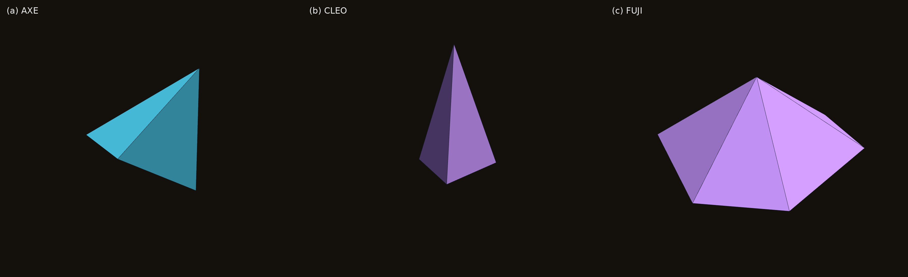
Figure 1.1. (a) AXE*, (b) CLEO** and (c) FUJI, at one scale.
Abstract.
Regular icosahedra cannot fill space: two of them meeting along an edge leave a gap of 83.62° around it. Our thirteen-icosahedron cluster, the Lotus seed, closes every gap with just three small pieces, AXE, CLEO and FUJI. Together with whole icosahedra they fill an icosahedron of edge φ² exactly, in 113 pieces, or in 63 pieces when built as we first built it: a dodecahedron, 12 Johnson solids J11 (Johnson, 1966; Zalgaller, 1969) and then 30 AXE and 20 FUJI.
AXE and CLEO are two of the Mosseri–Sadoc tiles, scaled by 1/τ. Sadoc and Mosseri made their tiles to describe icosahedral order in real materials. Here the same tiles arrive on their own, as the gap pieces of a cluster built from whole icosahedra.
FUJI, a hexagonal pyramid, is new. We prove that it is not a union of Mosseri–Sadoc tiles at its own scale or larger. One proof uses the Dehn invariant and the other the angles of its hexagonal base.
The three pieces recur throughout our work. The Dodecahedral Chain passes through the great stellated dodecahedron and the excavated dodecahedron. The dodecahedron is a small icosahedron with 12 caps, 30 AXE and 20 CLEO. The Chain of Karma repeats the Lotus seed at every scale, and the Stella-Corona grows the pieces into a network.
Every volume, angle and count is recomputed from the study data (CHECKS.json). We give printable nets so the Lotus seed can be built by hand.
1. Introduction
Twelve spheres fit around one, and the twelve centres are the corners of an icosahedron. Frank showed that this thirteen-atom cluster is more stable than the thirteen-atom pieces of the cubic and hexagonal crystals [Frank 1952]. It cannot be continued through space, however: the icosahedra around one another leave gaps that no number of icosahedra can close.
Sadoc and Mosseri described this icosahedral order through the 600-cell, a four-dimensional polytope whose 600 tetrahedral cells fit together perfectly on a curved three-dimensional sphere [Sadoc & Mosseri 1999]. Their work also gave six tetrahedral tiles with golden edge ratios, the Mosseri–Sadoc tiles, from which icosahedral structures are built in flat space [Mosseri & Sadoc 1982; Kramer 1982; Koca et al. 2020].
We came to the same gaps from the other side, with whole icosahedra in flat space. Our Lotus seed puts 12 icosahedra around a small one and fills what is left [Icosa-13 study]. Two of the three pieces that do the filling turn out to be Mosseri–Sadoc tiles; the third, FUJI, is new. This chapter describes the three pieces (Section 2), the Lotus seed they complete (Section 3), and the solids, chains and networks they build elsewhere (Sections 4 and 5). Section 6 proves FUJI's independence, and Section 7 gives the nets.
Units: the icosahedra have edge 1, and φ = τ = (1 + √5)/2.
2. Three pieces
Figure 1.1, at the head of the paper, shows the three pieces at one scale, the one at which they fill the Lotus seed.
The names are ours. AXE is shaped like an axe head, with its sharp edge as the blade. CLEO is named after Cleopatra's Needle, the obelisk in London. FUJI has the shape of Mount Fuji, and its colour is that of the fuji flower, Japanese wisteria.
Piece
Shape
Edges
Volume
Credit
AXE
tetrahedron
five of length 1, one of 1/φ
1/12
Mosseri–Sadoc t6 at scale 1/τ
CLEO
triangular pyramid
base equilateral 1/φ, side edges 1
(√5 − 1)/24
Mosseri–Sadoc t4 at scale 1/τ
FUJI
hexagonal pyramid
base edges 1 and 1/φ alternating, all six side edges 1
(1 + 3√5)/24
new
AXE is two equilateral triangles hinged at 41.81° (cos = √5/3). Two icosahedra sharing an edge leave 360° − 2 × 138.19° = 83.62° around it, as two gaps of 41.81°, one on each side. An AXE closes each one.
CLEO is a slender pyramid whose four faces meet at 63.43° along its long edges. Placed on a face of an icosahedron of edge 1/φ, twenty CLEOs make the spikes of Kepler's great stellated dodecahedron (Section 4).
FUJI has a hexagonal base with all angles 120° and sides 1 and 1/φ alternating. The base is cyclic: all six corners lie on a circle of radius √(2/3), which puts the apex at height 1/√3 with every side edge 1. FUJI sits in the corner where three icosahedra meet, with its apex at a corner of the dodecahedron inside the cluster.
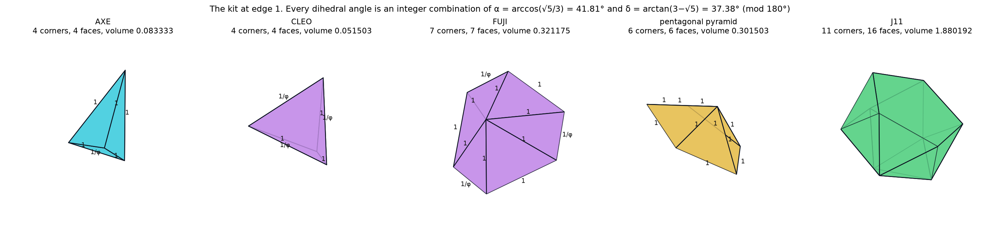
Figure 1.2. The pieces at edge 1, every edge labelled: AXE, CLEO, FUJI, the pentagonal cap J2 and J11 [Chain of Karma].
Two angles. All the dihedral angles of the three pieces are made of two angles, α = arccos(√5/3) = 41.81° and δ = 37.38° (FUJI's base angle on its short edges):
Angle
As α, δ
Where
41.81°
α
AXE's hinge; FUJI's base on its long edges
37.38°
δ
FUJI's base on its short edges
63.43°
π − α − 2δ
AXE's short edge; CLEO's side edges
79.19°
α + δ
AXE's other four edges; CLEO's base
116.57°
α + 2δ
the dodecahedron's dihedral angle
142.62°
π − δ
FUJI's side edges
These relations hold to 120 digits (integer-relation search, Icosa-13 study §9). The same two angles reappear in Section 6, where they make the Dehn invariants exact.
3. The Lotus seed
Twelve icosahedra placed on the five-fold axes of a small central icosahedron, parallel to it and slid inward until they meet, share 30 whole edges. Their inner rings are the 12 faces of a dodecahedron of edge 1. R. W. Gray described this arrangement in 2002 and noted that the 12 icosahedra outline a larger one [Gray 2002]; we call the cage DESHI***. Gray did not fill the gaps; the Lotus seed does.
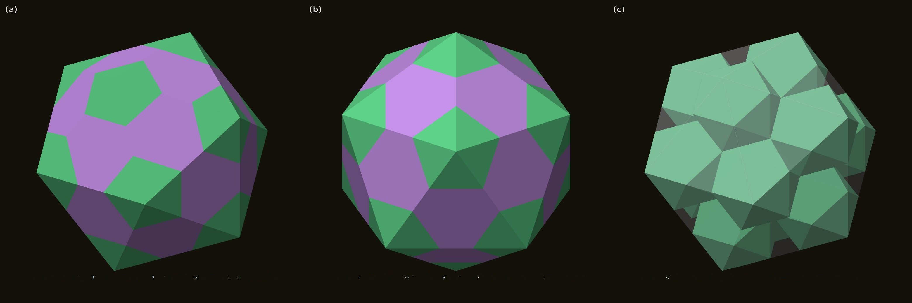
Figure 1.3. The Lotus seed: (a) the filled cluster; (b) down a five-fold axis; (c) its hull, a regular icosahedron of edge φ², over the cage of 12 icosahedra.
The filling. Thirty AXE close the outer grooves, thirty more close the inner ones, 20 FUJI fill the outer corners, and 20 CLEO fill the inner corners around a small icosahedron of edge 1/φ:
The result is exactly a regular icosahedron of edge φ². Its 20 large faces are each three icosahedron faces and one FUJI base.
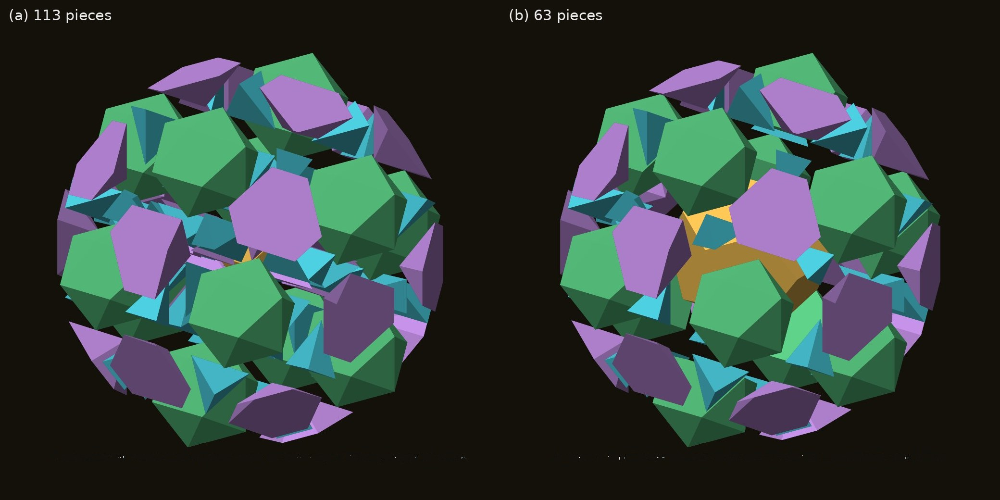
Figure 1.4. The Lotus seed pulled apart: (a) the 113-piece build; (b) our 63-piece build. Green: icosahedra and J11; cyan: AXE; purple: FUJI and CLEO; gold: the centre (a) and the dodecahedron (b).
The 63-piece build. We first made this solid in the Polyhedraverse app on 5 October 2026, while working on a dodecahedron problem, by putting a J11 on every pentagon of a dodecahedron. Each J11, together with the cap hidden inside the dodecahedron, is one of the 12 outer icosahedra, so:
The small centre, the inner AXE and the CLEOs merge into the single dodecahedron. Two standard solids and two gap pieces make it the easiest way to build the Lotus seed by hand (Section 7). The same move, a J11 on every unit pentagon, applied to an icosidodecahedron instead of a dodecahedron gives our UNITY [Icosa-13 study].
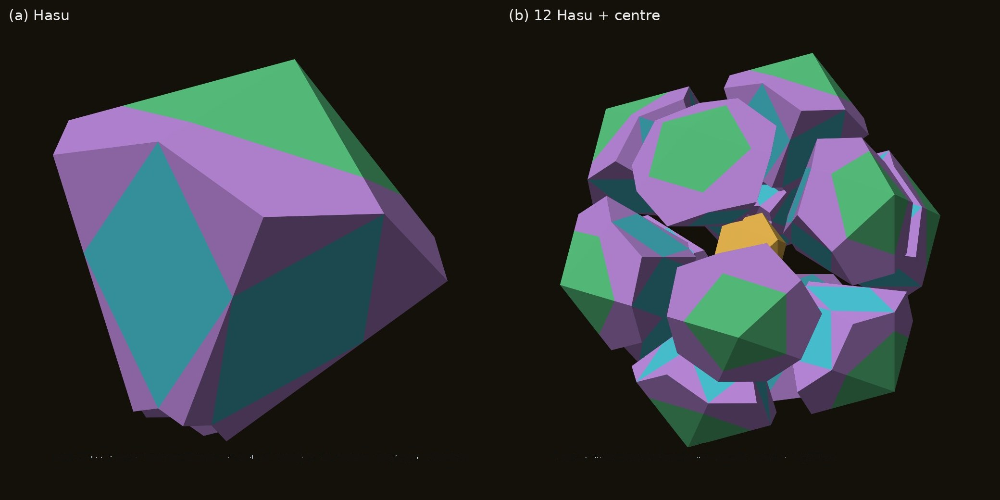
Figure 1.5. (a) Hasu, the finned unit: an icosahedron with its share of the gap pieces (21 parts, 45 faces). (b) Twelve Hasu and the centre rebuild the Lotus seed, and each lifts straight out along its axis.
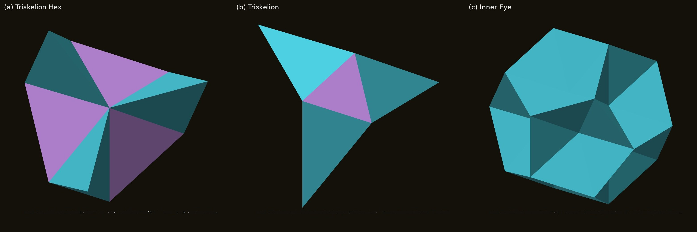
Figure 1.6. The pieces around each dodecahedron corner and the core. (a) Triskelion Hex = FUJI + 3 AXE. (b) Triskelion = CLEO + 3 AXE. (c) Inner Eye = I(1/φ) + 30 AXE + 20 CLEO, the dodecahedron with its 12 caps removed (volume 5φ/2).
The Triskelion has exactly the volume of the pentagonal cap J2, (5 + √5)/24.
4. The same pieces, other solids
The dodecahedron. Adding the 12 caps to the Inner Eye gives the dodecahedron, so
D(1) = I(1/φ) + 12 J2 + 30 AXE + 20 CLEO.
Built in that order, the stages are classical solids [Capturing the In-betweens]:
the icosahedron I(1/φ) + 20 CLEO is Kepler's great stellated dodecahedron;
+ 30 AXE is the excavated dodecahedron, a stellation of the icosahedron, on the same 32 corners [Coxeter et al. 1938; Wenninger 1971];
+ 12 caps is the dodecahedron.
This is the Dodecahedral Chain: from the icosahedron to its dual through two star solids, with AXE and CLEO doing all the work.
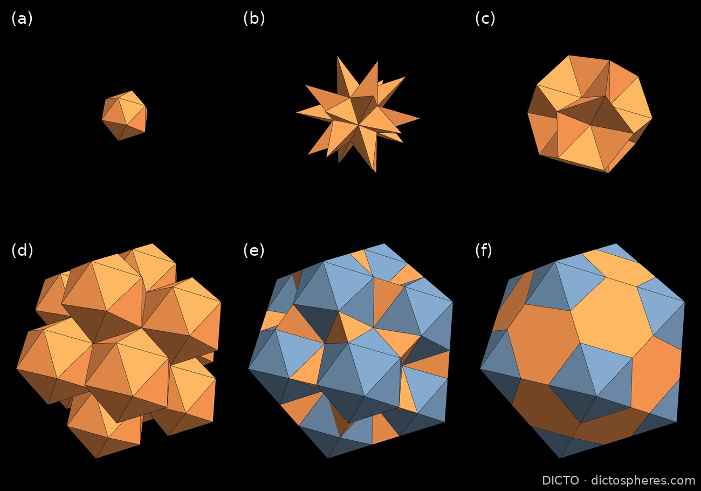
Figure 1.7. The Lotus seed built outward: (a) core icosahedron; (b) + 20 CLEO, the great stellated dodecahedron; (c) + 30 AXE, the excavated dodecahedron; (d) + 12 icosahedra; (e) + 30 AXE; (f) + 20 FUJI, the icosahedron of edge φ². Orange: the pieces added at each step.
5. Chains and networks
The Chain of Karma. The Lotus seed is an icosahedron enlarged by φ², made of icosahedra and the three pieces. Replacing every icosahedron in it by a Lotus seed, and keeping the gap pieces whole, fills the icosahedra of edge φ⁴, φ⁶, … exactly. Steps 1 to 3 have 113, 1,569 and 20,497 pieces [Chain of Karma]. AXE, CLEO and FUJI stay whole at each step, so they appear in every size, one step of φ² apart. The enlarged pieces cannot be cut back into the small ones (their Dehn invariants forbid it), so the Chain is a hierarchy with gap pieces in every size, rather than a self-similar tiling.
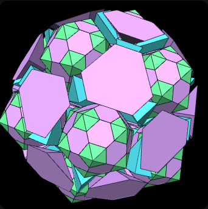
Figure 1.8. The Chain of Karma, step 2: 1,569 pieces filling the icosahedron of edge φ⁴.
The Stella-Corona. On an icosidodecahedron we place 20 icosahedra on the triangles and a King of Pentacles on each of the 12 pentagons: a J2, 10 AXE, 5 CLEO and a small J2, with a flat pentagram on top. The result is closed, every contact is a whole face, and its volume is (120 + 47√5)/3. Stella-Coronas that share icosahedra form a chain along a three-fold axis and a diamond network, the first periodic network of icosahedral clusters in this work [Icosa networks study].
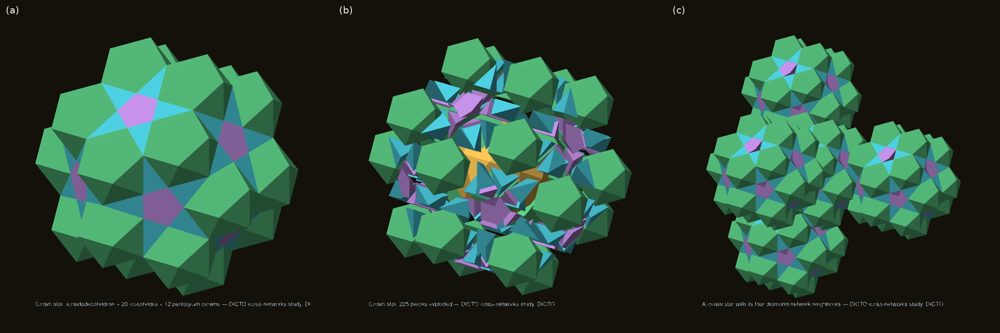
Figure 1.9. The DICTO Stella-Corona: (a) closed; (b) pulled apart; (c) in its diamond network.
6. FUJI stands alone
AXE and CLEO are Mosseri–Sadoc tiles. Is FUJI made of them?
Volume does not decide it. FUJI has exactly the volume of 3 AXE + CLEO + the smallest Mosseri–Sadoc tile t1 at scale 1/τ.
The Dehn invariant does. Two solids can be cut into each other only if they have equal Dehn invariants: the sum over edges of length ⊗ dihedral angle, with angles counted modulo rational multiples of π. With every angle written in α and δ, and every length as a + b√5:
1-part (α, δ)
√5-part (α, δ)
FUJI
(3, −15/2)
(0, 3/2)
3 AXE + CLEO + t1′
(27/2, 15/2)
(−1/2, 1/2)
The √5-parts differ by (α + 2δ)/2 = (π − arctan 2)/2. Since cos²(arctan 2) = 1/5, and a rational multiple of π with rational cos² can only have cos² equal to 0, 1/4, 1/2, 3/4 or 1, arctan 2 is not a rational multiple of π. So the invariants differ, and no such dissection exists.
No Mosseri–Sadoc mix at this scale or larger. A search over all six tiles at four scales finds other mixes with FUJI's volume and Dehn invariant. The base of FUJI settles them all:
Each 120° corner of the hexagon must be made as 60° + 60°, from two equilateral tile faces lying in the base. (The Mosseri–Sadoc faces have angles 60°, 36°/72° or 36°/108°.)
At these scales the equilateral faces have side 1 or 1/τ. So the base must hold a side-1 triangle on each long edge and a side-1/τ triangle on each short edge.
Those six triangles have a total area of 1.795, more than the hexagon's 1.669. Two of them would overlap, so no such dissection exists.
Mixes of smaller Mosseri–Sadoc tiles remain open. CLEO itself fits inside FUJI, with room to spare: it can grow to 1.023 times its size there.
So FUJI is a genuinely new piece, and the Lotus seed needs it. Koca et al. note that the Mosseri–Sadoc tiles alone cannot inflate the icosahedron past edge τ [Koca et al. 2020]. Taking whole icosahedra as pieces, with FUJI in their corners, the Lotus seed reaches φ², and the Chain of Karma carries on without end.
7. Build it
The nets (nets/axe-cleo-fuji-nets.pdf) print on A4 at 45 mm per unit, giving a Lotus seed with edges of about 118 mm. They contain one dodecahedron, 12 J11, 30 AXE and 20 FUJI, with CLEO for the 113-piece build and the star solids. Each net is checked: every face is congruent to the solid's, every edge is either a fold or a numbered glue pair, and nothing overlaps.
To build: glue a J11 on each face of the dodecahedron. Then fill the 30 grooves between neighbouring J11 with AXE, and the 20 hexagonal dents at the dodecahedron's corners with FUJI. The finished solid is a regular icosahedron.
* Mosseri–Sadoc tile t6, scaled by 1/φ (Mosseri and Sadoc, 1982). Rediscovered by DICTO as AXE. ** Mosseri–Sadoc tile t4, scaled by 1/φ (Mosseri and Sadoc, 1982). Rediscovered by DICTO as CLEO. *** Gray's cage of twelve icosahedra (Gray, 2002). DICTO's name: DESHI.
Chapter 2. Aristotle's Pyramid
From paper #44, DICTO DOI 10.5281/zenodo.23529497
Theorem: of the five face pyramids of the Platonic solids, only the cube's alone and the tetrahedron's with the octahedron's fill space; the icosahedron's, the Cleo-Icos, needs a partner that is not a face pyramid
Abstract.Main theorem. Of the five face pyramids of the Platonic solids (the cone from the centre over one face), a set fills space exactly when it is the cube's pyramid alone, the tetrahedron's and the octahedron's pyramids together, or the union of these two; no other set fills space. Here a set fills space when copies of its pyramids, in any numbers, any positions and mirror images, every kind used and not necessarily face to face, tile space. The proof is a Dehn-type counting map on dihedral angles, made rigorous with the Splitting Theorem of Conway, Radin and Sadun: the dodecahedron's and the icosahedron's pyramids can never occur, and the tetrahedron's occurs exactly when the octahedron's does; the octet truss cut from its centres and the cubic tiling give the tilings. Corollaries: alone only the cube's pyramid fills space, in pairs only the tetrahedron's with the octahedron's, and with equal edges their numbers are asymptotically equal; the icosahedron's pyramid, the Cleo-Icos*, fills space only with a partner that is not a face pyramid, Antonius (#20). The question is DICTO's: Aristotle wrote that among solids only "the pyramid and the cube" fill space (On the Heavens III.8); read as the regular tetrahedron this is false, and he may have meant the Cleo-Icos. A section after the theorem collects DICTO's earlier exact fillings by the whole Platonic solids with partners. Every angle identity, the test over all 31 sets and the constructions are checked in exact arithmetic.
Figure 2.1. The five face pyramids (gold), each shown in its solid (glass) with its tip at the solid's centre and the face at the bottom: cube, tetrahedron, octahedron, dodecahedron and icosahedron (the Cleo-Icos). Under each: the dihedral angles along its base edges and its side edges (Table 1).
1. The theorem
Face pyramids. For a Platonic solid with centre O, the face pyramid over a face F is the convex hull of F and O (Figure 2.1). Its dihedral angle along a base edge is half the solid's dihedral angle, since the plane through O and the edge bisects it; along a side edge (from O to a corner) it is 360°/q, where q faces meet at that corner. We write C, T, O, D and I for the face pyramids of the cube, tetrahedron, octahedron, dodecahedron and icosahedron; I is DICTO's Cleo-Icos, reached from his CLEO** piece [2, 3].
Face pyramid
Base edges
Dihedral along a base edge
Side edges
Dihedral along a side edge
cube
4
45° = π/4
4
120° (3 faces at a corner)
tetrahedron
3
α/2 ≈ 35.26°
3
120°
octahedron
3
(π − α)/2 ≈ 54.74°
3
90° (4 faces)
dodecahedron
5
θD/2 ≈ 58.28°
5
120°
icosahedron (Cleo-Icos)
3
θI/2 ≈ 69.09°
3
72° (5 faces)
Table 1. The five face pyramids. α = arccos(1/3) ≈ 70.53°, θD = arccos(−1/√5) and θI = arccos(−√5/3) are the dihedral angles of the tetrahedron, dodecahedron and icosahedron; the octahedron's is π − α (its cosine is −1/3) and the cube's π/2.
Filling space. A set U of face pyramids fills space if there is a tiling of space whose tiles are congruent copies (mirror images allowed) of pyramids of U, at finitely many fixed sizes, in any numbers and any positions, every kind in U used, with no face-to-face condition.
Cut each Platonic solid from its centre into identical pyramids, one on every face. Aristotle wrote that the pyramid fills space; he may have meant one of these. The theorem gives the complete answer: only the cube's pyramids fill space on their own, and only the tetrahedron's and the octahedron's do it together. The dodecahedron's and the icosahedron's can never be used at all.
Main theorem. A non-empty set U of the five face pyramids fills space if and only if U is {C}, {T, O} or {C, T, O}: the cube's pyramid alone, the tetrahedron's and the octahedron's pyramids together, or both of these. More precisely, in every tiling of space by copies of face pyramids, (a) no tile is a D or an I, and (b) T tiles occur if and only if O tiles occur.
2. Proof
The proof rests on a simple fact: wherever pieces meet along an edge, their angles round that edge must add up to a full turn.
Lemma 1 (angles round an edge). Let space be tiled by convex polyhedra, finitely many meeting any bounded set, and let e be an edge of a tile P. For all but finitely many points x of e, the tiles containing x have x either in the relative interior of an edge on the line of e, or in the relative interior of a face whose plane contains that line; the wedge angles at x (the dihedral angles of the tiles with x on an edge) add up to 2π, or to π when one tile has x inside a face (the edge lies on a face).
Proof. Only finitely many tiles meet a neighbourhood of e. Leave out of e the finitely many points that are corners of these tiles, or where an edge of one of them crosses the line of e. At any other point x of e, no tile has x in its interior (it would overlap P), and a tile with x inside an edge has that edge on the line ℓ of e. If a tile T has x inside a face, near x it is a half-space; P lies in the other closed half-space, and so does the line ℓ through x, so the plane contains ℓ. Near x every tile is therefore a wedge or a half-space bounded by planes through ℓ, and in the plane at right angles to ℓ through x they become sectors that cover a disc with disjoint interiors: their angles add up to 2π. A half-space counts π, and there is at most one, since two would leave no room for P. ∎
Lemma 1 is the edge-counting step behind the classical fact that a polyhedron which tiles space has Dehn invariant zero (Debrunner [9]; Lagarias and Moews [10]); we prove it here directly because the tilings may use several kinds of tiles.
Now let h be a map from angles to the rationals that is additive with rational coefficients and has h(π) = 0. At every such point x the values of h at the dihedral angles there add up to h(2π) = 0 or h(π) = 0. Such maps exist with any values on α, θD and θI, because:
The awkward angles of the tetrahedron, dodecahedron and icosahedron are unrelated to one another, so none of them can make up for another.
Lemma 2. π, α, θD and θI are linearly independent over the rationals.
Proof. cos² α = 1/9, cos² θD = 1/5 and cos² θI = 5/9, so tan α = 2√2, tan θD = −2 and tan θI = −2/√5: all three are pure geodetic angles in the sense of Conway, Radin and Sadun [4], with tangents rational multiples of √2, √1 and √5, three different square classes. None is a rational multiple of π: if θ = (m/n)π then eiθ is a root of unity and 2 cos θ an algebraic integer, but (2 cos θ)² is 4/9, 4/5 and 20/9, not integers. (Theorem 2 of [4] writes each angle as a rational multiple of π plus their basis angles; this shows the basis part is not zero.) Suppose a rational combination q1α + q2θD + q3θI is a rational multiple of π. By the Splitting Theorem of [4, Theorem 3], so is each part whose tangents are rational multiples of one square root: q1α, q2θD and q3θI separately; hence q1 = q2 = q3 = 0. ∎
In this basis the cube pyramid's angles are π/4 and 2π/3, the side edges' 2π/3, π/2 and 2π/5, all rational multiples of π (h = 0); the base edges carry ½α (T), ½π − ½α (O), ½θD (D) and ½θI (I). This is the argument of #20 for the Cleo-Icos alone [3, §5.6–5.7], carried out for all five and made rigorous with [4].
Keep count of one awkward angle at a time. A dodecahedron or icosahedron pyramid leaves an angle nothing can complete; a tetrahedron pyramid's angle can be completed only by an octahedron pyramid's, and the other way round.
Proof of (a) and (b). (a) Choose h(θD) = 1 and h(π) = h(α) = h(θI) = 0. The base edges of a D carry h = ½, and every other dihedral angle of every pyramid carries 0. At a point x of a base edge of a D, chosen as in Lemma 1, the values of h add up to at least ½, not 0: a contradiction. The same with h(θI) = 1 excludes I. (b) Choose h(α) = 1, the rest 0: a T's base edges carry +½, an O's −½, all other angles 0. Without O, a base edge of a T gives a sum of at least ½; without T, a base edge of an O gives at most −½. So a set that fills space contains neither D nor I, and contains T exactly when it contains O: it is {C}, {T, O} or {C, T, O}.
And these three ways really work: six cube pyramids make a cube, and the classical octet of tetrahedra and octahedra, cut from their centres, gives the other two.
The three sets fill space. {C}: six cube pyramids make a cube. {T, O}: Maurolico's octet [1] of regular tetrahedra and octahedra, each cut from its centre into its face pyramids. Two tetrahedra on opposite faces of an octahedron make a rhombohedron of 60°, one cell of the face-centred cubic lattice [1]; with lattice vectors (1, 1, 0), (1, 0, 1), (0, 1, 1) the octahedron is 4/3, each tetrahedron 1/3 and the cell 2, and it cuts into 8 octahedron pyramids and 8 tetrahedron pyramids (Figure 2.2, top). Round each edge of the octet, between 2 tetrahedra and 2 octahedra, the pyramids give 4 × α/2 + 4 × (π − α)/2 = 2π. {C, T, O}: place the octet with its octahedra centred at the integer points of odd coordinate sum (corners at distance 1 along the axes) and its tetrahedra in the unit cubes; then every face pyramid lies in a slab k ≤ z ≤ k + 1, so the plane z = 0 is made of pyramid faces. Keep the octet's pyramids below it and fill the half-space above it with unit cubes cut into cube pyramids. ∎
Verification. pyramid_checks.py checks in exact arithmetic every angle in Table 1 (through cos² and the sign of cos), the facts used in Lemma 2, the test (a)–(b) over all 31 non-empty sets of the five pyramids (only {cube}, {tetrahedron, octahedron} and {cube, tetrahedron, octahedron} pass, and with all five allowed D and I are still excluded), the octet cell and its pyramids, and the slabs on a patch of 112 octahedron and 32 tetrahedron pyramids.
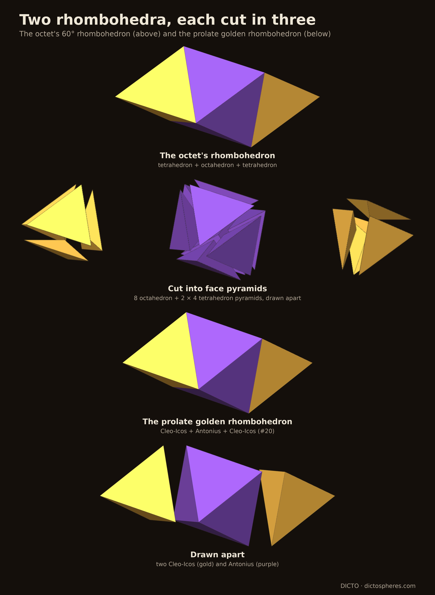
Figure 2.2. Above: one octet cell, the 60° rhombohedron of tetrahedron + octahedron + tetrahedron, whole (gold, purple, gold) and cut into face pyramids: the octahedron into its 8 pyramids (purple) and each tetrahedron into its 4 (gold), drawn slightly apart along their own axes. Below: the prolate golden rhombohedron, Cleo-Icos + Antonius + Cleo-Icos (#20), whole and drawn apart along its long axis. Each panel is scaled to fit.
3. Corollaries
Alone, only the cube's pyramid works; in pairs, only the tetrahedron's with the octahedron's.
Corollary 1 (alone and in pairs). Alone, only the cube pyramid fills space. In pairs, only the tetrahedron and octahedron pyramids do; every other pair fails, the pairs with the cube pyramid because their second piece cannot be used.
When tetrahedron and octahedron pyramids fill space together, they come in equal numbers over large regions, as long as their edges are equal.
Corollary 2 (equal numbers). In any tiling of space by tetrahedron pyramids of edge a and octahedron pyramids of edge b, the numbers NT(R) and NO(R) of each inside a ball of radius R satisfy |a NT(R) − b NO(R)| ≤ C R² for a constant C; so their numbers are in the ratio b : a in the limit, equal when the edges are equal, as in the octet.
Proof. With h(α) = 1, Lemma 1 gives a sum of 0 at all but finitely many points of each edge. Integrate along all edges inside the ball: Σ over tiles of Σ over their edges of h(angle) × (length inside the ball) = 0. A tetrahedron pyramid wholly inside contributes 3 × a × ½, an octahedron pyramid 3 × b × (−½); the tiles that meet the sphere are at most C′R² in number (bounded size, volume bounded below) and contribute a bounded amount each. ∎
The icosahedron's pyramid, the Cleo-Icos, can fill space only with a different kind of partner: DICTO's Antonius, two Cleo-Icos to one Antonius.
Corollary 3 (the Cleo-Icos needs Antonius). The Cleo-Icos fills space with no set of face pyramids; a partner must be another kind of solid. Antonius is one [3, §5.7]: the three lines from the icosahedron's centre to the corners of a face meet at arccos(1/√5) ≈ 63.43°, the angle of the golden rhombus, so they span a prolate golden rhombohedron, and the planes x + y + z = 1 and 2 (in coordinates along those lines) cut it into a Cleo-Icos at each sharp corner and Antonius in the middle, a trigonal antiprism of exactly 4 times the Cleo-Icos's volume (the rhombohedron is 6 times). Golden rhombohedra tile space by a lattice, so Cleo-Icos and Antonius fill space, two to one (Figure 2.2, below). In the counting map's terms: along Antonius's 6 triangle edges the angle is π − θI/2 ≈ 110.91°, which with the Cleo-Icos's θI/2 makes a flat 180°, and along each of its 6 zigzag side edges 108° (the rhombohedron's 72° edges are the 6 at its sharp tips, which belong to the Cleo-Icos); with h(θI) = 1 and edges weighted by length, a Cleo-Icos carries 3 × ½ and Antonius 6 × (−½), −2 times as much, which the two-to-one ratio balances (the Dehn invariant remark of [3]). The same cut of the 60° rhombohedron gives the octet's tetrahedron + octahedron + tetrahedron [3]: in both, the middle third is the partner. (Checked exactly in pyramid_checks.py.)
4. Conjectures
None: every statement above is proved. An open question, not conjectured here, is which tilings by tetrahedron and octahedron pyramids exist besides the octet cut up and its rearrangements.
5. The whole solids and their partners
The whole solids can all fill space as well, each with the right partners; the table gathers how.
How do the whole Platonic solids fill space? DICTO's earlier exact work answers it for all five:
Solid
Fills space with
Source
cube
alone
classical
tetrahedron, octahedron
each other, two tetrahedra to one octahedron: the tetrahedral–octahedral honeycomb (Maurolico; Fuller's octet truss)
classical; Maurolico (1529) [1]
dodecahedron
Dogstars***: dodecahedra on alternate cubes of a cubic lattice, each a cube with six of Euclid's roofs [5]; the hole in each other cube is the Dogstar; the dodecahedra take (5 + √5)/8 ≈ 90.45% of space
tiling and Dogstar: Hart (1996) [6]; exact: The DICTO Sunstar, #42 [7]
icosahedron
DICTO's icosahedral octet: an icosahedron + 6 edge roofs (Admiral Caps) is the regular octahedron, so icosahedra (edge 1) with their roofs in the octet's octahedra, and icosahedra of edge 1/2 with corner and edge caps in its tetrahedra, fill space; the icosahedra take (175 − 75√5)/12 ≈ 60.79%
exact (released finding F21; not a separate paper) [8]; the icosahedron in the octahedron at the golden section is classical (Pacioli; Fuller's Jitterbug)
Table 2. How each whole Platonic solid fills space with partners. The idea of F21 is DICTO's: "the same principle as the dodecahedron and roofs, but with six" [8].
The pattern is the same for both golden solids. Euclid builds the dodecahedron on a cube with a roof on each face [5]; the roofs are what let dodecahedra sit on a cubic lattice, and what is left is the Dogstar. DICTO moved the roofs to the icosahedron: six edge roofs make it an octahedron, which the octet already places. The main theorem says why such help is needed: a solid's face pyramids carry half its dihedral angle along each base edge, and only for the cube (π/2) is that angle a rational multiple of π; the tetrahedron's and the octahedron's cancel each other (α and π − α), while θD and θI cancel with nothing among the five.
6. Aristotle, briefly
What Aristotle wrote, how it was argued over for two thousand years, and where DICTO's proposal fits.
"Among surfaces it is agreed that there are three figures which fill the place that contain them—the triangle, the square and the hexagon: among solids only two, the pyramid and the cube" (Aristotle, On the Heavens III.8, 306b, in Guthrie's translation as quoted by Lagarias and Zong [1]). Read as the regular tetrahedron, the claim is wrong: five tetrahedra round an edge leave 7.36° [1]. Lagarias and Zong trace the long correction [1]: Simplicius and Averroës held that twelve regular tetrahedra fill space round a point; others said twenty; Thomas Bradwardine observed that the icosahedron cuts from its centre into twenty congruent tetrahedra but could not decide whether they are regular (they are not: Lagarias and Zong note that their solid angle at the centre is about ten percent larger than a regular tetrahedron's); Paul of Middelburg asserted that no number of regular tetrahedra fills space round a point, arguing from Euclid's Book XIII; and Maurolico (1529) stated that cubes alone, and tetrahedra together with octahedra, fill space. Twenty regular tetrahedra can meet at a point with small gaps [1]: the near miss behind the commentators' twenty.
We do not claim to know what Aristotle meant; Lagarias and Zong take "pyramid" to be the regular tetrahedron [1], the usual reading. It may have been Bradwardine's tetrahedron, the Cleo-Icos. Read as a face pyramid, the answer is exact: Aristotle's two figures come out right only as the cube's own pyramid (trivially, since six make the cube) and as the tetrahedron's pyramid taken together with the octahedron's, Maurolico's correction [1] cut from the centres; the Cleo-Icos needs Antonius.
7. Conclusion
If Aristotle's pyramid is a face pyramid, his claim is now settled exactly; what he himself meant remains unknown.
Read as a statement about face pyramids, Aristotle's claim is settled by the main theorem: the cube's pyramid fills space alone, and the only other way is the tetrahedron's and the octahedron's pyramids together, in asymptotically equal numbers when their edges are equal. That pair is the octet truss cut from its centres, the classical fix that Maurolico gave for the regular solids. The icosahedron's pyramid, the Cleo-Icos, cannot join any set of face pyramids; its golden fix is Antonius, with which it fills the prolate golden rhombohedron two to one (#20). For the whole solids the common thread is Euclid's roof: on the cube it makes the dodecahedron that fills space with Dogstars, and moved to the icosahedron as six edge roofs it makes the octahedron that the octet places. What stays open is which other tilings by tetrahedron and octahedron pyramids exist, and what Aristotle himself meant.
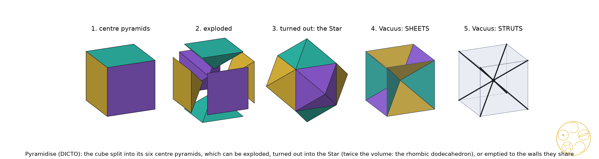
Figure 2.3. Part II of The Centre Pyramids: from Plato to Kepler (DICTO Vacuus Solids, #87) takes the same centre pyramids further, shown here for the cube: together they fill the cube (this chapter); exploded; turned out into the Star, the rhombic dodecahedron of twice the volume; and emptied to the walls they share, the Vacuus, as sheets and as struts.
8. Prior art, and the status of each result
Known, credited: the history of Aristotle's claim, the near miss, Bradwardine's remark on the icosahedron's twenty tetrahedra and Lagarias and Zong's note that they are not regular, Paul of Middelburg's argument from Euclid's Book XIII, Maurolico's tiling and the 60° rhombohedron of two tetrahedra and an octahedron (Lagarias and Zong [1]); Dehn's angle argument and the geodetic-angle theorems (Conway, Radin and Sadun [4]); the tiling of the cube's face pyramids (six make a cube); the dodecahedron–Dogstar tiling (Hart [6]); the icosahedron in the octahedron at the golden section (Pacioli; the Jitterbug); the Cleo-Icos itself, Mackay's unit tetrahedron and a pyramid of Hypsicles (as credited in [3]).
DICTO's earlier work, cited: the Cleo-Icos and Antonius filling and the counting argument for the Cleo-Icos alone (#20 [3]); the exact Sunstar Lattice (#42 [7]); the icosahedral octet (F21 [8]).
Proved here in general: the main theorem, with Lemmas 1 and 2, and Corollaries 1–3 (Corollary 3 with the filling of [3]). The principle behind it is classical: a polyhedron that tiles space has Dehn invariant zero (Debrunner [9]; Lagarias and Moews [10]); Lemma 1 with the counting map is a self-contained proof of the special case needed here, and what is new is the classification of the face-pyramid sets.
Proved for the cases built (exact checks): the angles of Table 1, the octet cell and its 8 + 8 pyramids, the slabs that let cube pyramids join the octet, the golden rhombohedron's split and Antonius's angles.
Observed numerically: only the PSLQ search of angle_relations.py, which finds no integer relation among π, α, θD, θI; it is evidence only, Lemma 2 being the proof.
In the sources checked (the full text of the 81 library sources with a text layer listed in the appendix, searched on 21 October 2026; the library's 175 link-only entries were not searched) we did not find a classification of the tilings by the face pyramids of the Platonic solids.
* The icosahedron face pyramid (classical; Mackay, 1962). Rediscovered by DICTO as the Cleo-Icos. ** Mosseri–Sadoc tile t4, scaled by 1/φ (Mosseri and Sadoc, 1982). Rediscovered by DICTO as CLEO. *** Dodecahedron stellation 8 (Hart, 1996). Rediscovered by DICTO as the Dogstar.
Chapter 3. The Five Pyramids: Shared Networks and Deltahedra
First published in this book, from DICTO's study of 27 October 2026 (studies/2026-10-27-five-pyramids).
Abstract. Cut a Platonic solid from its centre to each face and it falls into congruent face pyramids; the icosahedron's is the Cleo-Icos*. Chapter 2 showed which sets of the five face pyramids fill space when they may touch anyhow. Three further lines follow: which of the five can share a network face to face, which new deltahedra DICTO's pieces make when glued together, and how such solids join. We prove that face to face the five pyramids behave exactly as their whole solids: the only network shared by two different face pyramids is the octet cut from its centres, the tetrahedron's pyramid with the octahedron's, and the Cleo-Icos meets another face pyramid only base to base, in finite bipyramids. A search of every gluing of up to four pieces (five for DICTO's pieces alone) finds 772 solids with equilateral faces; every one is a regular solid cut up again or a face-gluing of regular tetrahedra, octahedra and icosahedra, so none is new, and none of them fills space alone.
Aristotle wrote that the pyramid fills space. The five pyramids cut from the centres of the Platonic solids are the natural candidates, and they lead to the four-dimensional solids of Part III, where each of them turns out to be the core of one. This chapter asks how the five behave when they must meet whole face to whole face, and whether DICTO's own pieces, glued together, make new solids with equilateral faces, new deltahedra.
1. The five face pyramids
With the edge of each solid 1, α = arccos(1/3), θD = arccos(−1/√5) and θI = arccos(−√5/3), the five pyramids are (exact values, sympy):
Pyramid
Faces
Base-edge dihedral
Side-edge dihedral
Cube (C)
square 1; 4 isosceles (1, √3/2, √3/2)
45°
120°
Tetrahedron (Q)
equilateral 1; 3 isosceles (1, √6/4, √6/4)
α/2 = 35.26°
120°
Octahedron (O)
equilateral 1; 3 right isosceles (1, √2/2, √2/2)
(π − α)/2 = 54.74°
90°
Dodecahedron (D)
regular pentagon 1; 5 isosceles
θD/2 = 58.28°
120°
Icosahedron (Cleo-Icos)
equilateral 1; 3 isosceles, side/base √((5+√5)/8)
θI/2 = 69.09°
72°
Figure 3.1. The three ways two different face pyramids meet face to face, all base to base: the tetrahedron's pyramid on the octahedron's (the octet's shared face), and the Cleo-Icos on either of them (finite only).
2. Shared networks, face to face
Theorem 1. In a face-to-face tiling by face pyramids, two different face pyramids meet only base to base, and the only tiling that uses two different face pyramids is made of the tetrahedron's and the octahedron's pyramids: the octet truss cut from its centres, and its layer stackings. The Cleo-Icos meets another face pyramid only in finite bipyramids and never in a face-to-face space filling.
Proof. (1) The side faces of different pyramids are never similar: the cosines of their apex angles, 1/3, −1/3, 0, √5/3 and 1/√5, all differ, and no side face is equilateral; so a side face meets only a side face of the same pyramid, and congruence then carries base edge to base edge and apex to apex. (2) The square and the pentagon occur once each; the equilateral bases of the tetrahedron's, octahedron's and icosahedron's pyramids match each other at equal edge. So two different pyramids meet only base to base. (3) Round a side edge every neighbour is the same kind with the same apex, so the 360° is made by 3, 3, 4, 3 or 5 copies, and each pyramid lies inside its whole solid. Round a base edge the pyramids come in pairs of one kind glued on their sides, and a mixed edge star needs as many angles α/2 as (π − α)/2, since these angles are independent over the rationals of π (Chapter 2, Lemma 2): the only mixed star is four of each, 4·α/2 + 4·(π − α)/2 = 2π, the octet edge. Every other mixed star allowed by the angles alone (twenty are listed in the study data) fails the face condition. ∎
So the pyramids are no more sociable than their solids. A network built on the Cleo-Icos needs a partner that is not a face pyramid: Antonius, which fills the golden rhombohedron with two Cleo-Icos (#20, Chapter 2), or the connectors of #47, with which all five Platonic solids, and so all five face pyramids, fill space together.
3. New deltahedra from DICTO's pieces?
Seventeen of DICTO's pieces and their relatives carry at least one equilateral face: the regular tetrahedron, octahedron and icosahedron, the half octahedron P, Antonius, the Admiral Cap, the six Mosseri–Sadoc tiles (among them AXE** and CLEO***, Chapter 1, and the Tricap****), the Weirdstone and the Tadpole, and the three triangle-based face pyramids. We glued them whole face to whole congruent face, in every way, mirror images allowed, keeping only clusters whose interiors do not meet, and kept a result when its surface, merged into planar faces, was a closed surface of equilateral triangles of one size enclosing the pieces' total volume. Run A used all pieces and is complete to three pieces (23, 262, 7,162 and 120,020 clusters at one to four pieces); run B used DICTO's pieces alone and reached five (363,319 clusters).
Result. 772 different solids with equilateral faces were found, every one closed. Four have the face pattern of a convex deltahedron and are classical: four Q make the tetrahedron, two P the octahedron, two tetrahedra the triangular bipyramid, one icosahedron itself. None is a variant of a convex deltahedron, with its pattern of faces but another shape. The other 768 are face-gluings of regular tetrahedra, octahedra and icosahedra, a known infinite class; the smallest lie inside the enumeration of deltahedral graphs up to ten corners by Tsuruta, Mitani, Kanamori and Fukui (2014). No solid uses Antonius, the Admiral Cap, AXE, CLEO, the Tricap, the Weirdstone, the Tadpole, the Cleo-Icos or the octahedron's pyramid. Six Admiral Caps on an icosahedron give a deltahedron only all together, as Pacioli's octahedron (#47).
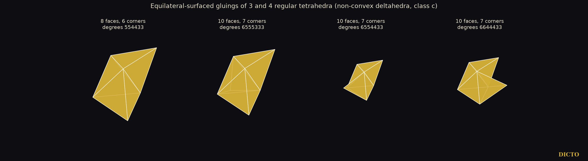
Figure 3.2. The smallest solids of the search that are not regular: face-gluings of three and of four regular tetrahedra.
Variants of the regular deltahedra, which DICTO expected to join differently, do exist: one face pattern can have a convex form and non-convex ones (Tsuruta et al., graph 950). They come from denting a solid, pushing a corner in, which removes material; gluing pieces never makes them in this range. Chapter 5 finds such variants where DICTO looked next: in the shadows and slices of the four-dimensional solids.
4. How the solids found can join
The counting map of Chapter 2 decides the rest. With h(α) = 1, a solid of nT regular tetrahedra, nO octahedra and nP half octahedra (edge 1) scores 6nT − 12nO − 6nP; with h(θI) = 1, a solid with nI icosahedra scores 30nI. Every solid with an icosahedron scores above zero, so it fills space neither alone nor with face pyramids. A solid of tetrahedra and octahedra with equilateral faces never has a tetrahedron on an octahedron face (the faces would lie in one plane), so it is all tetrahedra or all octahedra and its score is not zero: none of the 772 solids fills space alone.
5. Where the results stop
Gluings of five or more pieces with the regular solids, and of six or more of DICTO's pieces alone, were not searched; the search grows about fourteen times per piece. Space fillings of tetrahedron gluings with octahedron pyramids, and of icosahedra with Antonius, are not excluded by the counting map and were not decided. Face shapes, angles, face matching and the counting arguments are exact; the search, its overlap tests and the sorting into distinct solids are in floating point and are a screening.
6. Conclusion
Face to face, the five pyramids keep to their solids: only the tetrahedron's and the octahedron's share a network, the octet, and the Cleo-Icos finds partners only outside the family. Glued together, DICTO's pieces make no new deltahedron up to four pieces (five for his own pieces). The new shapes DICTO was looking for lie elsewhere: in the four-dimensional solids, whose shadows and slices are the subject of Part II, and whose cores, Part III shows, are exactly these five pyramids.
Sources checked
DICTO's reference library, five queries ("non-convex deltahedra enumeration"; "deltahedron equilateral triangle faces polyhedra list"; "face-to-face gluing of regular tetrahedra octahedra icosahedra polyhedra"; "central pyramids of Platonic solids space filling"; "Mosseri Sadoc golden tetrahedra tiles"), with the items returned and read: Johnson 1966; Sommerville 1922; Kramer 1982; Torquato and Jiao 2009; Lagarias and Zong 2012; Koca, Koc, Koca and Al-Siyabi 2020; Papadopolos and Ogievetsky 1999; Akpanya, Goertzen and Niemeyer 2024; and others listed in the study. Web: the search "non-convex deltahedra enumeration Cundy Trigg Freudenthal van der Waerden", with en.wikipedia.org/wiki/Deltahedron and Tsuruta et al. 2014 (ICGG 2014, pages 1–4) read. DICTO's papers #19, #20, #44 and #47.
* The icosahedron face pyramid (classical; Mackay, 1962). Rediscovered by DICTO as the Cleo-Icos. ** Mosseri–Sadoc tile t6, scaled by 1/φ (Mosseri and Sadoc, 1982). Rediscovered by DICTO as AXE. *** Mosseri–Sadoc tile t4, scaled by 1/φ (Mosseri and Sadoc, 1982). Rediscovered by DICTO as CLEO. **** Mosseri–Sadoc tile t3 (Mosseri and Sadoc, 1982). DICTO's name: Tricap.
Chapter 4. Face to Face
From paper #77, DICTO DOI 10.5281/zenodo.23779962
A New Law of Aristotle's Pyramids: the five pyramids keep to their solids
Abstract. Cut a Platonic solid from its centre to each face and it falls into congruent face pyramids; the icosahedron's is the Cleo-Icos*. Paper #44 found which sets of the five fill space when they may touch in any way. Next come the face-to-face case, where pieces meet whole face to whole face, and a search for new deltahedra among DICTO's pieces. Main theorem. In every face-to-face tiling of space by face pyramids, the pyramids round each apex make up their whole solid, so the tiling is a face-to-face tiling by whole Platonic solids, each cut from its centre: either the cubic tiling or a tiling by regular tetrahedra and octahedra with two of each round every edge, such as the octet. The dodecahedron's pyramid and the Cleo-Icos occur in no such tiling, and two different pyramids meet only base to base: the tetrahedron's with the octahedron's in the tilings, and the Cleo-Icos with either of them only in finite bipyramids. The proof needs no computer. Search. Gluing DICTO's pieces face to face, up to six pieces and 5,143,972 different clusters, gives only two solids with equilateral faces: the regular tetrahedron (four tetrahedron pyramids) and the pentagonal bipyramid J13, from four Mosseri–Sadoc tiles t1 and two Hound Tooth**, at both scales of the tiles. The second is two pentagonal pyramids t1 + t2 + t1 (Koca, Koc, Koca and Al-Siyabi 2020) put base to base, so neither is new. This extends Chapter 3.
1. Introduction
Aristotle wrote that the pyramid fills space. Cut the five Platonic solids from their centres and five pyramids appear, the natural ones to try. Here they must meet whole face to whole face, as stones do in a wall.
Paper #44 settled the loose case: a set of face pyramids fills space, touching in any way, exactly when it is the cube's alone, the tetrahedron's with the octahedron's, or these three together. Aristotle's pyramids are therefore the cores of the regular solids, and, as Part III of the book shows, of the four-dimensional ones. Two further lines follow: which of the five pyramids can share a network when every contact is a whole face, and which new deltahedra, solids with only equilateral triangles as faces, DICTO's own pieces make when glued together. Chapter 3 stated the first answer and searched to five pieces. This chapter gives the full face-to-face classification with a short proof (Section 3), carries the search to six pieces (Section 4), and identifies the one new result of that search with a known dissection.
2. The five face pyramids
With the edge of each solid 1, α = arccos(1/3) (the tetrahedron's dihedral angle), θD = arccos(−1/√5) and θI = arccos(−√5/3) (the dodecahedron's and the icosahedron's). The pyramids are C, T, O, D and I (the Cleo-Icos); exact values from the study of 27 October 2026 (sympy):
Pyramid
Faces
Apex angle of a side face (cos)
Base-edge dihedral
Side-edge dihedral
Cube (C)
square 1; 4 isosceles (1, √3/2, √3/2)
1/3
π/4 = 45°
120°
Tetrahedron (T)
equilateral 1; 3 isosceles (1, √6/4, √6/4)
−1/3
α/2 = 35.26°
120°
Octahedron (O)
equilateral 1; 3 right isosceles (1, √2/2, √2/2)
0
(π − α)/2 = 54.74°
90°
Dodecahedron (D)
regular pentagon 1; 5 isosceles
√5/3
θD/2 = 58.28°
120°
Icosahedron (I, Cleo-Icos)
equilateral 1; 3 isosceles, side/base √((5+√5)/8)
1/√5
θI/2 = 69.09°
72°
Table 1. The five face pyramids. A side edge runs from the apex (the solid's centre) to a corner of the base; its dihedral angle is 2π divided by the number of faces at a corner of the solid.
3. Main theorem: face to face, every pyramid stays in its solid
Two different pyramids never share a side face, so round any side edge all the pieces are of one kind, and they close up into their whole solid. What is left is a question about whole solids, and the angles answer it.
Theorem 1. Let space be tiled face to face by copies of the five face pyramids, mirror images allowed. Then (a) the pyramids with a common apex form one whole Platonic solid, so the tiling is a face-to-face tiling by whole Platonic solids, each cut from its centre; (b) that tiling is either the cubic tiling, or a tiling by regular tetrahedra and octahedra in which every edge has two tetrahedra and two octahedra round it; (c) D and I occur in no such tiling, and two different pyramids meet only base to base: T with O in the tilings of (b), I with T or O only in finite clusters (bipyramids, Figure 4.1).
Proof.Faces. The side faces of different pyramids are never congruent: the cosines of their apex angles (Table 1) all differ, and no side face is equilateral. In each side face the apex is the corner between the two equal sides, so a congruence between side faces of one pyramid kind carries apex to apex and base edge to base edge. The square occurs only on C and the pentagon only on D; the equilateral bases of T, O and I match one another.
(a) Side edges. In a face-to-face tiling the tiles round an edge follow one another, each sharing a whole face with the next. Round a side edge of a pyramid P, the next tile shares a side face of P, so it is a pyramid of the same kind with the same apex, and the edge is again a side edge of it; going round, every tile at the edge is of P's kind with the same apex. The side-edge dihedral angles 120°, 120°, 90°, 120° and 72° divide 360° into 3, 3, 4, 3 and 5 parts: exactly the number of faces round a corner of the solid. So the pyramids at one apex, joined across their side faces, close up round every side edge, and together they are the whole solid. The tiling by pyramids is a tiling by whole solids, meeting face to face, since their faces are the pyramids' bases.
(b) Edges of the whole solids. A cube's square meets only another cube, so a tiling with a cube has only cubes (space is connected, and the tile next to a cube across any face is a cube); a face-to-face tiling by cubes is the cubic tiling. Likewise a dodecahedron meets only dodecahedra, and round an edge of a tiling by dodecahedra n θD = 2π, which is impossible because θD is not a rational multiple of π (#44, Lemma 2). In a tiling by tetrahedra, octahedra and icosahedra, the angles round an edge give nT α + nO (π − α) + nI θI = 2π. Since π, α and θI are linearly independent over the rationals (#44, Lemma 2, from the Splitting Theorem of Conway, Radin and Sadun), nI = 0, nT = nO, and then nO π = 2π: two tetrahedra and two octahedra round every edge.
(c) follows from (a), (b) and the face facts: the only face two different pyramids share is an equilateral base, so different pyramids meet base to base; in a tiling only T and O occur, and I meets T or O only in clusters that are not part of any tiling. ∎
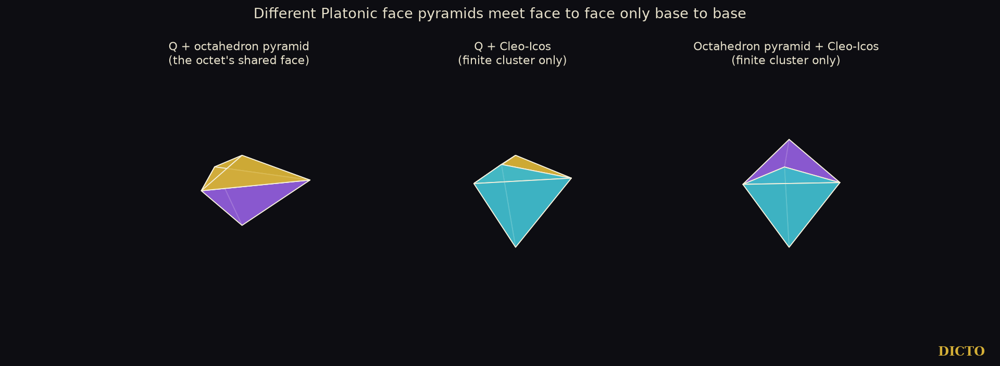
Figure 4.1. The three ways two different face pyramids meet face to face, all base to base: the tetrahedron's pyramid on the octahedron's (the octet's shared face), and the Cleo-Icos on either of them (finite clusters only).
The octet truss, Maurolico's tiling of tetrahedra and octahedra (Lagarias and Zong 2012), has two of each round every edge, so it and its tetrahedra and octahedra cut from their centres realise (b); so do the stackings of its layers, which keep the same edge condition. Theorem 1 does not depend on which other tetrahedron–octahedron tilings exist, and we do not classify them here.
Corollary 1. The Cleo-Icos lies in no face-to-face tiling by face pyramids. A network on the Cleo-Icos needs a partner that is not a face pyramid: Antonius, with which two Cleo-Icos fill the prolate golden rhombohedron (#20), or the connectors of #47, with which all five Platonic solids fill space together.
Comparison with the angle count alone. Before using the faces, the angles round an edge already leave 26 edge stars (combinations of side-edge and base-edge dihedral angles making 2π), 20 of them mixing pyramid kinds; for example two cube pyramids on their bases with one tetrahedron and one octahedron pyramid on theirs and two octahedron pyramids on their sides. The face facts above remove all 20 at once except the octet's: four tetrahedron and four octahedron pyramids, on their bases, round one edge. The list is in the study data (q1-pyramids.json).
4. New deltahedra from DICTO's pieces
If the pyramids will not make new networks, perhaps DICTO's own pieces, glued together, make new solids with only triangles on the outside.
Chapter 3 glued seventeen pieces with at least one equilateral face, whole face to whole congruent face, in every way: all of them to four pieces, DICTO's pieces alone to five. It found 772 solids with equilateral faces, every one a regular solid cut up again or a face-gluing of regular tetrahedra, octahedra and icosahedra; none was new. Here the second search is carried to six pieces.
Pieces. 21 entries: the three face pyramids with an equilateral base (T, O and the Cleo-Icos); Antonius; the Admiral Cap; the six Mosseri–Sadoc tiles t1–t6, among them the Hound Tooth, the Tricap***, CLEO**** and AXE*****, each also at its second scale (factor φ or 1/φ) so that tiles meet on their (1, 1, φ) and (1, φ, φ) faces; and the Weirdstone and the Tadpole with their mirror images. The regular solids themselves and the half octahedron are left out.
Method. A piece is glued whole face to whole congruent face, mirror images allowed; clusters whose interiors meet are dropped (intersection volume, manifold3d); the same cluster reached twice is kept once (a labelled distance signature). A cluster is a result when its surface, merged into planar faces, is a closed surface of equilateral triangles of one size enclosing the pieces' total volume. The search is complete to two pieces; from the third piece on, each new piece covers a face of the cluster that is not equilateral, since such a face must be covered before the cluster can be a deltahedron, and a cluster with only equilateral faces left is tested but not grown. It ran in 4,165 seconds with 12 processes.
Pieces
2
3
4
5
6
Different clusters
191
1,834
25,683
363,319
5,143,972
Solids with equilateral faces (new at that size)
0
0
1
0
2
Table 2. The six-piece search. The counts to five pieces repeat those of Chapter 3 exactly; the six-piece level is new.
Theorem 2 (search). Within the search of Table 2, DICTO's pieces make exactly two solids with equilateral faces: the regular tetrahedron, from four tetrahedron pyramids, and the pentagonal bipyramid J13, from four t1 and two Hound Tooth, found at both scales of the tiles (edge 1 and edge 1/φ). The J13 is two pentagonal pyramids t1 + t2 + t1 put base to base.
Checks. The J13 found has 7 corners, 15 edges and 10 faces; its five equator corners lie in one plane (error 0) at distance 1/(2 sin 36°) from the axis, its apexes at height √((5 − √5)/10) above and below, every edge has length 1 to 2 × 10−16, and its volume is 0.603006, which is (5 + √5)/12, the volume of J13 with edge 1. Each of the six pieces lies on one side of the equator plane: one t1, the t2 and the other t1 above, their mirror images below. The Mosseri–Sadoc tiles have exact corners in ℚ(√5), so the identification is exact; the search itself, its overlap test and the sorting into distinct clusters are in floating point and are a screening.
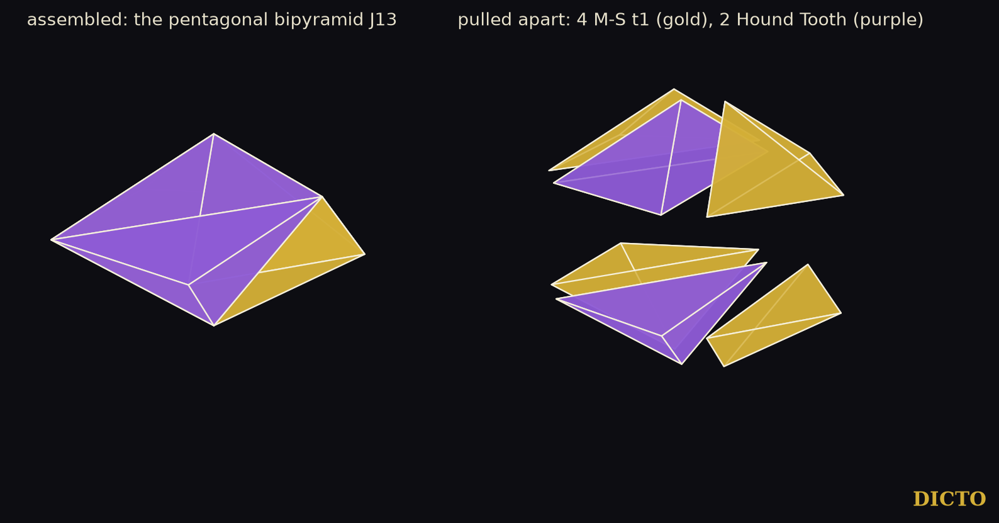
Figure 4.2. The pentagonal bipyramid J13 from six of DICTO's pieces: four Mosseri–Sadoc tiles t1 (gold) and two Hound Tooth (purple). Left, assembled; right, pulled apart into its two pentagonal pyramids t1 + t2 + t1.
Koca, Koc, Koca and Al-Siyabi (2020, p. 6) build the pentagonal pyramid as t1 + t2 + t1, as the projection of a 5-simplex, and use it to build the icosahedron from the tiles. Two of their pyramids on a common pentagon make the J13, so the six-piece result is a direct consequence of their dissection. No solid of the search uses Antonius, the Admiral Cap, the Tricap, CLEO, AXE, t5, the Weirdstone, the Tadpole, the octahedron's pyramid or the Cleo-Icos.
Figure 4.3. From Chapter 3, for comparison: the smallest solids of the first search that are not regular, face-gluings of three and of four regular tetrahedra. Gluing regular solids makes infinitely many such deltahedra, all known in kind.
5. What is new and what is known
Known, credited: the face pyramids and their angles; Maurolico's octet and the tetrahedron–octahedron tilings (Lagarias and Zong 2012); the independence of π, α, θD and θI through the Splitting Theorem of Conway, Radin and Sadun (1999), as used in #44; the Mosseri–Sadoc tiles (Mosseri and Sadoc; Papadopolos and Ogievetsky 1999); the pentagonal pyramid t1 + t2 + t1 (Koca, Koc, Koca and Al-Siyabi 2020) and hence the J13 of Theorem 2; the convex deltahedra (Freudenthal and van der Waerden 1947; Johnson 1966).
New, proved here: Theorem 1, the classification of face-to-face tilings by face pyramids; it reduces them to tilings by whole Platonic solids. As far as the sources checked show, this classification has not been stated before; its proof is elementary once #44's Lemma 2 is in hand.
Searched here: Theorem 2, the six-piece level of the search. Its result is a screening, complete to two pieces and restricted beyond (Section 4); it found nothing new.
Not decided: which tetrahedron–octahedron tilings exist beyond the octet and its stackings; gluings of seven or more of DICTO's pieces, and gluings that cover equilateral faces before the others.
6. In the app
Kaleidohedra, DICTO → 3D+ → Aristotle's Pyramid (kaleidohedra.dictospheres.com/?open=aristotle) shows the five pyramids drawn apart from their solids, the cube's pyramids and the octet cut up, which are the two kinds of tiling of Theorem 1, and the golden fix with Antonius of Corollary 1.
7. Conclusion: what is new
New. Theorem 1 is new as far as the sources checked show: it is the complete classification of the face-to-face tilings of space by the five face pyramids, the case that followed #44. Every such tiling is a tiling by whole Platonic solids cut from their centres, either the cubic tiling or a tetrahedron–octahedron tiling such as the octet; the dodecahedron's pyramid and the Cleo-Icos take part in none, and two different pyramids meet only base to base. Together with #44, which settled the case where pieces may touch in any way, this completes the answer to DICTO's reading of Aristotle for the face pyramids: loose or face to face, the only sets that fill space are the cube's pyramid, and the tetrahedron's with the octahedron's. Face to face the answer is sharper still: the pyramids can only rebuild their own solids.
New, and negative. The six-piece search, 5,143,972 different clusters of DICTO's pieces, gives a negative result: glued face to face, his pieces make no new deltahedron up to six pieces, only the tetrahedron and the pentagonal bipyramid. It is a screening, complete to two pieces and restricted beyond.
Known. The one solid the search added, the pentagonal bipyramid from four t1 and two Hound Tooth, is two pentagonal pyramids of Koca, Koc, Koca and Al-Siyabi (2020). The tools of the proof, the face pyramids, the octet and the angle independence, are classical or come from #44.
The new shapes DICTO was looking for lie elsewhere: where the Cleo-Icos finds its partners outside the family (Antonius, #20; the connectors of #47), and in the four-dimensional solids, whose cores are these same pyramids.
* The icosahedron face pyramid (classical; Mackay, 1962). Rediscovered by DICTO as the Cleo-Icos. ** Mosseri–Sadoc tile t2 (Mosseri and Sadoc, 1982). DICTO's name: Hound Tooth. *** Mosseri–Sadoc tile t3 (Mosseri and Sadoc, 1982). DICTO's name: Tricap. **** Mosseri–Sadoc tile t4, scaled by 1/φ (Mosseri and Sadoc, 1982). Rediscovered by DICTO as CLEO. ***** Mosseri–Sadoc tile t6, scaled by 1/φ (Mosseri and Sadoc, 1982). Rediscovered by DICTO as AXE.
Part II. Shadows
Chapter 5. Shadows of the Fourth Dimension
From paper #62, DICTO DOI 10.5281/zenodo.23687223
Deltahedra that join differently: the triangle-faced shadows and slices of the 5-, 16-, 24- and 600-cell
Abstract. A deltahedron is a solid whose faces are all equilateral triangles; only eight of them are convex. Four regular solids of four-dimensional space are also built from triangles: the 5-cell, the 16-cell, the 24-cell and the 600-cell. DICTO's idea was that their three-dimensional shadows and slices might stand closer to a new family of deltahedra — same pattern of triangles, different shape — than to the eight regular ones, and that such variants would join to other pieces differently. We compute every shadow and slice of the four solids along their four main directions exactly, in numbers of the form a + b√5, and find deltahedra of two new kinds. (a) Two shadows are variants of convex deltahedra, and each joins differently from its regular counterpart: the 5-cell's edge-first shadow (TBP-5) has the pattern of the triangular bipyramid J12, and three copies of it close round an edge; the 16-cell's edge-first shadow (OCT-16) has the pattern of the octahedron, and it fills space on its own. (b) Four shadows and slices of the 600-cell can be rebuilt exactly with every edge equal, keeping their pattern of triangles, and all four are non-convex: a 12-dented icosahedron; the excavated and the augmented dodecahedron; Kagemusha (first called Shadow-17), two diminished icosahedra (J11) glued on their pentagons, identified through DICTO's idea of cutting the pattern in halves; and Slice-48, a solid of 92 triangles with tetrahedral symmetry, found by solving the 600-cell's six large slices exactly with their full symmetry. Supporting results: apart from copies of the solids' own cells and vertex figures, no shadow, layer or slice is a regular deltahedron (Proposition 1), and the other five large slices have no equilateral form with their full symmetry (§6).
1. The idea
DICTO's idea (27 October 2026) was that "4th dimensional shadows may more closely represent any new deltahedron type family than they do the original ones", and that such variants, set against the regular ones, would be "different shapes with different attachability". On the same day a search for new deltahedra glued from DICTO's pieces and the known pieces he works with (AXE*, CLEO**, the Tricap***, the Cleo-Icos****, the Admiral Cap and others; up to 4 pieces of all kinds, up to 5 of DICTO's) had found 772 solids with all faces equilateral, every one of them a gluing of regular tetrahedra, octahedra and icosahedra: no new deltahedron and no variant. The fourth dimension was the next place to look, and it gave the following.
Main result. The triangle-faced shadows and slices of the 5-, 16-, 24- and 600-cell give deltahedra of two new kinds.
(a) Variants that join differently (§4). The 5-cell's edge-first shadow (TBP-5) has the pattern of the triangular bipyramid J12 with unequal edges, and three copies of it close face to face round an edge. The 16-cell's edge-first shadow (OCT-16) has the pattern of the octahedron with unequal edges, and it fills space on its own.
(b) Equal-edged solids from the 600-cell (§5, §6). Four of the 600-cell's shadows and slices can be rebuilt exactly with every edge the same length, keeping their pattern of triangles: the vertex-first shadow (42 vertices, 80 triangles) as a 12-dented icosahedron; the slices at the dodecahedron height (32 vertices, 60 triangles) as the excavated and the augmented dodecahedron; the outer edge-first slices (17 vertices, 30 triangles) as Kagemusha, two J11 glued on their pentagons; and the 48-vertex cell-first slice (92 triangles) as Slice-48, with tetrahedral symmetry. All four forms are non-convex.
2. Method
All arithmetic is exact in ℚ(√5) (numbers a + b√5, a and b rational, with exact signs); floating point only proposes convex hulls, and every hull face is then checked exactly (all points on one side, every edge in two faces, Euler characteristic 2). For each solid and each of four directions — through a vertex, the middle of an edge, the centre of a triangle and the centre of a cell — we take the shadow (the outline of the projection into the 3-space at right angles), the layers (the outline of the vertices at one height) and the slices (the true cut by a 3-space at right angles, through the centre and at every vertex height: the vertices on it plus every edge crossing it). This gives 223 records and 157 distinct solids, 27 of which have all faces triangles. Each of the 27 is compared with the eight convex deltahedra by graph isomorphism; for the patterns that match none of the eight, an equilateral form is sought (least squares on the edge lengths, as in Tsuruta et al. 2014) and confirmed exactly where found.
The shadows and slices themselves are convex, as every projection and cut of a convex solid is, and in general their edges are unequal. The question for each is whether its pattern of triangles can be rebuilt with all edges equal. Where that needs some edges folded inwards, the equilateral form is non-convex: the dents belong to that form, not to the 4D solid.
3. Results
The table lists the all-triangle shadows and slices other than regular tetrahedra, octahedra and icosahedra, grouped by pattern, with the equilateral form found for each pattern.
4D source
Solid
Pattern
Edge ratio
Equilateral form
5-cell
edge-first shadow (TBP-5)
triangular bipyramid J12
√(12/7) = 1.309
variant of J12
16-cell
edge-first shadow = central slice (OCT-16)
octahedron
2/√3 = 1.155
variant of the octahedron
600-cell
vertex-first shadow = central slice (42, 80)
pentakis icosidodecahedron
2/√3
12-dented icosahedron (exact)
600-cell
vertex-first slices at the dodecahedron height (32, 60)
All other all-triangle results are the regular tetrahedron, octahedron or icosahedron, and each is a cell or vertex figure of its 4D solid. Two supporting propositions fix what the table leaves out.
Proposition 1. No shadow, layer or slice of the 5-, 16-, 24- or 600-cell along the four main directions is a regular deltahedron, except copies of the solid's own cells and vertex figures. Among the others, the only patterns of a convex deltahedron that occur are those of the triangular bipyramid and the octahedron, each with unequal edges.
Proposition 2. A bipyramid over an n-gon with all edges equal exists only for n ≤ 5: for n ≥ 6 the equilateral apex would lie in the plane of the polygon or the solid would cross itself. So the hexagonal and decagonal bipyramid patterns of the 16- and 600-cell have no equilateral form.
4. Variants join differently
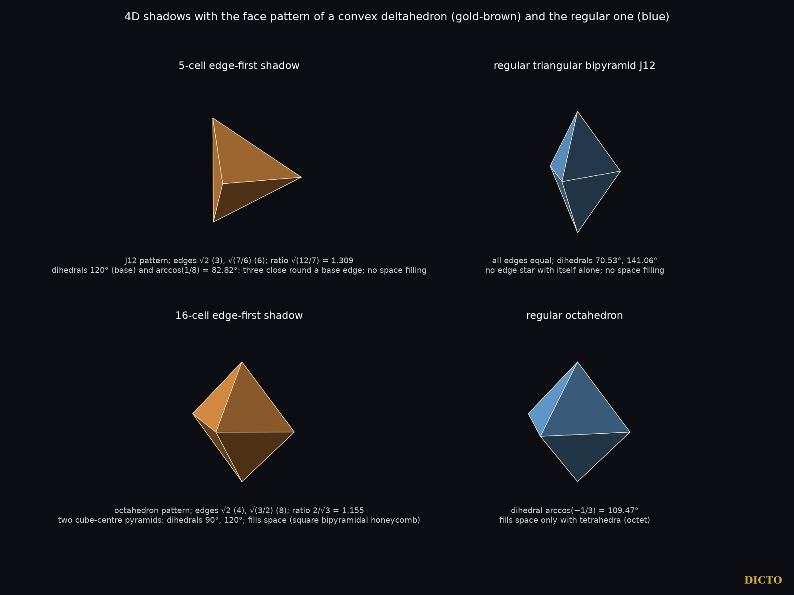
Figure 5.1. The two variants (gold-brown) beside their regular counterparts (blue). Top: the 5-cell's edge-first shadow, with the pattern of the triangular bipyramid J12. Bottom: the 16-cell's edge-first shadow, with the pattern of the octahedron.
TBP-5, the 5-cell's edge-first shadow, has three edges of length √2 and six of length √(7/6). Its faces match no face of J12. Its base edges have a dihedral angle of exactly 120°, so three copies of TBP-5 close face to face round a base edge; regular copies of J12 close no such ring. Its side edges have dihedral angle arccos(1/8), which closes no star of copies, so neither TBP-5 nor J12 fills space.
OCT-16, the 16-cell's edge-first shadow, is a square bipyramid: two copies of the pyramid that joins the centre of a cube to one of its faces, glued base to base. Its dihedral angles are 90° and 120°, and it fills space on its own, face to face: it is the cell of the square bipyramidal honeycomb, a known tiling (§8). The regular octahedron fills space only together with tetrahedra. The angles alone would allow a mixed star round an edge (2·90° + 70.53° + 109.47° = 360°), but the faces of OCT-16 do not match those of the regular octahedron and tetrahedron, so the variant and the regular family do not join face to face.
Both variants therefore differ from their regular counterparts in shape and in how they join, as DICTO expected.
5. The 600-cell's dented patterns, and Kagemusha
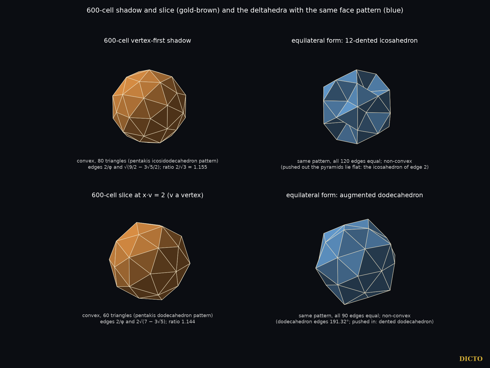
Figure 5.2. The 600-cell's vertex-first slices: the patterns of the pentakis icosidodecahedron and the pentakis dodecahedron, and their exact equilateral forms (12-dented icosahedron; augmented and excavated dodecahedra).
The 600-cell's vertex-first shadow is also its central slice, with 42 vertices and 80 triangles. Its equilateral form is an icosahedron with a shallow dent at each vertex (the 12-dented icosahedron). The vertex-first slices at the dodecahedron height (32 vertices, 60 triangles) have two equilateral forms: the excavated dodecahedron, a known deltahedron, with its pyramids dented inward, and the augmented dodecahedron, with its pyramids pointing outward. The names 12-dented icosahedron and augmented dodecahedron describe obvious constructions, and neither solid is claimed new.
Kagemusha. The 600-cell's edge-first slices at the outer heights have 17 vertices and 30 triangles and five-fold symmetry: a tip at each end and three rings of five vertices between them, with the vertices of the middle ring of degree 6. An equilateral form was first found numerically. DICTO's idea of cutting the pattern in halves identified it: cut at the middle ring, and each half is a J11, the gyroelongated pentagonal pyramid (the diminished icosahedron). Kagemusha's equilateral form is two J11 glued on their pentagons. This form is exact by construction, with every edge 1, and all 136 corner-to-corner distances of the numerical form agree with it to 4·10⁻¹⁶. Its five folded edges are the edges of the shared pentagon, where the dihedral angles of the two J11 add to 2 × 100.81° = 201.62°. J11 is the piece with which DICTO's work began: it fills the gaps between dodecahedra and icosahedra.
6. Slice-48 and the six large slices
One of the 600-cell's six larger all-triangle slice patterns, the 48-vertex cell-first slice, has an exact equilateral form with its full symmetry: Slice-48, described at the end of this section. This section gives the method by which all six were solved and the results for each.
The six patterns have 28 to 72 vertices, with rings of high-degree vertices (7 to 10 triangles meeting at a vertex) between tips of degree 5. Cutting them in halves or caps, as for Kagemusha, matched no known piece, so each was solved directly. The exact symmetry group of each slice equals the full symmetry group of its triangle pattern. Keeping that symmetry, one vertex of each orbit is placed in the subspace fixed by its stabiliser, and each orbit of edges gives one equation |edge|² = 1; every system is square (as many equations as unknowns). The number of complex solutions of each system was found exactly over ℚ(√5) (Singular); every solution was found and refined to 120 digits, and a system counts as complete only when the number of solutions found equals the exact count. Every real solution was then tested for a proper embedding.
Slice (600-cell)
Vertices, triangles
Symmetry
Solutions (complex / real)
Equilateral form
vertex-first, at ±(√5−1)
72, 140
Ih
8 / 4
none: vertices coincide
edge-first, at ±(3+√5)/2
32, 60
D5d
128 / 48
none: edges pierce faces, or faces touch
face-first, at ±(4+2√5)/3
30, 56
D3d
464 / 104
none: edges pierce faces, or faces touch
cell-first, at ±(5+3√5)/4
28, 52
Td
32 / 12
none: edges pierce or cross, vertices coincide
cell-first, at ±(3+√5)/2
42, 80
Td
96 / 32
none: every solution crosses itself
cell-first, at ±(2+√5)/2
48, 92
Td
192 / 48
Slice-48 (one shape; its two solutions differ by a half-turn)
The systems of the 72-, 32-, 28- and 42-vertex slices were also solved with only their rotation group kept, and again no form exists; the real solution counts of the same four systems were rechecked exactly.
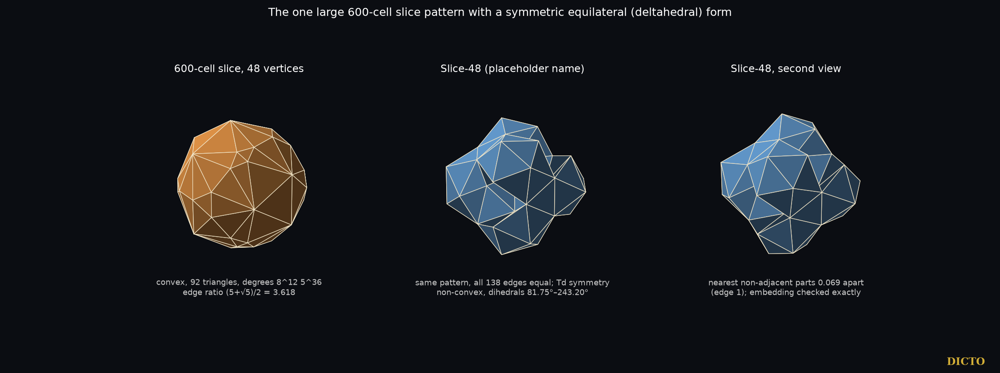
Figure 5.3. The 600-cell's 48-vertex cell-first slice (left, convex, edges in ratio up to (5+√5)/2) and Slice-48, its equilateral form, from two views.
Slice-48. The 48-vertex cell-first slice of the 600-cell has exactly one equilateral form with its tetrahedral symmetry Td: 48 vertices (12 of degree 8, 36 of degree 5), 138 equal edges and 92 triangles. It is not convex: 24 of its vertices lie on its hull, and its dihedral angles are 81.75°, 130.98°, 135.83°, 143.83°, 191.03°, 197.94°, 216.17° and 243.20°. At edge length 1, its nearest non-adjacent parts are 0.069 apart; the embedding was confirmed with exact orientation tests on 85-digit rational coordinates.
Unlike Kagemusha, Slice-48 contains no piece of the icosahedron: it has no dihedral angle of 138.19° and no pentagonal cap. It is not among the non-convex deltahedra we checked (§8); since we did not read all the original papers, we do not claim it new. Forms with less symmetry than the slice's group are not excluded; the rotation-only systems of the 30- and 48-vertex slices did not finish in 50 minutes.
7. A note on the 600-cell's sections
The vertex-first "sections" of the 600-cell that are often listed — icosahedron, dodecahedron, icosahedron, icosidodecahedron — are the outlines of its vertex layers. A true cut at the dodecahedron height or at the equator also meets edges that cross it, and adds their midpoints: the true central section is the 42-vertex solid of §5, with the same pattern, edge lengths and angles as the shadow. This was checked exactly and with an independent floating-point computation.
8. Prior art and credit
Coxeter's Regular Polytopes treats the polytopes, their projections and the vertex-first sections of the 600-cell. The eight convex deltahedra are classical (Freudenthal and van der Waerden 1947); non-convex equilateral realisations and dented variants of deltahedral patterns are studied by Tsuruta et al. (2014). For Slice-48 we also checked the biform deltahedra (Cundy; Olshevsky), the isohedral deltahedra (Shephard; McNeill) and Trigg's spiral deltahedra, through their Wikipedia summaries. The square bipyramidal honeycomb and the excavated dodecahedron are known. In the sources checked, we did not find the comparison of the 4D shadows and slices with the deltahedra, the attachability of the variants, or the identification of Kagemusha.
9. Conclusion
Main result. The triangle-faced shadows and slices of the four-dimensional solids give deltahedra of two new kinds.
(a) Variants that join differently. The 5-cell's edge-first shadow (TBP-5) has the pattern of J12, and three copies of it close round an edge. The 16-cell's edge-first shadow (OCT-16) has the pattern of the octahedron, and it fills space on its own.
(b) Equal-edged solids from the 600-cell. Four of its shadows and slices can be rebuilt exactly with every edge the same length, keeping their pattern of triangles; all four forms are non-convex.
600-cell shadow or slice
Triangles
Rebuilt with equal edges
vertex-first shadow = central slice (42 vertices)
80
12-dented icosahedron: an icosahedron with a shallow dent at each of its 12 vertices
vertex-first slices at the dodecahedron height (32 vertices)
60
excavated dodecahedron (dents inward; known) and augmented dodecahedron (pyramids outward)
edge-first slices at the outer heights (17 vertices)
30
Kagemusha: two J11 glued on their pentagons
cell-first slices with 48 vertices
92
Slice-48: tetrahedral symmetry, dihedral angles 81.75° to 243.20°
Kagemusha is built from two copies of J11, the piece with which DICTO's work began. Slice-48 is the largest of the four: 92 equal triangles with the full tetrahedral symmetry of its slice, found by solving all six large slices of the 600-cell exactly.
10. The walls each shadow keeps
This section is Section 10 of paper #110, Walls of Silence, Version 2 (DICTO DOI 10.5281/zenodo.24272477, all versions), given here in full; the walls are defined in Chapter 10, and the rest of #110 is in Appendix B.
A shadow flattens almost everything. A few flat slices through the centre survive it whole, and every one of them is a wall of the Queens.
The White Queen has two kinds of wall, all of them flat slices through her centre: her 60 mirrors, and 300 cross walls (DICTO's name), each parallel to a pair of her opposite cells. The 360 walls are the Red Queen's walls too (Chapter 10). When a Queen is cast into our space along a direction d, a wall with normal n stays flat in the shadow, as a plane through the shadow's centre, exactly when n is perpendicular to d. The normals of the cross walls point to the White Queen's cell centres and those of the mirrors to the Red Queen's, and a cell is seen side-on exactly when its centre direction is perpendicular to d; so in every shadow the walls kept are the central planes parallel to the cells seen side-on.
In the four main views the kept walls number (mirrors, cross walls) = (15, 30), (6, 10), (4, 12) and (6, 27): corner-, edge-, face- and cell-first for the White Queen, which are cell-, pentagon-, edge- and corner-first for the Red Queen. A solid in the shadow whose edges all lie, with the centre, in kept walls is a possible Vacuus (DICTO's term; the Vacuus is defined in Chapter 10). In the White Queen's corner-first shadow the icosahedra and the dodecahedron are possible Vacuus, 30 of 30 plates on mirrors; in the Red Queen's cell-first shadow, the dodecahedra and a truncated icosahedron at height ±(1/8 + φ/4), with 30 mirror and 60 cross plates (Figures 5.4 and 5.5).
DICTO observed that the shadows "seem to carry interconnected lattices of possible vacuus". They do, exactly: the shadows of each of the four types reach all 360 walls between them, and joining two shadows when they keep a wall in common gives one connected graph. Every shadow is a window on one wall system; Chapter 10 gives the law of its walls, and Chapter 11 the shapes that live in them.
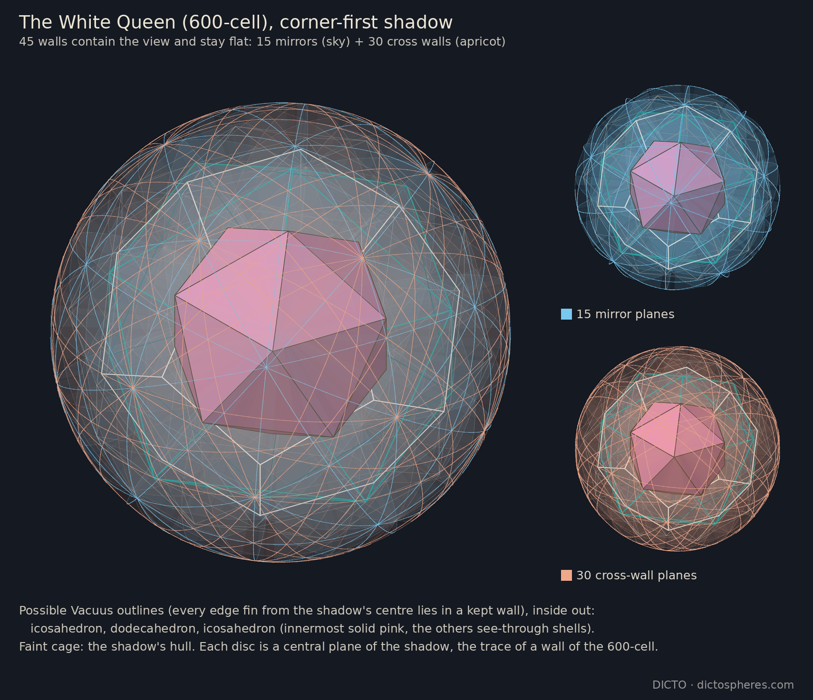
Figure 5.4. The White Queen, corner-first shadow (#110, Figure 8). 45 walls stay flat: 15 mirrors (sky discs) and 30 cross walls (apricot discs), shown together and apart. Possible Vacuus, from the inside out: an icosahedron (solid pink), the dodecahedron and the larger icosahedron. Faint cage: the shadow's hull. Colours are labels only.
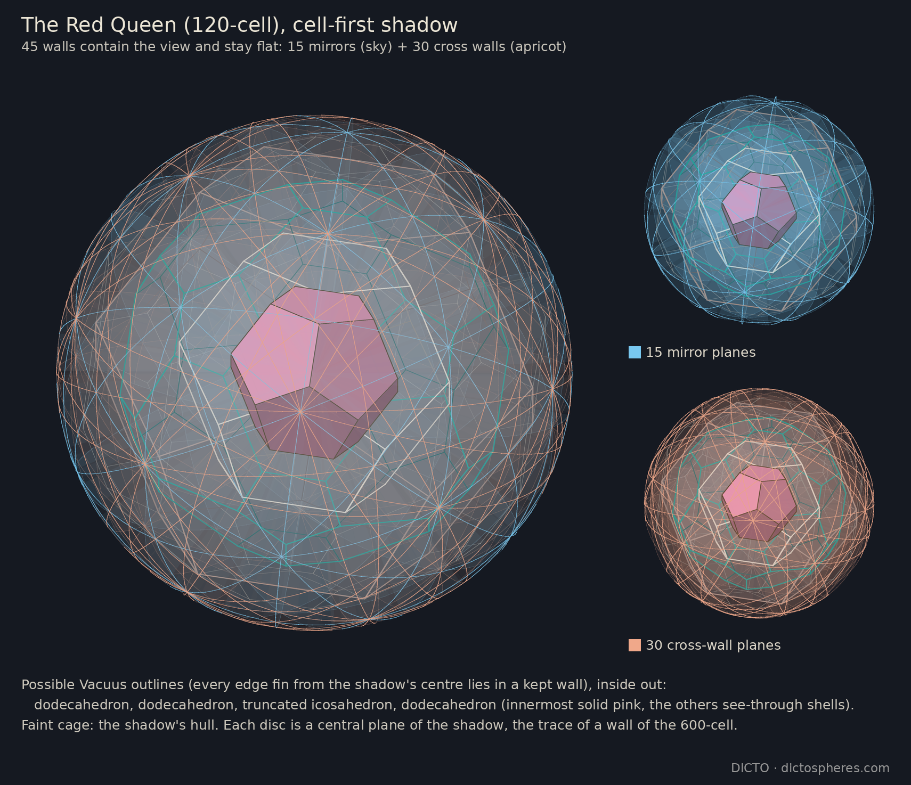
Figure 5.5. The Red Queen, cell-first shadow, with the same 45 walls (#110, Figure 9). Possible Vacuus, from the inside out: dodecahedra, a truncated icosahedron at height ±(1/8 + φ/4) and an outer dodecahedron. Its twin at ±(1/8 + φ/8) is not a possible Vacuus (30 of its 90 plates on walls). Colours are labels only.
* Mosseri–Sadoc tile t6, scaled by 1/φ (Mosseri and Sadoc, 1982). Rediscovered by DICTO as AXE. ** Mosseri–Sadoc tile t4, scaled by 1/φ (Mosseri and Sadoc, 1982). Rediscovered by DICTO as CLEO. *** Mosseri–Sadoc tile t3 (Mosseri and Sadoc, 1982). DICTO's name: Tricap. **** The icosahedron face pyramid (classical; Mackay, 1962). Rediscovered by DICTO as the Cleo-Icos.
Part III. The Queens
Chapter 6. The White Queen 600-cell
From paper #63, DICTO DOI 10.5281/zenodo.23690856
An exact atlas of the slices and shadows of the 600-cell
Abstract. The 600-cell is the four-dimensional solid built from 600 regular tetrahedra, twenty round every vertex. The aim is a definitive, proved picture of it. We give a complete exact atlas of its three-dimensional slices in its four main directions (through a vertex, the middle of an edge, the centre of a triangle and the centre of a cell). Every slice is computed exactly, in numbers of the form a + b√5 with a and b rational. Between two neighbouring vertex heights a slice keeps one pattern of faces, so the cuts at the vertex heights and one cut inside each gap give every slice pattern there is: 62 patterns on one side of the centre (9, 17, 21 and 15 in the four directions). Exactly twelve are made only of triangles, and we identify each one. The largest slices have 144 vertices. With the four shadows of the 600-cell, this completes the atlas. Each shadow resolves exactly into two halves, its front cells and its back cells, each filling it once; along the six turnings between the main views, the set of cells in front changes at only 14 moments. Round one vertex the 600 cells form 15 shells, each of one kind of piece, the innermost a core of 20 Cleo-Icos*. The slices as they are, convex and exact, with faces of many sizes, are the subject of this chapter. A short side note records what happens when a slice is forced to have equal edges: of six large all-triangle slices only one can be. That slice, a convex egg of 92 triangles, is the cell-first section at height 1 + √5/2** (Boole Stott, 1900); its forced equal-edged form, Fallen Humpty, has lost the egg's rounded shape.
1. Begin at the beginning
“Begin at the beginning,” the King said gravely, “and go on till you come to the end: then stop.” — Alice's Adventures in Wonderland, ch. 12
That is the plan of this chapter: start at the centre of the 600-cell and cut it, height by height, until the cut leaves it at the tip. The 600-cell can be assembled into a definitive picture, every part proved. Our previous paper (#62, Shadows of the Fourth Dimension) found which of its slices have only triangular faces, and which of those can be rebuilt with every edge equal; here we map every slice. The problem is old. Aristotle wrote that among solids the pyramid fills space (On the Heavens III.8); his commentators argued over how many tetrahedra meet round a point, twelve or twenty, and Thomas Bradwardine saw that the icosahedron cuts from its centre into twenty equal tetrahedra without deciding whether they are regular (Lagarias and Zong, 2012; our #44, Aristotle's Pyramid). They are not: they are the Cleo-Icos. Kepler nested the Platonic solids in shells (Mysterium Cosmographicum, 1596). In the 600-cell, found by Schläfli about 1852, twenty regular tetrahedra do close round every vertex, and §6 shows its 600 cells in shells round such a core. The title is DICTO's: the 600-cell belongs to the White Queen of Through the Looking-Glass, who practised believing impossible things (§7).
2. Method
The 600-cell is taken with its 120 vertices at distance 2 from the centre: the 8 permutations of (±2, 0, 0, 0), the 16 points (±1, ±1, ±1, ±1) and the 96 even permutations of (±φ, ±1, ±1/φ, 0), where φ = (1+√5)/2. Its edges have length √5 − 1. All arithmetic is exact in ℚ(√5). For each direction d, the height of a point x is x·d, and we sort the vertices by height. The slice at height h is the convex hull of the vertices at that height together with the points where edges of the 600-cell cross that height. Hulls are proposed in floating point, and every face is then verified exactly. The checks, run on every slice, are these. Repeated points are merged by exact comparison. For each proposed face, the plane through three of its corners is checked to support the slice: every point lies on it or strictly on one side, decided by the exact sign of a number in ℚ(√5). The face is then all the points on that plane, ordered by an exact two-dimensional hull, and turned to face outward by an exact sign. Finally every edge of the slice must lie in exactly two faces, and the counts must satisfy V − E + F = 2. A closed surface of supporting faces is the boundary of the hull, so a face missed in floating point would show as an edge in only one face.
Lemma (one pattern per gap). Let h₁ < h₂ be two neighbouring vertex heights. At every height strictly between them the slice has the same pattern of faces. Proof. An edge of the 600-cell crosses the cut at height h exactly when its two ends lie on opposite sides of h. No vertex has a height strictly between h₁ and h₂, so as h moves through the gap no vertex changes side, and the same edges cross the cut. Inside the gap each face of the slice is the cross-section of one tetrahedral cell, with its corners at the crossing points on that cell's edges, and two faces share an edge of the slice exactly when their cells share a triangle that is cut. Which cells and triangles are cut, and through which edges, is therefore the same throughout the gap, and so is the pattern of faces. Hence the cuts at the vertex heights and one cut inside each gap give every slice pattern. The lemma is about the pattern only: edge lengths and angles change with the height.
In each direction, d is the vertex, the edge midpoint, the triangle centre or the cell centre itself, not a unit vector: vertex-first d = (2, 0, 0, 0); edge-first d = ((5+√5)/4, 1/2, (√5−1)/4, 0), the midpoint of the edge from (2, 0, 0, 0) to (φ, 1, 1/φ, 0); face-first d = (1+√5/3, 2/3, 0, 0), the centre of the triangle with corners (2, 0, 0, 0), (φ, 1, 1/φ, 0) and (φ, 1, −1/φ, 0); cell-first d = ((7+3√5)/8, (3+√5)/8, 0, 1/4), the centre of the cell with corners (2, 0, 0, 0), (φ, 1, 1/φ, 0), (φ, 1, −1/φ, 0) and (φ, 1/φ, 0, 1). Each d is the average of the corners named. Since d is not a unit vector, heights compare within one direction only. The 600-cell is centrally symmetric, so the far half of each direction mirrors the near half; we list the near half, from the centre to the tip.
3. The atlas
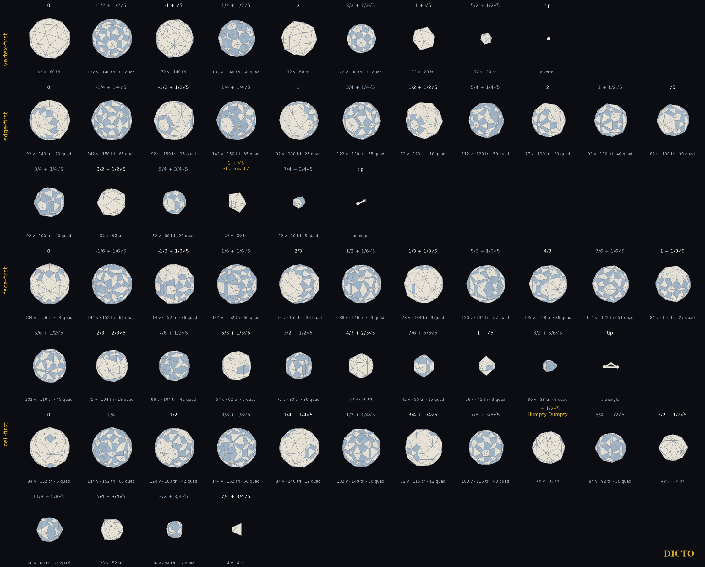
Figure 6.1. Every slice pattern of the 600-cell, from the centre to the tip, read left to right and row by row, in the four directions; one scale throughout. White labels: slices at a vertex height; blue labels: the pattern that holds over the whole gap to the next height. Triangles ivory, four-sided faces blue. Gold: Kagemusha (#62) and the 48-corner cell-first section (§7).
Direction
Vertex heights (centre to tip)
Gaps
Slice patterns
Tip
Largest slice
vertex-first
5
4
9
a vertex
132 vertices
edge-first
9
8
17
an edge
142 vertices
face-first
11
10
21
a triangle
144 vertices
cell-first
8
7
15
a tetrahedron
144 vertices
total
62
Every slice has only triangles and four-sided faces. Each face is the cross-section of one tetrahedral cell, a triangle or a four-sided face, or else a triangle of the 600-cell lying in the cut. A four-sided face appears exactly where the cut crosses a cell through four of its edges. The atlas, which cuts each gap at its middle height, has 1636 four-sided faces, and exactly 46 of them are squares, checked exactly. The squares are exactly the cuts through the middle of a cell, parallel to two opposite edges: each is the equator of the regular octahedron that joins the midpoints of that cell's six edges (edge (√5 − 1)/2 = 1/φ). Moved off the middle of the cell, such a cut is a rectangle. The 104 kites are explained in the same way: a kite appears exactly where a cell sits symmetrically across the cut, turned so that its four corners lie at four different heights, −p, −q, q and p from the cut. The half-turn of the cell that exchanges the corners at −p and p, and those at −q and q, reverses the heights and so maps the cut onto itself; on the four-sided face it fixes two opposite corners and exchanges the other two, a mirror along a diagonal (checked exactly: 104 kites, 104 such cells). The remaining faces are rectangles, isosceles trapezia and general quadrilaterals.
4. The twelve all-triangle slices
Theorem. Exactly twelve of the 62 slice patterns are made only of triangles: eleven at vertex heights and one inside a gap.
Direction
Height
Vertices, triangles
What it is
vertex-first
0 (centre)
42, 80
the central slice; equal-edged form: the 12-dented icosahedron (#62)
The other 50 slice patterns all contain four-sided faces. Of the twelve, the two regular icosahedra and the tetrahedron are the 600-cell's own vertex figure and cell; the other nine are the all-triangle patterns studied in #62.
5. The four shadows
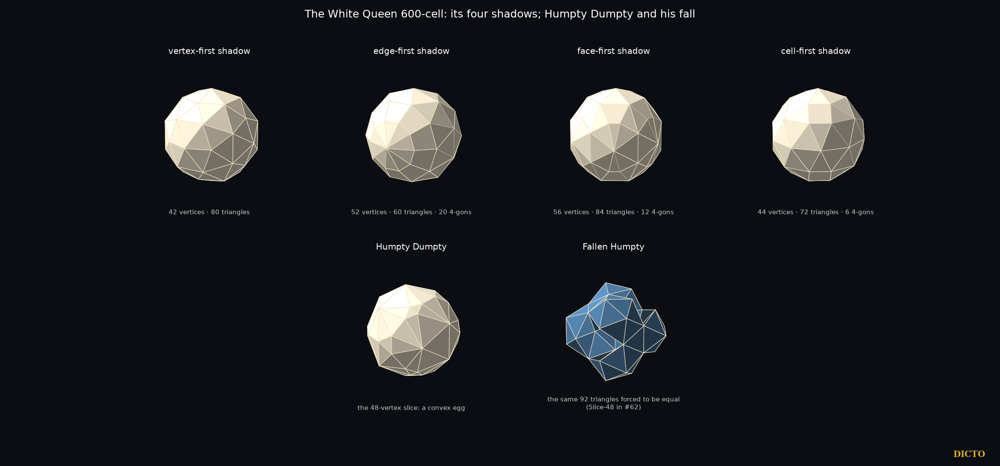
Figure 6.2. Top: the four shadows of the 600-cell. Bottom: the 48-vertex cell-first slice (Boole Stott, 1900), a convex egg with edges of several lengths; and Fallen Humpty, the same 92 triangles forced to be equal (§7).
The shadows are the projections of the 600-cell along the four directions, and all four are convex. The vertex-first shadow has 42 vertices and 80 triangles, the same pattern as the central slice (#62). The edge-first shadow has 52 vertices, 60 triangles and 20 four-sided faces; the face-first shadow 56 vertices, 84 triangles and 12 four-sided faces; the cell-first shadow 44 vertices, 72 triangles and 6 four-sided faces.
6. The shadows resolved, and the Cleo shells
Halves. In each main view, every cell of the 600-cell faces the viewer, faces away, or is seen side-on, decided exactly by the sign of (cell centre)·d. The front cells fill the shadow exactly once, without gaps or overlaps, and so do the back cells. Checked exactly: in each view the projected volumes of the front cells add up to the volume of the shadow, and so do those of the back cells. The side-on cells flatten into the shadow's surface. The front cells together are the shadow's front layer. Two front cells are of one kind when their projections have the same six edge lengths.
View
Front
Back
Side-on
Kinds of front piece
vertex-first
270
270
60
7
edge-first
290
290
20
22
face-first
288
288
24
33
cell-first
273
273
54
20
The six turnings. Any two of the four main views span a plane in which the view can turn from one to the other: six turnings in all. Along a turning the front layer changes only at a moment when a cell turns side-on. At such a moment cells change sides in opposite pairs, a cell coming forward as the cell opposite it goes back, so the number in front stays the same. Between two such moments the front layer keeps one pattern (the shadow's counterpart of the lemma of §2). Computed exactly in ℚ(√5), the six turnings (vertex–edge 18°, vertex–triangle 20.905°, vertex–cell 22.239°, edge–triangle 10.812°, edge–cell 13.283°, triangle–cell 7.761°) contain 14 such moments and 20 patterns between them; with the four main views, this accounts for every view along the turnings. Away from the moments the front layer holds 300 cells, or 298 or 294 where 4 or 12 cells stay side-on along the whole turning. One moment on the vertex–cell turning lies 15.52° from the vertex-first view, at the angle whose cosine is (1 + 3√5)/8: that is 180° minus the 600-cell's dihedral angle, 164.48°.
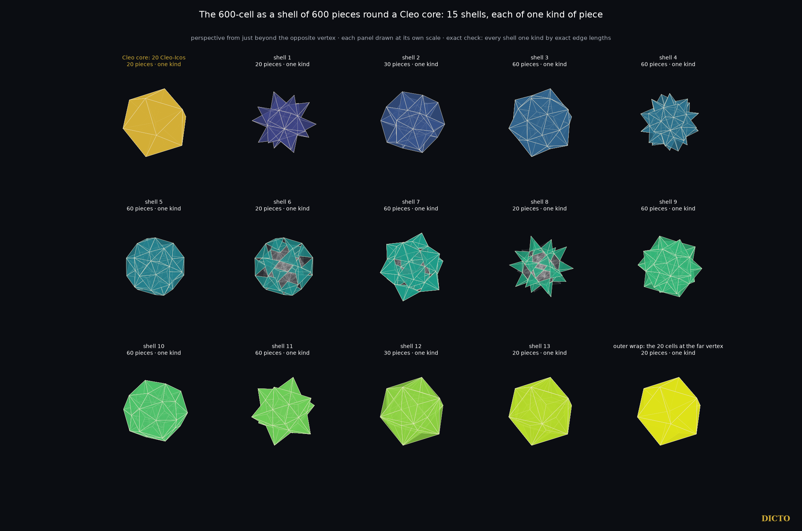
Figure 6.3. The 600-cell's 600 cells in 15 shells round one vertex, seen in perspective from just beyond the opposite vertex; each panel shows one shell solid and the shells inside it faint, at its own scale. Gold: the core of 20 Cleo-Icos.
The Cleo shells. Grouped by the height of their centres along one vertex, the 600 cells form 15 shells of 20, 20, 30, 60, 60, 60, 20, 60, 20, 60, 60, 60, 30, 20 and 20 cells. DICTO noticed that this list reads the same backwards. The angles from the vertex to the shells' cell centres mirror it too: 22.24°, 37.76°, 45°, 55.11°, 69.30°, 77.38°, 82.24°, 90°, then 97.76° and on to 157.76°, and each shell's angle and its mirror shell's angle add up to exactly 180°. Both follow from the 600-cell's symmetry through its centre, which carries shell k to shell 14 − k and the vertex to the opposite vertex. Seen in perspective from just beyond the opposite vertex (eye at height −21/10 when the vertex is at 2), the cells of each shell are all of one kind: they have the same six edge lengths, checked exactly. The core is the innermost shell, the 20 cells round the vertex. In this view their common corner is the centre, and their twelve other corners, the vertex's twelve neighbours, form a regular icosahedron about it (§4); so each core cell is the central pyramid of a regular icosahedron, the piece DICTO named the Cleo-Icos (#19). Mosseri and Sadoc flatten the 600-cell into ordinary space to describe icosahedral order in materials (§8); the icosahedron of 20 Cleo-Icos is the 600-cell's vertex cluster brought flat. In DICTO's words, the Cleo-Icos is the 600-cell's original tetrahedron as it must look in flat space: twenty of them fill the regular icosahedron exactly. The shells also explain the vertex-first shadow: its front layer is exactly the core and the next six shells (270 cells), its side-on cells are the middle shell (60), and its back layer is the other seven shells.
DICTO's radial cell projection. In the Polyhedraverse app, DICTO's radial cell projection (RCP) builds the 600-cell cell by cell, each new cell folded across a face of one already placed. It is his rediscovery of the classical reflection construction (Coxeter). The fold between neighbouring cells is the angle with cosine (1 + 3√5)/8, 15.52°: the same angle as the moment on the vertex–cell turning above. Counted in steps from one cell to a face-to-face neighbour, the 600 cells fall into 16 shells of 1, 4, 12, 24, 36, 52, 68, 76, 78, 72, 64, 56, 40, 12, 4 and 1 cells, checked here on the exact model (schlegel_shells.py). The 600-cell thus unfolds in three ways from one exact model: in DICTO's 16 steps from a cell, in 31 layers of height from a cell, and in the 15 Cleo shells round a vertex.
7. A side note: six impossible things, and Humpty Dumpty's fall
“Why, sometimes I've believed as many as six impossible things before breakfast.” — the White Queen, Through the Looking-Glass, ch. 5
Six of the all-triangle slices are large, with 28 to 72 vertices, and match none of the eight convex deltahedra: the slices with 72 (vertex-first), 32 (edge-first), 30 (face-first), and 48, 42 and 28 (cell-first) vertices. #62 tested each for whether its triangles can all be made equal while its full symmetry is kept. For five of them this is impossible. For the 48-vertex slice it is possible in exactly one way, and the result has a name.
“All the King's horses and all the King's men / Couldn't put Humpty Dumpty in his place again.” — Through the Looking-Glass, ch. 6
The real 48-vertex slice, at height 1 + √5/2 in the cell-first direction, is Boole Stott's section, the slice of Humpty Dumpty's fall: a convex, egg-like solid of 92 triangles, with edge lengths in ratios up to (5+√5)/2 ≈ 3.62 (Figure 6.2). Forced to have all 138 edges equal, it becomes Fallen Humpty (Slice-48 in #62): a non-convex solid that folds in and out, with dihedral angles from 81.75° to 243.20°, where the egg was smooth. As DICTO remarked, the rhyme describes the situation exactly: the equal triangles put him together again, but not in his place. What the 600-cell shows is the egg; Fallen Humpty is what our demand for equal triangles makes of it.
“When I use a word,” Humpty Dumpty said in rather a scornful tone, “it means just what I choose it to mean—neither more nor less.” — ch. 6
8. Prior art and credit
Alicia Boole Stott (1900; encouraged by P. H. Schoute) studied series of three-dimensional sections of the regular four-dimensional polytopes and made complete sets of models of the sections of the 600-cell and the 120-cell; two sets of 600-cell section models are kept at the University of Groningen, and a further set is at the Faulkes Institute, Cambridge. Coxeter's Regular Polytopes treats the polytopes and the vertex-first sections. We have now read her paper, "On certain series of sections of the regular four-dimensional hypersolids" (Verhandelingen der Koninklijke Akademie van Wetenschappen te Amsterdam, Eerste Sectie, 7, no. 3, 1900, with 5 plates). Her series for the 600-cell is cell-first: she cuts by spaces parallel to one bounding tetrahedron, starting with that tetrahedron and passing through the layers of vertices to the middle, after which "the other sections are now repeated in reverse order"; she finds each section by construction, draws it as a flat plan with its faces coloured by kind of tetrahedron (her diagrams I–VII), builds it as a model, and counts the 600 tetrahedra by colour across the series (her §17). This matches our eight cell-first cuts through layers of corners, from the tip to the centre. Her series has no cuts inside the gaps between layers and no vertex-, edge- or face-first series of the 600-cell, and she does not treat shadows. Her work is the precedent for this atlas, and its cell-first sections at the corner layers are hers. Mosseri and Sadoc flatten the 600-cell into ordinary space to describe icosahedral order in materials (C. R. Physique 15, 2014, doi:10.1016/j.crhy.2013.09.006); that its cells then become Cleo-Icos was noted in the Cleo-Icos reading study of 14 October 2026, made on DICTO's idea. Counts of cells by layer round a vertex of the 600-cell are a natural tabulation and may be known; we did not find them in the sources checked. We did not find in the sources checked: an exact atlas in all four directions including the gaps between vertex heights (Boole Stott's series is the cell-first one through the corner layers), the list of all-triangle slices, or the exact solid of the 48-corner section.
9. Conclusion
The 600-cell has 62 slice patterns between its centre and its tips in its four main directions (the far half mirrors the near half), all computed exactly here; exactly twelve are made only of triangles, and each is identified. With the four shadows this is a complete, proved atlas of the White Queen's solid, every slice shown as it really is. Its shadows resolve into exact halves, and its 600 cells stand in 15 shells round one vertex, each shell of one kind of piece, the innermost a core of 20 Cleo-Icos. Its most graceful slice is the 48-vertex egg, a section of Boole Stott's series. Forcing equal edges, the aim of #62, succeeds for that one large slice only, and its result, Fallen Humpty, is less graceful than the egg it came from.
Appendix. The 62 slice patterns
Every pattern on the near side, from the centre (height 0) to the tip, in each direction; heights are x·d with d as in §2, exact in ℚ(√5) (√5 written as a factor). A cut through a layer of corners is marked corners, a cut inside the gap between two layers gap (taken at the gap's midpoint; by the lemma every height in the gap gives the same pattern). V, E, F count the corners, edges and faces; faces are given as number × number of sides. The same table, with edge lengths and dihedral angles, is data/atlas600.json in the study attached to this record.
#
direction
cut
height
V
E
F
faces
all triangles
1
vertex-first
corners
0
42
120
80
80×3
yes
2
vertex-first
gap
-1/2+1/2√5
132
330
200
140×3, 60×4
3
vertex-first
corners
-1+√5
72
210
140
140×3
yes
4
vertex-first
gap
1/2+1/2√5
132
330
200
140×3, 60×4
5
vertex-first
corners
2
32
90
60
60×3
yes
6
vertex-first
gap
3/2+1/2√5
72
180
110
80×3, 30×4
7
vertex-first
corners
1+√5
12
30
20
20×3
yes
8
vertex-first
gap
5/2+1/2√5
12
30
20
20×3
yes
9
vertex-first
corners
4
tip: a point (the vertex)
10
edge-first
corners
0
92
250
160
140×3, 20×4
11
edge-first
gap
-1/4+1/4√5
142
355
215
150×3, 65×4
12
edge-first
corners
-1/2+1/2√5
92
255
165
150×3, 15×4
13
edge-first
gap
1/4+1/4√5
142
355
215
150×3, 65×4
14
edge-first
corners
1
92
245
155
130×3, 25×4
15
edge-first
gap
3/4+1/4√5
122
305
185
130×3, 55×4
16
edge-first
corners
1/2+1/2√5
72
200
130
120×3, 10×4
17
edge-first
gap
5/4+1/4√5
112
280
170
120×3, 50×4
18
edge-first
corners
2
77
205
130
110×3, 20×4
19
edge-first
gap
1+1/2√5
92
230
140
100×3, 40×4
20
edge-first
corners
√5
82
210
130
100×3, 30×4
21
edge-first
gap
3/4+3/4√5
92
230
140
100×3, 40×4
22
edge-first
corners
3/2+1/2√5
32
90
60
60×3
yes
23
edge-first
gap
5/4+3/4√5
52
130
80
60×3, 20×4
24
edge-first
corners
1+√5
17
45
30
30×3
yes
25
edge-first
gap
7/4+3/4√5
22
55
35
30×3, 5×4
26
edge-first
corners
5/2+1/2√5
tip: a segment (the edge)
27
face-first
corners
0
104
282
180
156×3, 24×4
28
face-first
gap
-1/6+1/6√5
144
360
218
152×3, 66×4
29
face-first
corners
-1/3+1/3√5
114
300
188
152×3, 36×4
30
face-first
gap
1/6+1/6√5
144
360
218
152×3, 66×4
31
face-first
corners
2/3
114
300
188
152×3, 36×4
32
face-first
gap
1/2+1/6√5
138
345
209
146×3, 63×4
33
face-first
corners
1/3+1/3√5
78
219
143
134×3, 9×4
34
face-first
gap
5/6+1/6√5
126
315
191
134×3, 57×4
35
face-first
corners
4/3
105
270
167
128×3, 39×4
36
face-first
gap
7/6+1/6√5
114
285
173
122×3, 51×4
37
face-first
corners
1+1/3√5
84
219
137
110×3, 27×4
38
face-first
gap
5/6+1/2√5
102
255
155
110×3, 45×4
39
face-first
corners
2/3+2/3√5
72
192
122
104×3, 18×4
40
face-first
gap
7/6+1/2√5
96
240
146
104×3, 42×4
41
face-first
corners
5/3+1/3√5
54
150
98
92×3, 6×4
42
face-first
gap
3/2+1/2√5
72
180
110
80×3, 30×4
43
face-first
corners
4/3+2/3√5
30
84
56
56×3
yes
44
face-first
gap
7/6+5/6√5
42
105
65
50×3, 15×4
45
face-first
corners
1+√5
26
69
45
42×3, 3×4
46
face-first
gap
3/2+5/6√5
30
75
47
38×3, 9×4
47
face-first
corners
2+2/3√5
tip: a triangle
48
cell-first
corners
0
84
240
158
152×3, 6×4
49
cell-first
gap
1/4
144
360
218
152×3, 66×4
50
cell-first
corners
1/2
124
324
202
160×3, 42×4
51
cell-first
gap
3/8+1/8√5
144
360
218
152×3, 66×4
52
cell-first
corners
1/4+1/4√5
84
234
152
140×3, 12×4
53
cell-first
gap
1/2+1/4√5
132
330
200
140×3, 60×4
54
cell-first
corners
3/4+1/4√5
72
198
128
116×3, 12×4
55
cell-first
gap
7/8+3/8√5
108
270
164
116×3, 48×4
56
cell-first
corners
1+1/2√5
48
138
92
92×3
yes
57
cell-first
gap
5/4+1/2√5
84
210
128
92×3, 36×4
58
cell-first
corners
3/2+1/2√5
42
120
80
80×3
yes
59
cell-first
gap
11/8+5/8√5
60
150
92
68×3, 24×4
60
cell-first
corners
5/4+3/4√5
28
78
52
52×3
yes
61
cell-first
gap
3/2+3/4√5
36
90
56
44×3, 12×4
62
cell-first
corners
7/4+3/4√5
4
6
4
4×3
yes
* The icosahedron face pyramid (classical; Mackay, 1962). Rediscovered by DICTO as the Cleo-Icos. ** Rediscovered by DICTO as Humpty Dumpty.
Chapter 7. Between the Queens
From paper #76, DICTO DOI 10.5281/zenodo.23780068
The five stages from the 600-cell to the 120-cell, built from the White Queen, with their slices and shadows
Abstract. In #63 the White Queen is the 600-cell, and in #65 the Red Queen, the 120-cell, is her dual. The four-dimensional icosahedron with hexagons, and the stages that lead from one queen to the other, are DICTO's ideas. Cut the White Queen's corners, deeper and deeper, and she passes through five uniform four-dimensional solids before she becomes the Red Queen: the truncated and rectified 600-cell, the bitruncated 600-cell (the midpoint, whose cells are 120 truncated icosahedra and 600 truncated tetrahedra), and the rectified and truncated 120-cell. All seven are classical: Alicia Boole Stott was the first to list the semiregular four-dimensional solids, in 1910, and they are Wythoff's and Coxeter's uniform polytopes. We build each stage from the White Queen's own corners, edges, triangles and cells, prove the cut positions that make every edge equal (1/3, 1/2, 3/5, the triangle centre and (5 − √5)/10), and give the complete atlas of their slices and shadows in the queens' four directions: 1402 slices from the centre to the tips, and 20 shadows. Main theorem: the numbers of slices and the shadows of Table 2, with both ends equal to the exact atlases of #63 and #65; and in every direction the shadows of the truncated and the rectified 600-cell have the same number of faces, and so do those of the rectified and the truncated 120-cell. The stages are in the app: a slider in the White Queen world runs from White to Red.
1. From White to Red
The White Queen and the Red Queen are polar partners. Between them lies a path of solids, each made by cutting her corners a little deeper.
In ordinary space the icosahedron becomes the dodecahedron in the same way. Cut its twelve corners a third of the way along each edge and it becomes the truncated icosahedron: 12 pentagons and 20 hexagons. Cut to the middle of each edge and it is the icosidodecahedron; cut further and it becomes the truncated dodecahedron, and at last the dodecahedron. Take the four-dimensional version: an icosahedron with hexagons, in the fourth dimension. It is the midpoint of the same path one dimension up, from the White Queen to the Red Queen.
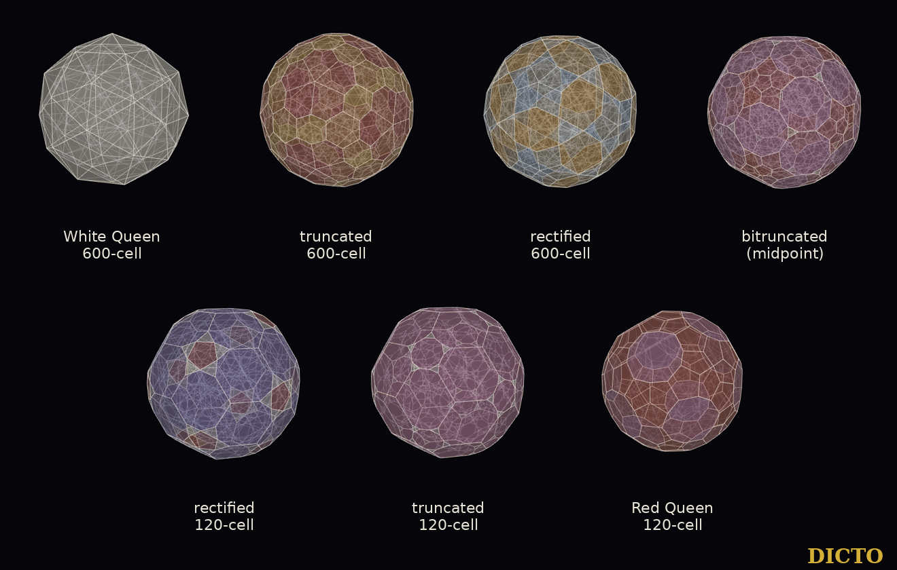
Figure 7.1. The seven solids from the White Queen to the Red Queen, each seen as its shadow along one corner of the White Queen (vertex first), drawn in the app (Kaleidohedra, White Queen world, Shadow, the stage slider). Faces of the shadow's outline: triangles ivory, four-sided faces blue, five-sided red, six-sided gold, more sides in further colours.
2. The five stages, built from the White Queen
Each stage is a set of points chosen on the White Queen's own edges, triangles or cells; nothing else is needed.
We take the White Queen of #63: 120 corners, 720 edges of length e, 1200 triangles, 600 tetrahedra. Her polar partner's corners are the centres of her cells, and two of them are joined when the two cells share a triangle (#65): 1200 Red Queen edges of length f.
Stage
Corners built from the White Queen
Corners
Edges
Cells
White Queen, 600-cell
her corners
120
720
600 tetrahedra
truncated 600-cell
on each edge, 1/3 of the way from each end
1440
4320
120 icosahedra, 600 truncated tetrahedra
rectified 600-cell
the middle of each edge
720
3600
120 icosahedra, 600 octahedra
bitruncated 600-cell
on each triangle, 3/5 of the way from the middle of each of its edges to its centre
on each Red Queen edge, (5 − √5)/10 of the way from each end
2400
4800
120 truncated dodecahedra, 600 tetrahedra
Red Queen, 120-cell
the centres of her cells
600
1200
120 dodecahedra
Table 1. The seven solids. The counts are the classical ones; we checked them on our models, together with the cells (each cell is the set of corners highest along one of the White Queen's 120 corner directions or 600 cell directions).
Proposition 1 (the cuts). With the corners of Table 1, every edge of each stage has one length exactly when the cuts are at 1/3 (truncated 600-cell), 3/5 (bitruncated) and (5 − √5)/10 (truncated 120-cell); the rectified stages need no choice.
Proof.Truncated 600-cell. Its edges are of two kinds: round each White Queen corner, between the points on two of her edges at that corner, length s·e (two edges at a corner meet at 60°); and along each of her edges, between its two points, length (1 − 2s)·e. They are equal exactly when s = 1/3. Bitruncated. In a triangle abc let mab be the middle of ab and g the centre; the corner on ab is q = (1 − l)·mab + l·g. Within the triangle, qab to qac has length (1 − l)·|mab − mac| = (1 − l)·e/2. Between the triangles abc and abd of one tetrahedron, the two corners on ab are l·|gabc − gabd| = l·|c − d|/3 = l·e/3 apart. Equal exactly when (1 − l)/2 = l/3, that is l = 3/5. Truncated 120-cell. Along a Red Queen edge the two corners are (1 − 2t)·f apart; round a Red Queen corner P, the corners on the edges PQ and PR are t·|Q − R| apart, and Q and R, two neighbours of P on one pentagon, are a pentagon diagonal φ·f apart. Equal exactly when t·φ = 1 − 2t, that is t = 1/(φ + 2) = (5 − √5)/10. Rectified stages. Middles of edges, and centres of triangles, are joined only to their nearest neighbours, all at one distance (e/2 and e/3). ∎
The cuts were also found numerically, independently, by asking that every corner's nearest neighbours be equally far; the values agree to 10−14 (study cuts.py). In the app the stages are built the same way, from the White Queen's model, and checked: corners and edges as in Table 1, all corners on one sphere, all edges of one length.
3. Main theorem: the atlas
A four-dimensional solid can be seen by its shadows and by its slices. We give both, for every stage, in the four directions the queens were mapped in.
The four main directions are those of #63: along a White Queen corner (vertex first), the middle of an edge (edge first), the centre of a triangle (face first) and the centre of a cell (cell first). In each, the slices are cut at every height where a corner lies and halfway between neighbouring heights, from the centre to the tip; between two neighbouring heights the slice keeps one pattern (#63, Lemma), so this list is complete. All seven solids have a centre of symmetry, so the other half repeats this one.
Theorem. (1) In the four main directions the five stages have the numbers of slices, the numbers of different slice patterns and the shadows of Table 2: 288, 138, 478, 180 and 318 slices from the centre to the tips, 1402 in all. (2) At the two ends the same count gives the exact atlases: the White Queen's 62 slices and 4 shadows (#63) and the Red Queen's 124 slices and 4 shadows (#65). (3) In every direction the shadows of the truncated and the rectified 600-cell have the same number of faces (110, 232, 272, 194), and so do the shadows of the rectified and the truncated 120-cell (102, 252, 296, 242).
Solid
Slices v · e · f · c
All
Patterns v · e · f · c
Shadows, corners/faces: v · e · f · c
White Queen
9 · 17 · 21 · 15
62
7 · 15 · 19 · 14
42/80 · 52/80 · 56/96 · 44/78
truncated 600-cell
29 · 85 · 103 · 71
288
21 · 77 · 98 · 62
192/110 · 280/232 · 312/272 · 240/194
rectified 600-cell
17 · 39 · 49 · 33
138
16 · 35 · 49 · 33
132/110 · 150/232 · 168/272 · 144/194
bitruncated
43 · 135 · 175 · 125
478
23 · 110 · 151 · 97
240/122 · 580/312 · 636/368 · 504/266
rectified 120-cell
21 · 49 · 65 · 45
180
14 · 46 · 60 · 41
140/102 · 260/252 · 282/296 · 240/242
truncated 120-cell
33 · 87 · 117 · 81
318
12 · 69 · 96 · 62
200/102 · 500/252 · 564/296 · 480/242
Red Queen
15 · 33 · 45 · 31
124
8 · 29 · 40 · 24
80/42 · 160/92 · 180/104 · 158/84
Table 2. The atlas. v, e, f, c: the White Queen's vertex-first, edge-first, face-first and cell-first directions (for the Red Queen these are her cell, pentagon, edge and corner directions, in that order). A pattern is a slice's corners, edges, faces and faces by sides; two slices of one direction with the same counts are one pattern. Every three-dimensional slice and every shadow satisfies Euler's formula V − E + F = 2.
Proof and checks. Each slice is the convex hull of the solid's corners at that height and the points where its edges cross it, found in the three-dimensional space of the cut; faces are the coplanar parts of the hull, each counted by its true corners. The computation is in double precision with a tolerance of 10−9; it is checked at both ends against the exact atlases in ℚ(√5) of #63 and #65 (the numbers of slices in all four directions, 62 and 124, and the corners and faces of all 8 shadows agree), and by Euler's formula on every three-dimensional slice and every shadow. The shadows were computed a second time by the app's own hull code: the two agree on all 23 shadows the study gives; in the cell-first direction the study's merging of coplanar faces failed Euler's check for the five stages, and those five shadows are the app's, each checked by Euler's formula. Part (3) is read off the table. ∎
All triangles. The White Queen has twelve slices made only of triangles (#63; here 5, 2, 1 and 4 in the four directions). Of the stages, only the truncated 600-cell (3, vertex first), the rectified 600-cell (1 vertex first, 1 cell first), the rectified 120-cell (1, cell first) and the truncated 120-cell (3, cell first) have any; the bitruncated midpoint has none. The last slice at the tip is a single corner, an edge, a polygon or a whole cell, depending on the solid and the direction (study data).
4. The midpoint
Halfway from White to Red the solid is its own partner: cut from either queen, the same shape appears.
The bitruncated 600-cell is also the bitruncated 120-cell: cutting the Red Queen's corners as deeply from her side reaches the same solid, which is why it stands at the middle of the path. Its 120 truncated icosahedra are the icosahedra with hexagons of Section 1; its 600 truncated tetrahedra fill the places of the White Queen's cells. Its shadows are the richest in Table 2, up to 636 corners; its slices number 478, a third of all the slices of the five stages.
See also paper #104, Scutoid Tissues in Four Dimensions (DICTO DOI 10.5281/zenodo.24111864), Theorem 4, the balance law (proved): when the cells of a simple 4-polytope are of two kinds, two of each at every corner, the swaps of a generic sweep that exchange a contact of one kind for a contact of the other are equally many in the two directions; for this midpoint, with the 600 truncated tetrahedra as one kind and the 120 truncated icosahedra as the other, 601 each way and 964 mixed. The law is stated for that condition only. Chapter 10 retells the Mirror Law of #107, by which the hexagons where the two kinds meet lie on no mirror.
5. What is new and what is known
Known, credited: the seven solids, their counts and their cells (Boole Stott 1910, who first listed all the semiregular four-dimensional solids; Wythoff's construction; Coxeter's uniform polytopes); the 600-cell's and 120-cell's slices along the cell direction (Boole Stott 1900); the exact atlases of the two queens (#63, #65).
New here, as far as the sources checked show: the five stages built from the White Queen's own elements with these cut positions and their short proofs (Proposition 1); the complete slice and shadow atlas of the five stages in the queens' four directions (Theorem 1, Table 2); the equal face counts of the paired shadows (Theorem 3); the stage slider in the app. We found no published atlas of the slices of these five solids; programs that draw slices of any uniform polytope exist, and their output is not a tabulated, checked atlas.
Next: an exact version of the atlas in ℚ(√5), as #63 and #65; a proof of part (3) from the solids' symmetry.
6. In the app
Kaleidohedra and Rhombiverse, the White Queen world, Shadow view: the slider "From White to Red" runs from the White Queen through the five stages to the Red Queen, in all four directions and the turnings between them; the caption gives each stage's corners and cells and its shadow's corners and faces. The link https://kaleidohedra.dictospheres.com/?open=whitequeen:t12 opens the midpoint.
DICTO's idea: the four-dimensional icosahedron with hexagons, and the stages between the queens; the names White Queen and Red Queen are his. Licence CC BY-SA 4.0.
Chapter 8. The Red Queen 120-cell
From paper #65, DICTO DOI 10.5281/zenodo.23716140
Aristotle's five pyramids as the cores of the regular four-dimensional solids
Abstract. Aristotle wrote that among solids the pyramid fills space, and the pyramids cut from the centres of the five Platonic solids have been argued over ever since. We prove that all five of these pyramids are the cores of the regular four-dimensional solids, seen in perspective: the tetrahedron, octahedron and icosahedron pyramids are the shadows of the cells round one corner of the 5-cell, the 16-cell and the 600-cell, and the cube, octahedron and dodecahedron pyramids are the shadows of the sides of the four-dimensional pyramid over one cell of the tesseract, the 24-cell and the 120-cell. Each shadow has exactly the proportions of Aristotle's pyramid, and the five come in polar pairs. The 120-cell, polar of the White Queen 600-cell of #63 and named the Red Queen by DICTO, is the White Queen's dual: its 600 corners are her 600 cell centres, its edges join cells that share a triangle, its 720 pentagons ring her 720 edges and its 120 dodecahedra ring her 120 corners; its corners stand in her fifteen Cleo shells, its 120 dodecahedra in nine layers round one, and its core is the dodecahedron cut into twelve pentagonal pyramids where hers is the icosahedron cut into twenty Cleo-Icos*. No convex regular solid has dodecahedra round a corner, but the star polytope {5/2,5,3} does: its twelve golden spikes at a corner cast exactly Aristotle's dodecahedron pyramids. Her full atlas is exact: 124 slice patterns in the four main directions, passing cell-first through the Archimedean solids of the icosahedral family, and four shadows, each filled exactly once by its front cells and once by its back cells, each the polar of the White Queen's middle slice.
1. From the White Queen to the Red Queen
In #63, the White Queen 600-cell, 600 regular tetrahedra stand round 120 corners, and round one corner they fall into fifteen shells whose core is twenty Cleo-Icos filling a regular icosahedron (#19, #44). Take her polar swap: every corner of one solid becomes a cell of the other. The polar of the 600-cell is the 120-cell, 120 regular dodecahedra round 600 corners. DICTO named it the Red Queen, after the other queen of Through the Looking-Glass. The dodecahedral pyramid, the one of Aristotle's five pyramids the White Queen lacks, should sit at the Red Queen's core, and all five pyramids should be four-dimensional shadows. They are.
2. The Red Queen, the White Queen's dual
We build the 120-cell from the exact model of #63, in ℚ(√5). Its corners are the centres of the White Queen's 600 cells; two corners are joined when their cells share a triangle (1200 edges); the five cells round each White Queen edge give a pentagon (720 pentagons); the twenty cells round each White Queen corner give a cell (120 cells). Checked exactly: all corners on one sphere, all edges equal, four edges at every corner, every pentagon regular and shared by exactly two cells, every cell a regular dodecahedron (13 of 13 checks).
Figure 8.1. The Red Queen: 120 dodecahedra in nine layers round one (1, 12, 20, 12, 30, 12, 20, 12, 1), seen in perspective from just beyond the opposite cell, each layer one kind of piece; last panel: the gold core cut from its centre into its twelve pentagonal pyramids.
Layers and core. Round one dodecahedron the 120 cells stand in nine layers of 1, 12, 20, 12, 30, 12, 20, 12 and 1, each one kind of piece in the perspective view, and the 600 corners in fifteen layers of 20, 20, 30, 60, 60, 60, 20, 60, 20, 60, 60, 60, 30, 20 and 20: exactly the Cleo shells of the White Queen, since her cell centres are the Red Queen's corners. Both lists are palindromes, the same forwards and backwards, as the White Queen's shells are (#63): the Red Queen is centrally symmetric, so the layers counted from one cell match, in reverse, the layers counted from the opposite cell. The two cores exchange one for one: each of the White Queen's twenty Cleo-Icos becomes one of the twenty corners of the Red Queen's central dodecahedron, and each of the twelve corners of the White Queen's icosahedron becomes one of its twelve pentagons. The White Queen's twenty Cleo-Icos are real cells, the shadows of the twenty tetrahedra at her corner. The Red Queen's core is one whole cell; its twelve pentagonal pyramids, Aristotle's dodecahedron pyramid, appear when she is divided from her centre into 120 four-dimensional pyramids, one over each cell: the twelve sides of the central one cast them exactly (§3). In the star Red Queen (§5) they are parts of real cells again. The 15 planes that cut the sectors round a corner (Plates 14 and 35) are mirrors of both Queens, so the sectors are true symmetric pieces.
Ten White Queens inside. The Red Queen also carries White Queens on her own corners. Exactly ten 600-cells are inscribed in her, and every corner lies in exactly two. They are taken five at a time in two ways: each of two states is five disjoint 600-cells that together use all 600 corners once, the two 600-cells through a corner belong to different states, and two from different states meet in exactly 24 corners, a 24-cell (the compound of ten 600-cells is Coxeter's; the states, the counts and the meetings are #110, Theorem B, DICTO DOI 10.5281/zenodo.24272477). They use her corners but not her edges: the edges of an inscribed 600-cell are diagonals of the Red Queen, so none of them makes her pentagons. She is the White Queen's dual, not a union of White Queens; Chapter 10 follows the ones inside her.
How it closes. Three regular dodecahedra round an edge fill 3 × 116.57° = 349.7° and leave a gap of 10.3°, so dodecahedra cannot close round an edge in ordinary space; five regular tetrahedra leave 7.36°. As three pentagons round a corner close only by folding up into the dodecahedron, these gaps close by bending into the fourth dimension, and the Red Queen closes with three dodecahedra round every edge. In the perspective view the pieces close with no gaps and no overlaps, slightly bent, and the last dodecahedron becomes the outside, as the last pentagon of a flattened dodecahedron becomes its outer rim.
3. Main theorem: Aristotle's five pyramids
Theorem. In perspective from just beyond the far side, along a corner or along a cell centre:
(1) Corner cores. The cells at one corner of the 5-cell, the 16-cell and the 600-cell cast the face pyramids of the regular tetrahedron (4), octahedron (8) and icosahedron (20, the Cleo-Icos), apex at the centre.
(2) Cell cores. The sides of the four-dimensional pyramid from the solid's centre over one cell cast the face pyramids of that cell: tetrahedron (5-cell, 16-cell, 600-cell), cube (tesseract, 6), octahedron (24-cell, 8) and dodecahedron (120-cell, 12).
(3) Exact proportions. In every case the shadow is exactly Aristotle's face pyramid of that Platonic solid: its side edge² over its base edge² is 3/8, 1/2, 3/4, (5 + √5)/8 and (9 + 3√5)/8 for the tetrahedron, octahedron, cube, icosahedron and dodecahedron.
(4) Polar pairs. 16-cell (8 octahedron pyramids) ↔ tesseract (6 cube pyramids); 600-cell (20 Cleo-Icos) ↔ 120-cell (12 pentagonal pyramids); the 5-cell and the 24-cell are their own polars.
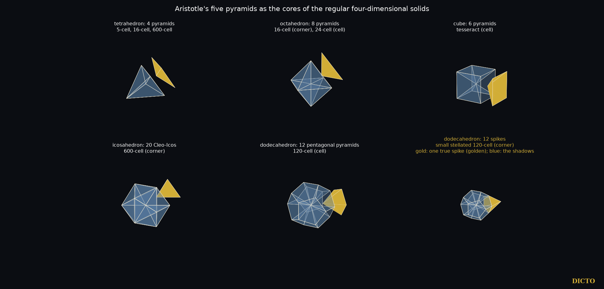
Figure 8.2. Aristotle's five pyramids as the cores of the regular four-dimensional solids, one pyramid of each drawn out in gold. Last panel: the star 120-cell (§5), one true spike in gold, its shadows in blue.
Proof. The six solids are built exactly (the 5-cell in the hyperplane of five coordinates summing to zero; the 16-cell, tesseract and 24-cell from their standard coordinates; the 600-cell and 120-cell as in §2). For each we take the eye on the axis just beyond the far side and project. On the axis the corner, or the cell centre and the solid's centre, fall on the centre of the picture, so every piece through it becomes a pyramid with its apex there; we check exactly that the far ends of these pieces form a regular solid centred on the picture's centre, count its faces, and compare side edge² over base edge² with Aristotle's pyramid. All ten cases agree exactly (10 of 10).
4. True pieces and their shadows
DICTO pointed out that the pyramids in four dimensions may have different proportions from their shadows. They do. The corner cores are regular tetrahedra in four dimensions, side edge equal to base edge, but their shadows are the flatter face pyramids. The sides of a cell core run from the solid's centre to its corners, so in four dimensions their side edge² over base edge² is the solid's radius² over edge²: 2/5 (5-cell), 1/2 (16-cell), 1 (tesseract and 24-cell), (3 + √5)/2 (600-cell) and 7 + 3√5 (120-cell), while their shadows are again Aristotle's. The four-dimensional solids carry tall pieces; their shadows, in our space, are Aristotle's five pyramids.
5. The star core
No convex regular four-dimensional solid has dodecahedra round a corner: that would be {3,5,3}, which never closes and is the infinite icosahedral honeycomb of hyperbolic space. The star polytope {5/2,5,3}, the small stellated 120-cell of Hess, does. It stands on the White Queen's 120 corners, with 1200 edges joining corners one radius apart, 720 pentagrams and 120 small stellated dodecahedra, and round every corner a regular dodecahedron of twelve cells. Each of these twelve cells meets the corner with one spike, a pentagonal pyramid whose side edge is exactly φ times its base edge. In perspective the twelve spikes cast exactly the dodecahedron cut into Aristotle's twelve pentagonal pyramids (checked exactly, side edge² over base edge² = (9 + 3√5)/8). So the dodecahedral pyramids that no convex solid can hold at a corner sit at the corner of the star Red Queen: golden in four dimensions, Aristotle's in their shadow.
6. The Red Queen's atlas
As for the White Queen in #63, we cut the Red Queen in her four main directions, through a corner, an edge, a pentagon and a cell, from the centre to the tip, at every corner height and once inside every gap, exactly in ℚ(√5). The one-pattern-per-gap lemma of #63 holds here too (cuts at ¼, ½ and ¾ of every gap cross the same edges), so this list is complete. Her corners are the centres of the White Queen's cells in the coordinates of #63 (corner radius² 7/4 + 3√5/4, edge 1/2). The four directions d are the average of the corners of one element: corner-first d = ((7+3√5)/8, (3+√5)/8, 0, 1/4), a corner; edge-first d = ((7+3√5)/8, (3+√5)/8, 0, 0), the midpoint of an edge; pentagon-first d = ((7+3√5)/8, (5+2√5)/20, (5+3√5)/40, 0), the centre of a pentagon; cell-first d = ((7+3√5)/8, 0, 0, 0), the centre of a cell. They are exactly parallel to the White Queen's cell-, triangle-, edge- and vertex-first directions. Every slice is checked exactly as in #63: repeated points merged by exact comparison, every face plane tested to support the slice by an exact sign in ℚ(√5), every face ordered by an exact two-dimensional hull and turned outward, every edge in exactly two faces, and V − E + F = 2. The atlas adds 17 checks of its own, all passed: among them that each gap gives the same faces when cut at ¼, ½ and ¾ of its height, that inside a gap each slice face is the cross-section of exactly one dodecahedron, that every cut point is a corner of its slice, that each shadow is tiled exactly once by its front cells and once by its back cells (exact volume), and that the polar pairings with the White Queen hold.
Atlas. The Red Queen has 124 slice patterns: 31 corner-first (faces of 3 to 8 sides, largest 108 vertices), 45 edge-first (3 to 9, the only nine-sided faces, largest 114), 33 pentagon-first (3 to 8 and 10, largest 120 vertices and 62 faces) and 15 cell-first (faces of 3, 4, 5, 6, 8 and 10 sides, largest 120 vertices).
Cell-first she passes through the Archimedean solids of the icosahedral family, each exact: the rhombicosidodecahedron, the truncated icosahedron and the truncated dodecahedron (each at one height inside its gap), the icosidodecahedron, and regular dodecahedra (edge φ times the cell's) up to the tip, where the slice is the cell itself; these dodecahedra are her only all-pentagon slices. The other directions begin with a regular tetrahedron (corner-first), a regular triangular prism (edge-first) and a regular pentagonal prism (pentagon-first), and regular decagons appear in the pentagon-first middle slice and in one cell-first gap.
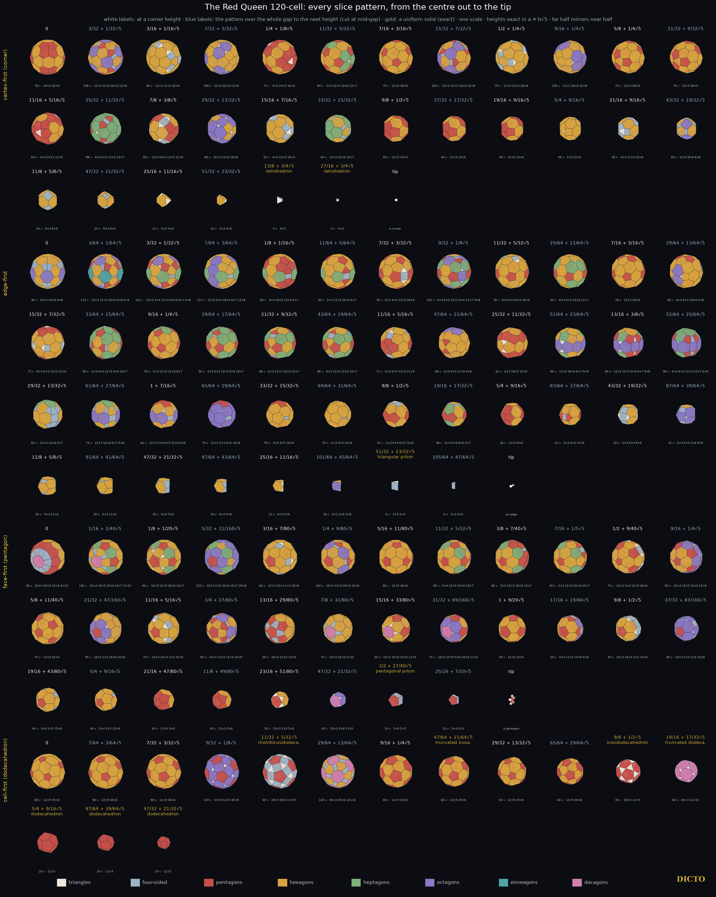
Figure 8.3. The Red Queen's atlas: her slice patterns in the four main directions, from the centre to the tip.
Shadows. Her four shadows are
Direction
Vertices · edges · faces
Faces
Front · back · side-on cells
corner-first
158 · 240 · 84
72 pentagons, 12 decagons
54 · 54 · 12
edge-first
180 · 282 · 104
96 pentagons, 6 decagons, 2 twelve-sided
56 · 56 · 8
pentagon-first
160 · 250 · 92
80 pentagons, 10 octagons, 2 regular decagons
54 · 54 · 12
cell-first
80 · 120 · 42
12 pentagons, 30 hexagons
45 · 45 · 30
Every face that is not a pentagon is a side-on cell seen flat. As in the White Queen, each shadow resolves into two exact halves: the front cells fill it exactly once and so do the back cells (exact volume). And the two queens' atlases mirror each other by polarity: each of the Red Queen's shadows is the polar of the White Queen's middle slice in the same direction, and each of her middle slices is the polar of the White Queen's shadow.
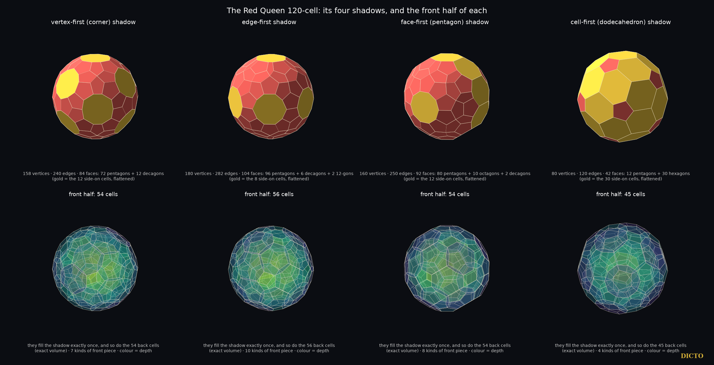
Figure 8.4. The Red Queen's four shadows (gold: side-on cells, seen flat) and the front half of each, which fills its shadow exactly once.
7. Prior art and credit
The 120-cell and 600-cell are Schläfli's (about 1852, published 1901); their coordinates, polarity and the star polytopes {5/2,5,3} and the others are in Coxeter's Regular Polytopes, the star polytopes first found by Schläfli and Hess (1883). Alicia Boole Stott, in "On certain series of sections of the regular four-dimensional hypersolids" (Verhandelingen der Koninklijke Akademie van Wetenschappen te Amsterdam, Eerste Sectie, 7, no. 3, 1900), cut the 120-cell cell-first, parallel to one bounding dodecahedron, through the layers of corners to the middle, and drew each section as a flat plan with coloured faces (her diagrams VIII–XIV); we read her paper for this version. Her series matches our eight cell-first cuts through corner layers, from the cell to the centre, among them the rhombicosidodecahedron and the icosidodecahedron, which are hers. The truncated icosahedron and the truncated dodecahedron lie inside gaps between corner layers, which her series does not cut, and she has no corner-, edge- or pentagon-first series and no shadows. The layers 1, 12, 20, 12, 30, … of the 120-cell's cells round one cell are known, for example in Schleimer and Segerman's Puzzling the 120-cell. Aristotle's claim and the long dispute over how many pyramids meet round a point are traced by Lagarias and Zong (2012); the face pyramids of the Platonic solids and which of them fill space are #44, Aristotle's Pyramid, and the Cleo-Icos is #19. We found no earlier statement that Aristotle's five pyramids are exactly the perspective cores of the regular four-dimensional solids, nor of the star core of {5/2,5,3}.
8. Conclusion
Aristotle's five pyramids are the shadows of the four-dimensional regular solids' cores: three as the cells round a corner, three as the sides of the pyramid over a cell, each with exactly Aristotle's proportions, paired by polarity. The Red Queen, the White Queen's dual, holds the dodecahedral one at her core and ten White Queens on her corners, and the star Red Queen holds it at every corner, golden in four dimensions. Her atlas of 124 slices and four shadows mirrors the White Queen's by polarity, shadow for middle slice.
Appendix. The 124 slice patterns
Every pattern from the centre (height 0) to the tip, in each direction; heights are x·d with d as in §6, exact in ℚ(√5) (√5 written as a factor). corners marks a cut through a layer of corners, gap a cut inside the gap between two layers (by the one-pattern-per-gap lemma every height in the gap gives the same pattern). V, E, F count corners, edges and faces; faces are given as number × number of sides; the last column names the uniform solids. The same table, with edge lengths and dihedral angles, is data/atlas120.json in the study attached to this record.
#
direction
cut
height
V
E
F
faces
uniform solid
1
corner-first
corners
0
78
120
44
24×5, 20×6
2
corner-first
gap
3/32+1/32√5
108
162
56
12×4, 12×5, 20×6, 12×8
3
corner-first
corners
3/16+1/16√5
84
138
56
12×3, 12×4, 32×6
4
corner-first
gap
7/32+3/32√5
108
162
56
12×3, 32×6, 12×8
5
corner-first
corners
1/4+1/8√5
72
114
44
4×3, 24×5, 16×6
6
corner-first
gap
11/32+5/32√5
84
126
44
4×3, 12×5, 16×6, 12×7
7
corner-first
corners
7/16+3/16√5
76
114
40
12×5, 28×6
8
corner-first
gap
15/32+7/32√5
100
150
52
12×4, 12×5, 16×6, 12×8
9
corner-first
corners
1/2+1/4√5
76
126
52
12×3, 12×4, 28×6
10
corner-first
gap
9/16+1/4√5
100
150
52
12×3, 28×6, 12×8
11
corner-first
corners
5/8+1/4√5
76
114
40
12×5, 28×6
12
corner-first
gap
21/32+9/32√5
76
114
40
12×5, 28×6
13
corner-first
corners
11/16+5/16√5
64
102
40
4×3, 24×5, 12×6
14
corner-first
gap
25/32+11/32√5
88
132
46
4×3, 6×4, 12×5, 24×7
15
corner-first
corners
7/8+3/8√5
56
96
42
12×3, 6×4, 12×5, 12×6
16
corner-first
gap
29/32+13/32√5
88
132
46
16×3, 12×6, 18×8
17
corner-first
corners
15/16+7/16√5
52
84
34
4×3, 12×4, 18×6
18
corner-first
gap
33/32+15/32√5
64
96
34
12×4, 10×6, 12×7
19
corner-first
corners
9/8+1/2√5
40
60
22
12×5, 10×6
20
corner-first
gap
37/32+17/32√5
40
60
22
12×5, 10×6
21
corner-first
corners
19/16+9/16√5
40
60
22
12×5, 10×6
22
corner-first
gap
5/4+9/16√5
48
72
26
4×3, 22×6
23
corner-first
corners
21/16+9/16√5
36
60
26
4×3, 12×4, 10×6
24
corner-first
gap
43/32+19/32√5
48
72
26
12×4, 8×6, 6×8
25
corner-first
corners
11/8+5/8√5
24
36
14
6×4, 8×6
26
corner-first
gap
47/32+21/32√5
24
36
14
6×4, 8×6
27
corner-first
corners
25/16+11/16√5
12
18
8
4×3, 4×6
28
corner-first
gap
51/32+23/32√5
12
18
8
4×3, 4×6
29
corner-first
corners
13/8+3/4√5
4
6
4
4×3
regular tetrahedron
30
corner-first
gap
27/16+3/4√5
4
6
4
4×3
regular tetrahedron
31
corner-first
corners
7/4+3/4√5
tip: a corner
32
edge-first
corners
0
96
150
56
24×4, 26×6, 6×8
33
edge-first
gap
3/64+1/64√5
114
171
59
15×4, 12×5, 20×6, 6×8, 6×9
34
edge-first
corners
3/32+1/32√5
102
159
59
12×3, 3×4, 12×5, 20×6, 6×7, 6×8
35
edge-first
gap
7/64+3/64√5
114
171
59
12×3, 3×4, 26×6, 6×7, 12×8
36
edge-first
corners
1/8+1/16√5
84
129
47
3×4, 24×5, 14×6, 6×7
37
edge-first
gap
11/64+5/64√5
90
135
47
3×4, 12×5, 26×6, 6×7
38
edge-first
corners
7/32+3/32√5
78
123
47
6×3, 3×4, 12×5, 26×6
39
edge-first
gap
9/32+1/8√5
102
153
53
6×3, 6×4, 12×5, 8×6, 12×7, 9×8
40
edge-first
corners
11/32+5/32√5
78
123
47
6×3, 6×4, 6×5, 29×6
41
edge-first
gap
25/64+11/64√5
90
135
47
6×3, 6×5, 23×6, 12×7
42
edge-first
corners
7/16+3/16√5
78
117
41
12×5, 29×6
43
edge-first
gap
29/64+13/64√5
90
135
47
6×3, 6×5, 29×6, 6×8
44
edge-first
corners
15/32+7/32√5
72
117
47
8×3, 6×4, 12×5, 21×6
45
edge-first
gap
33/64+15/64√5
90
135
47
2×3, 6×4, 12×5, 9×6, 18×7
46
edge-first
corners
9/16+1/4√5
78
117
41
2×3, 12×5, 21×6, 6×7
47
edge-first
gap
39/64+17/64√5
90
135
47
2×3, 6×4, 12×5, 9×6, 18×7
48
edge-first
corners
21/32+9/32√5
86
129
45
6×4, 12×5, 15×6, 12×7
49
edge-first
gap
43/64+19/64√5
86
129
45
6×4, 12×5, 15×6, 12×7
50
edge-first
corners
11/16+5/16√5
71
114
45
6×3, 6×4, 12×5, 21×6
51
edge-first
gap
47/64+21/64√5
86
129
45
6×3, 6×5, 27×6, 6×8
52
edge-first
corners
25/32+11/32√5
62
99
39
6×3, 18×5, 15×6
53
edge-first
gap
51/64+23/64√5
86
129
45
12×3, 18×6, 6×7, 9×8
54
edge-first
corners
13/16+3/8√5
80
123
45
12×3, 12×5, 6×6, 6×7, 9×8
55
edge-first
gap
55/64+25/64√5
86
129
45
6×3, 6×4, 12×5, 12×7, 9×8
56
edge-first
corners
29/32+13/32√5
62
99
39
21×4, 12×6, 6×7
57
edge-first
gap
61/64+27/64√5
74
111
39
15×4, 12×6, 6×7, 6×8
58
edge-first
corners
1+7/16√5
62
99
39
12×3, 3×4, 6×5, 12×6, 6×8
59
edge-first
gap
65/64+29/64√5
74
111
39
12×3, 3×4, 6×5, 18×8
60
edge-first
corners
33/32+15/32√5
50
75
27
3×4, 6×5, 18×6
61
edge-first
gap
69/64+31/64√5
54
81
29
2×3, 3×4, 24×6
62
edge-first
corners
9/8+1/2√5
42
66
26
2×3, 6×4, 6×5, 12×6
63
edge-first
gap
19/16+17/32√5
48
72
26
6×4, 6×5, 8×6, 6×7
64
edge-first
corners
5/4+9/16√5
36
54
20
12×5, 8×6
65
edge-first
gap
83/64+37/64√5
42
63
23
3×4, 6×5, 14×6
66
edge-first
corners
43/32+19/32√5
30
51
23
6×3, 9×4, 8×6
67
edge-first
gap
87/64+39/64√5
42
63
23
6×3, 6×4, 2×6, 9×8
68
edge-first
corners
11/8+5/8√5
30
45
17
6×4, 11×6
69
edge-first
gap
91/64+41/64√5
30
45
17
6×4, 11×6
70
edge-first
corners
47/32+21/32√5
18
27
11
6×4, 5×6
71
edge-first
gap
97/64+43/64√5
18
27
11
6×4, 5×6
72
edge-first
corners
25/16+11/16√5
15
24
11
6×3, 5×6
73
edge-first
gap
101/64+45/64√5
18
27
11
6×3, 2×6, 3×8
74
edge-first
corners
51/32+23/32√5
6
9
5
2×3, 3×4
regular triangular prism
75
edge-first
gap
105/64+47/64√5
6
9
5
2×3, 3×4
76
edge-first
corners
27/16+3/4√5
tip: an edge
77
pentagon-first
corners
0
80
130
52
20×4, 20×5, 10×6, 2×10
78
pentagon-first
gap
1/16+1/40√5
100
150
52
10×4, 10×5, 20×6, 10×7, 2×10
79
pentagon-first
corners
1/8+1/20√5
90
140
52
10×3, 12×5, 20×6, 10×7
80
pentagon-first
gap
5/32+11/160√5
120
180
62
20×3, 2×5, 10×6, 10×7, 20×8
81
pentagon-first
corners
3/16+7/80√5
80
130
52
10×3, 10×4, 2×5, 30×6
82
pentagon-first
gap
1/4+9/80√5
100
150
52
10×4, 12×5, 20×6, 10×8
83
pentagon-first
corners
5/16+11/80√5
80
120
42
12×5, 30×6
84
pentagon-first
gap
11/32+5/32√5
90
135
47
5×4, 12×5, 20×6, 10×7
85
pentagon-first
corners
3/8+7/40√5
85
130
47
5×4, 22×5, 10×6, 10×7
86
pentagon-first
gap
7/16+1/5√5
90
135
47
5×4, 12×5, 20×6, 10×7
87
pentagon-first
corners
1/2+9/40√5
70
115
47
10×3, 5×4, 12×5, 20×6
88
pentagon-first
gap
9/16+1/4√5
90
135
47
10×3, 12×5, 10×6, 15×8
89
pentagon-first
corners
5/8+11/40√5
70
105
37
12×5, 25×6
90
pentagon-first
gap
21/32+47/160√5
90
135
47
10×3, 2×5, 25×6, 10×8
91
pentagon-first
corners
11/16+5/16√5
70
115
47
10×3, 10×4, 2×5, 25×6
92
pentagon-first
gap
3/4+27/80√5
90
135
47
10×4, 12×5, 15×6, 10×8
93
pentagon-first
corners
13/16+29/80√5
60
95
37
10×4, 12×5, 15×6
94
pentagon-first
gap
7/8+31/80√5
70
105
37
10×4, 25×6, 2×10
95
pentagon-first
corners
15/16+33/80√5
60
95
37
10×3, 10×5, 15×6, 2×10
96
pentagon-first
gap
31/32+69/160√5
70
105
37
10×3, 10×5, 5×6, 10×8, 2×10
97
pentagon-first
corners
1+9/20√5
50
75
27
12×5, 15×6
98
pentagon-first
gap
17/16+19/40√5
60
90
32
5×4, 12×5, 10×6, 5×8
99
pentagon-first
corners
9/8+1/2√5
40
70
32
10×3, 10×4, 2×5, 10×6
100
pentagon-first
gap
37/32+83/160√5
60
90
32
10×3, 5×4, 2×5, 15×8
101
pentagon-first
corners
19/16+43/80√5
40
60
22
5×4, 2×5, 15×6
102
pentagon-first
gap
5/4+9/16√5
40
60
22
5×4, 2×5, 15×6
103
pentagon-first
corners
21/16+47/80√5
30
45
17
12×5, 5×6
104
pentagon-first
gap
11/8+49/80√5
30
45
17
12×5, 5×6
105
pentagon-first
corners
23/16+51/80√5
20
35
17
10×3, 2×5, 5×6
106
pentagon-first
gap
47/32+21/32√5
30
45
17
10×3, 5×8, 2×10
107
pentagon-first
corners
3/2+27/40√5
10
15
7
5×4, 2×5
regular pentagonal prism
108
pentagon-first
gap
25/16+7/10√5
10
15
7
5×4, 2×5
109
pentagon-first
corners
13/8+29/40√5
tip: a pentagon
110
cell-first
corners
0
80
120
42
12×5, 30×6
111
cell-first
gap
7/64+3/64√5
80
120
42
12×5, 30×6
112
cell-first
corners
7/32+3/32√5
80
120
42
12×5, 30×6
113
cell-first
gap
9/32+1/8√5
120
180
62
20×3, 12×5, 30×8
114
cell-first
corners
11/32+5/32√5
60
120
62
20×3, 30×4, 12×5
rhombicosidodecahedron
115
cell-first
gap
29/64+13/64√5
120
180
62
30×4, 20×6, 12×10
116
cell-first
corners
9/16+1/4√5
60
90
32
12×5, 20×6
117
cell-first
gap
47/64+21/64√5
60
90
32
12×5, 20×6
truncated icosahedron
118
cell-first
corners
29/32+13/32√5
60
90
32
12×5, 20×6
119
cell-first
gap
65/64+29/64√5
60
90
32
12×5, 20×6
120
cell-first
corners
9/8+1/2√5
30
60
32
20×3, 12×5
icosidodecahedron
121
cell-first
gap
19/16+17/32√5
60
90
32
20×3, 12×10
truncated dodecahedron
122
cell-first
corners
5/4+9/16√5
20
30
12
12×5
regular dodecahedron
123
cell-first
gap
87/64+39/64√5
20
30
12
12×5
regular dodecahedron
124
cell-first
corners
47/32+21/32√5
20
30
12
12×5
regular dodecahedron
* The icosahedron face pyramid (classical; Mackay, 1962). Rediscovered by DICTO as the Cleo-Icos.
Chapter 9. The Silent Queens: Tones and Rings of the 600-cell and the 120-cell
First published in this book, from DICTO's studies of 4 November 2026 (studies/2026-11-04-harmonic-4d, 2026-11-04-hopf-interlock and 2026-11-04-pds-modes). Section 6 is retold from paper #109, Silent Running: Twisted Silence, Version 2, DICTO DOI 10.5281/zenodo.24272473 (all versions); its full statements, proofs and checks are in Appendix A.
Abstract. We test a whole four-dimensional solid with the harmonic fingerprint of #94, the 600-cell first. Seen from the centre, the corners of a four-dimensional solid are points on the 3-sphere, and each degree of harmonic on the 3-sphere is a tone. Main theorem. (A) The White Queen (the 600-cell, 120 corners) and the Red Queen (the 120-cell, 600 corners) are silent in every degree from 1 to 11 and sound first at degree 12: both are spherical 11-designs, and so is every orbit of their symmetry group. (B) The White Queen's corners are the 120 unit icosians, a group; its cyclic subgroups of orders 10, 6 and 4 split them into 12 great decagons, 20 great hexagons and 30 great squares, and the Hopf map sends these rings exactly onto the corners of the icosahedron, the dodecahedron and the icosidodecahedron. (C) The number of harmonics of degree k left unchanged by the White Queen's icosians equals, at every degree k from 0 to 120, the number of vibration modes of the Poincaré dodecahedral space given by Aurich, Lustig and Steiner; the White Queen's silence below degree 12 is the same fact as that space's missing low modes. All three are classical (Goethals and Seidel; Coxeter; Sadoc and Mosseri; Klein; Aurich, Lustig and Steiner); what is new here is the reading of the two Queens through them, checked from our own corners. Two further readings are numerical only and are labelled so: the tones of the White Queen's slices, and a station of 19-fold silence on the path between the Queens. (D) Under the symmetry of the 5-cell the White Queen's corners fall into five sets; two golden ones are silent in degrees that their symmetry does not force (5 and 7; 3 and 6), and the silence is forced by a twist of her group (#109, exact).
A solid can be listened to: its corners, seen from the centre, are notes on a sphere, and each degree of harmonic is a tone. In our space the icosahedron never sounds the fourth tone. One dimension up, the two Queens are quieter still: nothing sounds until the twelfth tone. The same silence shows when the White Queen is read as rings, and when she is read as the group of a possible shape of the universe.
1. The fingerprint in four dimensions
In #94 the corners of a solid in our space, seen from its centre, are weighted equally on the sphere and expanded in spherical harmonics; the strength Ql of each degree l is the solid's harmonic fingerprint, the bond-orientational order of Steinhardt, Nelson and Ronchetti. Take the test to a whole four-dimensional structure, the 600-cell first. On the 3-sphere the zonal harmonic of degree l is the Chebyshev polynomial of the second kind Ul, and for unit directions u1, …, uN we put
Ql2 = (1/N2) Σi,j Ul(ui·uj)/(l + 1),
the mean over all pairs. A single point gives Ql = 1. By the addition theorem Ql2 is a positive multiple of the sum, over an orthonormal basis of the degree-l harmonics, of the squared sums of each harmonic over the points; so Ql = 0 exactly when every harmonic of degree l sums to zero over the points. A set silent in every degree from 1 to t is a spherical t-design, a set of points that averages every polynomial of degree up to t exactly as the whole sphere does.
The test was calibrated on the regular four-dimensional solids (Table 1), whose design strengths are classical.
Solid
Corners
Silent degrees
First tone
5-cell
5
up to 2
3
16-cell
8
up to 3
4
Tesseract
16
up to 3
4
24-cell
24
up to 5, and 10
6
White Queen, 600-cell
120
1 to 11
12 (Q12 = 0.277)
Red Queen, 120-cell
600
1 to 11
12 (Q12 = 0.087; Q20 = 0.106)
Table 1. The calibration: the degrees in which each regular four-dimensional solid is silent, as computed from its corners (study harmonic-4d). All agree with the known design strengths.
2. Main theorem, part (A): the two Queens are 11-designs
Theorem 1. The 120 corners of the White Queen and the 600 corners of the Red Queen are silent in every degree from 1 to 11 and sound at degree 12. More generally every orbit of their common symmetry group on the 3-sphere is silent in degrees 1 to 11.
Proof. The two Queens share the symmetry group H4 of order 14 400. For a harmonic f of degree l, the sum of f over an orbit equals the sum over the same orbit of the H4-average of f, which is an H4-invariant harmonic of degree l. The polynomials invariant under H4 are generated by invariants of degrees 2, 12, 20 and 30, and the one of degree 2 is the squared radius; so a harmonic invariant first occurs at degree 12. Below 12 the average is zero, every orbit sum vanishes, and by §1 every Ql with 1 ≤ l ≤ 11 is zero. At degree 12 the computed values Q12 = 0.277 (White Queen) and 0.087 (Red Queen) are not zero. ∎
The 600-cell's corners as an 11-design are classical (Goethals and Seidel 1981 [1]; Bannai's survey [2]); here they serve as the check that the test hears what is known. In our space the icosahedron is silent at degrees 2, 4, 8 and 14 among the even degrees (#94); the Queens are silent in every degree up to 11.
3. Main theorem, part (B): the White Queen in rings
Next come the tools of the harmonic study not yet used; the first is the Hopf map. The White Queen's 120 corners, with circumradius 1, are the unit icosians: as quaternions they form a group, the binary icosahedral group (checked on our corners).
Theorem 2. The left cosets of a cyclic subgroup of order 10, 6 or 4 split the White Queen's corners into great-circle rings: 12 decagons, 20 hexagons or 30 squares. The Hopf map q ↦ q u q−1, with u the axis of the subgroup's generator, sends each ring to one point of the 2-sphere, and the images are exactly the corners of the icosahedron (12 points, 5 nearest neighbours each), the dodecahedron (20 points, 3 each) and the icosidodecahedron (30 points, 4 each).
Proof. A cyclic subgroup ⟨g⟩ of order n lies on a great circle through 1, and each left coset q⟨g⟩ is its image under the rotation x ↦ qx, again a great circle; the 120 corners fall into 120/n cosets: 12, 20, 30. Right multiplication by a power of g commutes with u, which is the axis of g, so q gk u g−k q−1 = q u q−1, and a whole ring goes to one point. The images are the orbit of u under conjugation by the icosians, which acts as the icosahedral rotation group of order 60. An element of order 10, 6 or 4 is a rotation about a five-fold, three-fold or two-fold axis; the stabiliser of u has order 5, 3 or 2, so the orbit has 12, 20 or 30 points: the corners of an icosahedron, the face centres of an icosahedron (the corners of a dodecahedron), and its edge midpoints (the corners of an icosidodecahedron). ∎
The discrete Hopf fibrations of the 600-cell are classical (Coxeter [3]; Sadoc and Mosseri [4]); the counts, the one-point images and the nearest-neighbour numbers were checked on our corners (study hopf-interlock). Read as rings, the White Queen gives three solids of our space at once: the icosahedron, the dodecahedron and the icosidodecahedron, three stations of the golden cycle of DICTO's book The Golden Cycle (DICTO DOI 10.5281/zenodo.23752452).
4. Main theorem, part (C): the White Queen and the Poincaré space
Follow up an outside lead, the cosmic microwave background. The Poincaré dodecahedral space is the 3-sphere divided by the 120 icosians; it was proposed as the shape of space by Luminet and colleagues in 2003 [5] because it has no vibration modes of low degree, which would weaken the largest patterns in the microwave sky. Its modes of degree k are the harmonics of degree k on the 3-sphere left unchanged by the icosians.
Theorem 3. (a) For every degree k from 0 to 120, the number of harmonics of degree k on the 3-sphere invariant under left multiplication by the White Queen's 120 corners equals the multiplicity r(β), β = k + 1, of Aurich, Lustig and Steiner [6]: r(β) = β(⌊(β − 1)/10⌋ + ⌊(β − 1)/6⌋ + ⌊(β − 1)/4⌋ − ⌊(β − 3)/2⌋) for β in {1, 13, 21, 25, 31, 33, 37, 41, 43, 45, 49, 51, 53, 55, 57} or β odd and at least 61 (with r(1) = 1), and 0 otherwise. (b) The White Queen is silent in degrees 1 to 11 exactly because the Poincaré space has no mode of degree 1 to 11.
Proof. (a) The harmonics of degree k on the 3-sphere carry the representation Vk/2 ⊗ Vk/2 of left and right multiplication, so the dimension of the left-invariant part is (k + 1) times the mean, over the 120 icosians q = cos θ + u sin θ, of the character sin((k + 1)θ)/sin θ. Computed from our corners this number agrees with r(k + 1) at all 121 degrees k = 0, …, 120 (study pds-modes). Modes occur at k = 0, 12, 20, 24, 30, 32, 36, …: 13 of them at k = 12, 21 at k = 20, 122 at k = 60 and 363 at k = 120. (b) If f is a nonzero left-invariant harmonic of degree k and f(y) ≠ 0, then h(x) = f(xy) is again left-invariant of degree k (left and right multiplication commute), and the sum of h over the 120 icosians is 120 f(y) ≠ 0; so the icosians are not silent at k. Conversely, if there is no left-invariant harmonic of degree k, the average of any harmonic h over left multiplication is zero, and its value at 1, the mean of h over the icosians, vanishes. So the White Queen is silent at degree k exactly when the Poincaré space has no mode of degree k; by (a) the first mode is at k = 12. ∎
The invariant counts come from Klein's invariants of the binary icosahedral group, of degrees 12, 20 and 30 [7], and the mode counts of the Poincaré space are those of Aurich, Lustig and Steiner [6]; what this chapter adds is the cross-check from the White Queen's own corners and the reading of the White Queen as the Poincaré space's group. No claim is made about cosmology: Planck's 2015 search for the topology of space [8] tested flat topologies only, and the Poincaré space remains debated.
5. Numerical readings (not exact)
The two readings of this section are numerical. Their heights and positions are located on grids and are not exact; they are given as observations, with their precision, and are not part of the main theorem.
5.1 The tones of the White Queen's slices (numerical). Each slice of the White Queen, as in Chapter 6, is a solid of our space; its corners, seen from the slice's centre, have a three-dimensional fingerprint as in #94. With circumradius 1, on a grid of 1201 heights, with zeros located to about 0.002 (study harmonic-4d, slices600.py): corner first, every slice has icosahedral symmetry, so Q4 and Q8 are always silent, as they must be; Q6 falls silent as well at the heights |h| ≈ 0.128, 0.396 and 0.638, where the slices sound only from degree 10 up. Cell first, the slices have tetrahedral symmetry; Q4 is silent at |h| ≈ 0.157, 0.330, 0.583 and 0.737, and Q8 at |h| ≈ 0.137, 0.453, 0.829 and 0.854, never at the same height. So no cell-first slice hides icosahedral order in the way Icosaxes* does on the cube–octahedron sweep of #94, where Q4 and Q8 vanish together. The exact heights are open.
5.2 A station of deeper silence between the Queens (numerical). The path from the White Queen to the Red Queen of Chapter 7 can be written S(μ) = (600-cell) ∩ μ·(120-cell), with the 600-cell of circumradius 1 and the 120-cell its polar, for μ from r2 ≈ 0.8567 (r = 0.92562, the 600-cell's inradius), where S is the scaled Red Queen, to 1, where S is the White Queen. By Theorem 1 every stage is silent in degrees 1 to 11. For μ between (1 + φ/2)/2 = 0.904508 and 1 only the White Queen's corners are cut: S has 1440 corners, the points v + s(w − v) on her 1440 directed edges vw, with s = (1 − μ)/(1 − φ/2), the cut of Chapter 7. On this stretch Q12 falls to zero at μ* ≈ 0.924165 (Q12 below 9 × 10−5 there, on a scan of 400 points). Since H4 has no invariant harmonics in degrees 13 to 19 either, at μ* the 1440 corners would be silent in every degree from 1 to 19: a spherical 19-design, the deepest silence on the path. The cut there is deeper than the uniform cut 1/3 of the truncated 600-cell, so the station is not that solid. Q20 falls to zero near μ ≈ 0.9540, where Q12 is not zero. The 1440 points are the orbit of the reflection group W(H4) through a point on an edge of the 600-cell (stabiliser of order 10, orbit 14 400/10 = 1440), and such an orbit tuned to kill the degree-12 invariant is the classical route to a 19-design (Goethals and Seidel [1]; Bannai [2]). What is ours is only that this design is a station of the path between the Queens. The exact value of μ* is open.
6. Twisted silence: the golden sets
A boat running silent shows none of the lines a sonar listener is waiting for, while the rest of its sound goes on. The image is DICTO's, and two sets of the White Queen's corners do exactly this.
So far every silence came from symmetry: a set kept by a group G is silent in every degree in which G has no invariant harmonic. Here is a silence that symmetry does not give. Place the White Queen in the space of five coordinates summing to zero, where the symmetry group S5 of the 5-cell permutes the coordinates. S5 splits her 120 corners into five sets (Koca, Koç, Al-Barwani and Al-Farsi 2006): R, the 20 roots of A4; X and −X, the 20 permutations of (φ², φ², φ², φ, 0) and their negatives; F and −F, the 30 permutations of (φ², φ², 1, 1, 0) and their negatives (centre subtracted, one radius). In the notation of §1, a set is silent in degree k when Qk = 0; #109 writes the tone Tk, which is Qk2.
The golden silences (#109, Main theorem; exact; proof in Appendix A, §4). In every degree k ≥ 1: (i) X and −X are silent exactly in the degrees 1, 2, 5 and 7; (ii) F and −F exactly in 1, 2, 3 and 6; (iii) R exactly in 2 and every odd degree. The full symmetry group of X, and of F, is S5, of order 120, which forces only degrees 1 and 2.
The twist. Read the White Queen's corners as the group of 120 unit icosians (§3). The map σ that conjugates √5 to −√5 and then turns, σ(w, x, y, z) = (w̄, −x̄, z̄, ȳ), with the bar the conjugation, is an automorphism of the group that no rotation gives. Each of the five sets is a twisted class {a·x0·σ(a)−1}: it looks like an orbit of S5, but it is made from the icosians themselves by the twist. DICTO named the effect twisted silence. Its law (#109, Theorem 1, for any finite group and any automorphism of it; Appendix A, §3): a twisted class is silent in degree k exactly when the twisted character of every σ-stable piece of the degree-k representation vanishes on it; the pieces that σ exchanges never count. For the icosians the stable pieces have dimensions 1, 4, 5, 4 and 6, and degree 5 is the six-dimensional piece alone, degree 7 that piece with one that σ exchanges. The twisted character of the six-dimensional piece is zero on X, so X is silent in 5 and 7; that of the faithful four-dimensional piece, degree 3, is zero on F, and so is that of the other four-dimensional piece, which with an exchanged piece makes degree 6. One cubic identity and the orthogonality of the characters give both zeros at once: the two golden sets explain each other.
The same zeros can be read as Schur's spin characters of a double cover of S5, whose integrality alone forces one of the two golden pairs to be silent, and for X as Brauer's defect zero; #109 shows these are one mechanism seen three ways. DICTO's Double Vision, the Galois conjugation that sets a golden shape beside its twin, is what builds the twist; as a map of the set it forces only that every tone is rational. The silences are not part of a family. Turn the base point of the orbit like a dial, DICTO's sonar dial: on the two circles of base points with extra symmetry the double silences are isolated points, and the two golden signatures occur there only at X, F and their negatives (exact); a certified search off the circles found no others, though it is not exhaustive (Appendix A, §7).
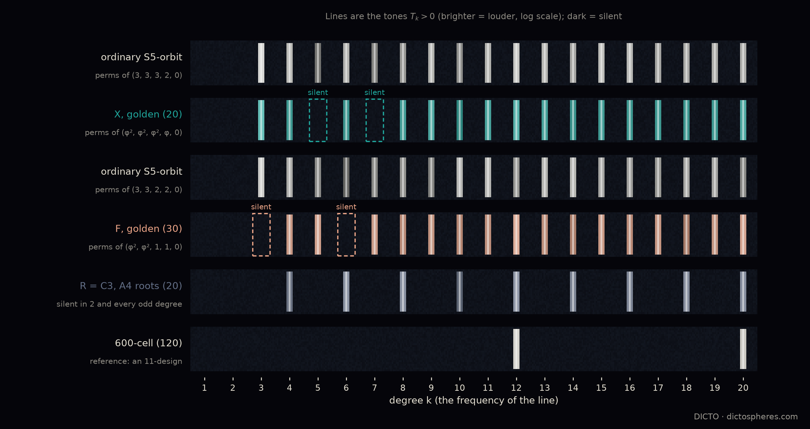
Figure 9.1. The lofargram of silences (#109, Figure 1). As on a sonar display, the degree k runs across like a frequency and each band is one set: a bright line where the set sounds (brightness on a log scale) and darkness where it is silent. Each golden set sits under an ordinary S5-orbit of its own family, which sounds in every degree from 3. The lines of X at 5 and 7 and of F at 3 and 6 are missing (dashed). Degrees 1 and 2 are dark for every S5-orbit (forced). R is silent in 2 and every odd degree; the White Queen, an 11-design, sounds only in degrees 12 and 20 up to 20. −X and −F have the lines of X and F. Colours are labels only.
The hulls of X and F are two golden solids, which DICTO named the Golden Truncated 5-cell (A) and the Golden Cantellated 5-cell (B) (Chapter 11, Figure 11.1). Where they lie in the White Queen is a separate question from why they are silent: Chapter 11 finds them hidden in her walls, and shows that being hidden comes from the kinds of their faces, not from their silence.
7. What is known and what is new
Known, credited. Spherical designs and the design strengths of Table 1, the 600-cell as an 11-design and the 19-designs from H4 orbits: Goethals and Seidel [1], Bannai [2]. The invariant degrees 2, 12, 20, 30 of H4, the icosians and the discrete Hopf fibrations of the 600-cell: Coxeter [3], Sadoc and Mosseri [4]. The invariants of the binary icosahedral group: Klein [7]. The Poincaré dodecahedral space as a model of space: Luminet et al. [5]; its mode multiplicities: Aurich, Lustig and Steiner [6]. The fingerprint Ql: Steinhardt, Nelson and Ronchetti, as cited in #94.
Shown here. Theorems 1–3 as readings of the two Queens, each checked from our own corners: the calibration of the four-dimensional fingerprint (Table 1), the three ring readings of the White Queen, and the agreement with Aurich, Lustig and Steiner at all 121 degrees up to 120. We did not find, in the sources checked, the harmonic fingerprint applied to the Queens, their slices or the path between them.
Section 6, credited. The split of the White Queen into five S5-orbits and the Galois form of the 5-cell's group on the icosians: Koca, Koç, Al-Barwani and Al-Farsi (2006), with the orbits' labels in Koca, Ozdes Koca and Al-Ajmi (2012); the algebraic core of the twisted-class law: Fel'shtyn and Troitsky, Lemma 5.1; the spin characters: Schur; defect zero: Brauer; designs and the zonal test: Delsarte, Goethals and Seidel. From #109 (in full in Appendix A): the golden silences and their proof by twisted characters, the three views as one mechanism, the dial. The image, the name twisted silence and the direction of the search are DICTO's.
Numerical only. The heights of §5.1 and the station μ* of §5.2.
8. Conclusion
Heard as tones, the two Queens are silent through degree 11, a silence that every orbit of their symmetry shares. Read as rings, the White Queen gives the icosahedron, the dodecahedron and the icosidodecahedron at once. Read as a group, she is the group of the Poincaré dodecahedral space, and her silence below degree 12 is that space's missing low modes. Between the Queens, a little past the truncated 600-cell, the silence numerically deepens to degree 19. Inside the White Queen, two golden sets are silent where their symmetry expects a sound, by twisted silence. Open: the exact heights of the silent slices, the exact value of μ*, and the fingerprint of the slices in the edge-first and face-first directions.
Sources checked
For the designs: E. Bannai's survey of spherical designs and J.-M. Goethals and J. J. Seidel, "Cubature formulae, polytopes, and spherical designs" (1981), checked for the credit of the 19-design (study harmonic-4d, 4 November 2026). For the Hopf rings: Coxeter; Sadoc and Mosseri (study hopf-interlock). For the Poincaré space: Planck 2015 results XVIII (arXiv 1502.01593), read; Luminet et al., Nature 425 (2003); Aurich, Lustig and Steiner, astro-ph/0412569, equations 26–27, used for the comparison; Roukema et al. (2008); Lew and Roukema (study pds-modes). DICTO's papers #62, #63, #65, #76 and #94.
* The truncated octahedron x = φ (Koca et al., 2015). DICTO's name: Icosaxes.
Chapter 10. The Queens' walls
Retold from paper #107, The Vacuus of the Queens, DICTO DOI 10.5281/zenodo.24126800, and paper #110, Walls of Silence: The Walls of the 4D 600-cell and 120-cell, Version 2, DICTO DOI 10.5281/zenodo.24272477 (all versions). The full statements, proofs and checks of #110 are in Appendix B.
The Vacuus in three kinds; the walls the two Queens share; the Mirror Law; Valley Charge
This chapter retells the two papers for the Queens. It keeps their status: exact means proved, or computed in exact arithmetic in ℚ(√5); floating-point checks are marked.
Join each face of a four-dimensional solid to its centre and it spans a flat slice through the centre. For most solids these slices are many and scattered. For the two Queens they are few and in order: one system of 360 walls through the centre carries every face of both.
1. The Vacuus, in three kinds
Let X be a polytope and O a chosen point inside it. The ridges of X are its faces of dimension two less than X: edges in three dimensions, two-dimensional faces in four. Each ridge spans with O one flat slice through O, its plate; the cone from O over the ridge is its fin. The Vacuus of (X, O), DICTO's name (#87, #105, #110), is the set of plates, each with the ridges on it. The centre must be stated: about the centre of the 600-cell (Schläfli, 1852) every one of its triangles lies on one of 60 plates, but measured from its own centroid the 600-cell less one corner has 915 plates, 900 of them carrying a single face.
A plate is a full sheet when with each ridge it carries the opposite ridge, a shared sheet when it carries two or more ridges but is not full, and a single fin when it carries one. DICTO named three kinds. (X, O) is of the heart kind when every plate is a full sheet, of the non-heart kind when every plate is a single fin, and of the inherited heart kind otherwise. In three dimensions each edge spans one plate through the centre. The octahedron's twelve edges lie four to a plate on three square sheets; the cube's twelve lie two to a plate, an edge and its opposite, on six diagonal planes; the tetrahedron's six lie one to a plate on six planes. The octahedron and the cube are of the heart kind, the tetrahedron of the non-heart kind (Figure 10.1).
Lemma 1 and Proposition 2 (the index law; #110, exact; proofs in Appendix B, §3). (X, O) is of the heart kind exactly when X is centrally symmetric about O. If G is the symmetry group of X fixing O, f a ridge with plate H, and Gf and GH the symmetries keeping f and H, then the ridges of the orbit G·f that lie on H number exactly |GH| / |Gf|.
The first holds because a ridge and its opposite span one plate, and a corner set closed under x ↦ −x has a centrally symmetric hull; the second is the orbit–stabiliser count read plate by plate, so the kind can be read off the symmetry of each plate. The two Queens are of the heart kind. The inherited heart kind has shared sheets without central symmetry: removing from the White Queen three corners at 120° to one another on one of her great hexagons leaves 1110 triangles on her 60 mirrors (3 mirrors with 14, 36 with 18 and 21 with 20), about her centre. In every shape on the Queens' corners tested so far that is not centrally symmetric, each shared sheet is a wall of the Queen; that this always holds is open (#110, Conjecture (i)).
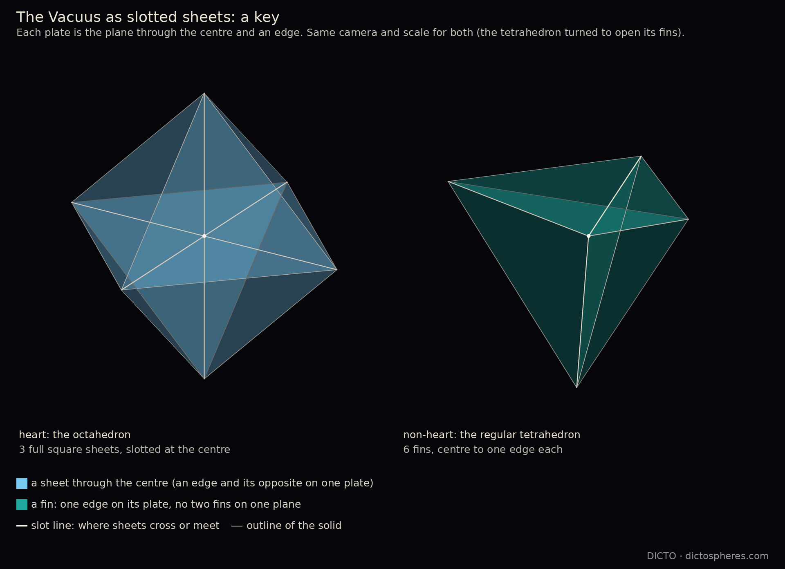
Figure 10.1. The Vacuus in three dimensions (#110, Figure 1). Left, the octahedron (heart): each plate carries an edge and its opposite, so its 12 edges lie on 3 full square sheets. Right, the regular tetrahedron (non-heart): 6 single fins, no two on one plane. Platonic solids after Euclid, Elements XIII.
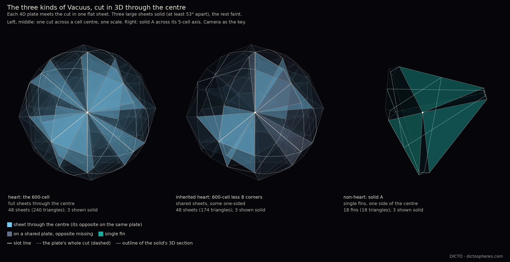
Figure 10.2. The three kinds in four dimensions, each cut through the centre (#110, Figure 2; each plate meets the cut in one flat sheet). Left, heart: the 600-cell, full sheets (sky). Middle, inherited heart: the 600-cell less 8 corners no two adjacent, a special cut of Dutour Sikirić and Myrvold (2008), about its centre; some sheets full, some shared with the opposite face missing (slate). Right, non-heart: the Golden Truncated 5-cell (A) of Chapter 11, single fins (teal). Colours are labels only.
2. The walls the Queens share
A wall of the White Queen is a flat slice through her centre of one of two kinds: one of her 60 mirrors, the slices across which she reflects into herself, or one of her 300 cross walls (DICTO's name), each parallel to a pair of her opposite cells and not a mirror. The normals of the mirrors point to her corners, those of the cross walls to her cell centres, the corners of the Red Queen. For the Red Queen the slices parallel to her cells are those same 60 mirrors, so the two Queens have one wall system of 360.
The cross walls are not mirrors, but they are no less the White Queen's own. They come from her cells as the mirrors come from her corners, and duality exchanges the two families. Each cross wall is also the middle slice of one of the 25 24-cells inscribed in her (Schoute; Denney et al. 2019), across a pair of its opposite octahedra, and the 25 × 12 = 300 such slices are exactly the cross walls (exact): the cross walls are the 24-cells' own middle walls. Their 300 normals, and the 60 of the mirrors, are the rays of Waegell and Aravind's Kochen–Specker sets (2011, 2014).
Which faces stand on the mirrors is answered by one rule, from #107.
The Queens' group is H4, whose Coxeter diagram is the chain 5–3–3. Wythoff's construction places a seed point with labels λi ≥ 0 on the four nodes and takes the hull of its images; the nodes with λi > 0 are the ringed nodes (Coxeter 1973; Champagne, Kjiri, Patera and Sharp 1995). The path of Chapter 7 is the seed sliding along the chain: the 120-cell (1, 0, 0, 0), the truncated 120-cell (1, 1, 0, 0), the rectified 120-cell (0, 1, 0, 0), the bitruncated 600-cell (0, 1, 1, 0), the rectified 600-cell (0, 0, 1, 0), the truncated 600-cell (0, 0, 1, 1) and the 600-cell (0, 0, 0, 1).
The Mirror Law (#107, Theorem 1; proved). Let P be the Wythoff polytope of a seed x, and J a node set of size n − 2 giving faces of P (so they have dimension n − 2: edges in three dimensions, 2-faces in four). The faces of type J lie on mirrors of the group if and only if the roots of the unringed nodes include one orthogonal to αj for every j in J.
The proof is short: the central hyperplane through a face of type J is a mirror exactly when some root is orthogonal to the seed and to every αj, and, since the coefficients of a root in the simple roots all have one sign, that happens only for a root of the unringed nodes (#107, Section 2). The law was checked against direct measurement for every seed of zeros and ones and every face type in A3, B3, H3, A4, B4, F4 and H4: 228 cases, no disagreement.
The Queens' faces (#107, Corollary 2; proved). Every face of a regular polytope lies on a mirror. The 1200 triangles of the 600-cell and the 720 pentagons of the 120-cell lie on the same 60 central slices, the 60 mirrors of H4: 20 triangles on each, and 12 pentagons on each.
stage (seed)
2-faces
on the 60 mirrors, on each
on no mirror
600-cell (0, 0, 0, 1)
1200 triangles
20 triangles
none
truncated 600-cell (0, 0, 1, 1)
2400 triangles, 1200 hexagons
20 hexagons
the 2400 triangles
rectified 600-cell (0, 0, 1, 0)
3600 triangles
20 triangles, between two octahedra
the 2400 triangles between an octahedron and an icosahedron
bitruncated 600-cell (0, 1, 1, 0)
1200 triangles, 720 pentagons, 2400 hexagons
20 triangles and 12 pentagons
the 2400 hexagons
rectified 120-cell (0, 1, 0, 0)
2400 triangles, 720 pentagons
12 pentagons
the 2400 triangles
truncated 120-cell (1, 1, 0, 0)
2400 triangles, 720 decagons
12 decagons
the 2400 triangles
120-cell (1, 0, 0, 0)
720 pentagons
12 pentagons
none
Table 10.1. The faces on the mirrors along the path of Chapter 7, all seven solids (#107, Section 3; #110, Section 7). Each row follows from the Mirror Law. In each of the five stages between the Queens, the faces off the mirrors lie on 1200 plates that are on no wall at all.
At the midpoint, the bitruncated 600-cell, every mirror carries 20 triangles and 12 pentagons: the faces between its truncated tetrahedra, where the White Queen's cells were, and between its truncated icosahedra, where the Red Queen's were. Its hexagons, where a truncated tetrahedron meets a truncated icosahedron, lie on no mirror (#107, Corollary 3). The faces between like cells stand on the mirrors; the faces where the two kinds meet stand off them. Of the 15 uniform solids of H4 (Wythoff's construction; the list by Conway and Guy 1965, proved complete by Möller 2004) every one is of the heart kind, and only the two Queens have every plate on a wall (#110, Section 7; Appendix B).
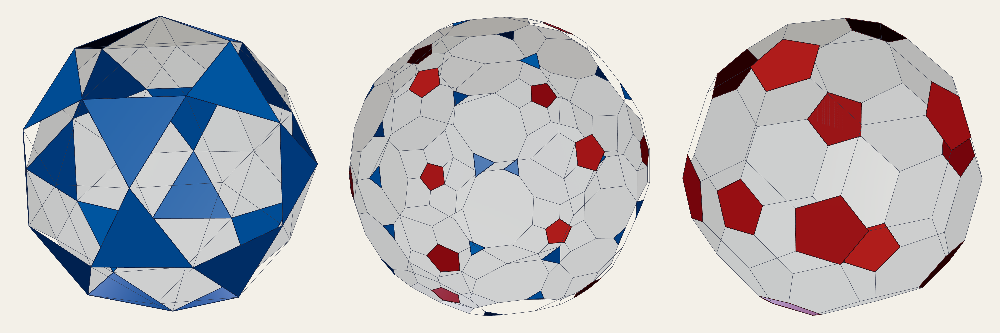
Figure 10.3. One mirror of H4 cutting each Queen and their middle (#107, Figure 1); each slice is drawn as a 3D solid in grey glass, its back half seen through. Left, the 600-cell (the slice has 42 corners and 80 triangles): the mirror carries 20 of the White Queen's triangles (blue). Right, the 120-cell (80 corners): 12 of the Red Queen's pentagons (red). Middle, the bitruncated 600-cell (240 corners): the same mirror carries 20 triangles and 12 pentagons, the faces between its truncated tetrahedra and between its truncated icosahedra; none of its hexagons, where the two kinds meet. Colours are labels only.
3. Valley Charge
Between the two Queens, one solid has every wall and nothing else.
Cut each edge of the White Queen at 1/(1 + φ²) of its length from each end, a little less deeply than the uniform cut of 1/3. The solid that results stands on the path between the Queens, S(μ) = 600-cell ∩ μ·120-cell (DICTO's Hopscotch line; Chapter 9, §5.2), at μ = 1/2 + √5/5. DICTO named it Valley Charge.
Proposition 6 (Valley Charge; #110, exact; proof in Appendix B, §7). Valley Charge has 1440 corners, 720 cells, 2400 triangles and 1200 golden hexagons, and its Vacuus is exactly the 360 walls: 20 hexagons on each mirror and 8 triangles on each cross wall.
Its hexagons lie in the White Queen's triangles, so they stand on her mirrors; the cut is what puts its corner triangles on the cross walls, 8 on each. Cut at 1/3 or 1/5 instead, those triangles stand on no wall (floating point). Valley Charge is a different point of the path from the station μ* of deeper silence in Chapter 9: the walls and the tones pick out different stations. Valley Charge was not found in the sources checked.
4. What is known
Credited: the 600-cell and the 120-cell (Schläfli, 1852); reflection groups, Wythoff's construction and the faces of Wythoff polytopes (Humphreys 1990; Coxeter 1973; Champagne, Kjiri, Patera and Sharp 1995); the special cuts (Dutour Sikirić and Myrvold 2008); the 25 inscribed 24-cells (Schoute; Denney et al. 2019); the 60 and 300 directions (Waegell and Aravind 2011, 2014); the uniform solids of H4 (Conway and Guy 1965; Möller 2004). Not found in the sources read for #107 and #110: the Mirror Law as stated (its proof is short and may be known), the Vacuus reading of any of these shapes, the index law, the 24-cell reading of the cross walls and Valley Charge. The full lists of sources checked are in #107 and in Appendix B.
DICTO's: the Vacuus and its three kinds (heart, inherited heart, non-heart), the names the Queens, cross walls and Valley Charge, the ruling that cross walls count, the Hopscotch line, and the shadows as lattices of possible Vacuus (Chapter 5). Licence CC BY-SA 4.0.
The walls are now known. The next chapter asks what shapes are hidden in them.
Chapter 11. The Queens' cats
Retold from paper #110, Walls of Silence: The Walls of the 4D 600-cell and 120-cell, Version 2, DICTO DOI 10.5281/zenodo.24272477 (all versions), and paper #109, Silent Running: Twisted Silence, Version 2, DICTO DOI 10.5281/zenodo.24272473 (all versions). Their full statements, proofs and checks are in Appendices B and A.
The silent solids hidden in the White Queen's walls; hidden is not silent; weighing the cat; the cats in the Red Queen, and her own cats, their duals
The cat and the meat
A story, as usually told of Mulla Nasruddin. He brings home meat for supper, and when he comes back to eat it, it is gone. His wife says the cat ate it. He picks up the cat, puts it on the scales, and it weighs exactly what the meat weighed. "If this is the meat," he asks, "where is the cat? And if this is the cat, where is the meat?" The story is also told in Rumi's Masnavi, Book 5.
DICTO turned the story to the Queens, and this chapter uses it in one sense only. The meat is the Queen's structure: her walls, the flat slices through her centre on which her faces stand (Chapter 10). The cats are the shapes found hidden in those walls: the two golden solids A and B and the solid C3, each made from the White Queen's own corners (§1); their copies; and, in the Red Queen, their duals (§5). A cat is hidden in a wall system when every one of its faces lies on one of the walls. DICTO's idea of 16 November 2026 is that the silent solids of Chapter 9 had not been seen because they look like the White Queen's walls: the wood cannot be seen for the trees, and here the trees are in the walls.
Weighing the cat means asking whether the shapes and the walls are the same thing. The chapter gives three exact answers (§3). By corners, yes: the White Queen is exactly her five groups of corners, the corners of A, B, C3 and the mirror images of A and B. By walls, yes: A and B together use all her mirror walls. As solids, no: the five solids overlap and do not tile her.
1. The silent solids, hidden in the White Queen's walls
The five sets of Chapter 9 are the corners of five solids. With the edge of the 600-cell (Schläfli, 1852) √2 and its radius φ√2: the Golden Truncated 5-cell (A), DICTO's name, the hull of X, has 20 corners, 40 edges, 30 faces and 10 cells, 5 regular tetrahedra and 5 golden truncated tetrahedra whose hexagons have sides √2 and φ√2 in turn: the pattern of the truncated 5-cell with two edge lengths in the ratio φ. The Golden Cantellated 5-cell (B), DICTO's name, the hull of F, has 30 corners, 90 edges, 80 faces and 20 cells, 5 regular octahedra, 10 golden triangular prisms and 5 golden cuboctahedra: the pattern of the cantellated 5-cell, with the same two edge lengths. The hull of R is the uniform expanded 5-cell, labelled C3 here. With −A and −B these are the five S5-sets of the 600-cell's corners (Figures 11.1 and 11.2). The sets are Koca, Koç, Al-Barwani and Al-Farsi's (2006), who give the orbits by their Dynkin labels with Ozdes Koca and Al-Ajmi (2012), which fix the patterns and the golden edge ratio; the cells, edges and faces of the two hulls are worked out in #109, and the names and the reading of the hulls as Vacuus are DICTO's.
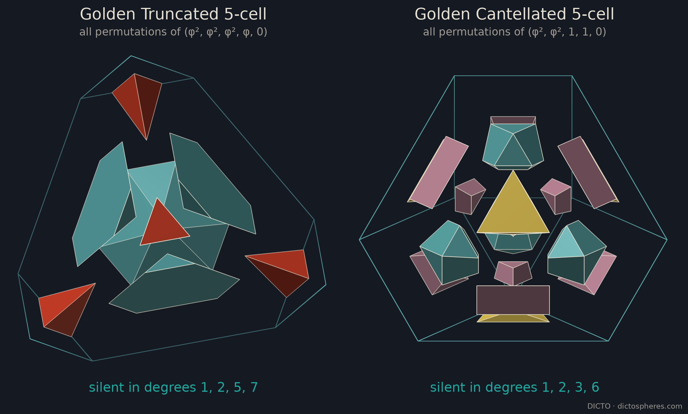
Figure 11.1. The two silent solids of the 600-cell (#109, opening figure): the Golden Truncated 5-cell (A) and the Golden Cantellated 5-cell (B). Each is the hull of one twisted class of its corners, and each is silent in two degrees that its symmetry does not force: A in 5 and 7, B in 3 and 6 (Chapter 9, §6). Schlegel views, cells pulled apart; regular tetrahedra red and regular octahedra yellow (the app colours of these solids), golden cells in label colours.
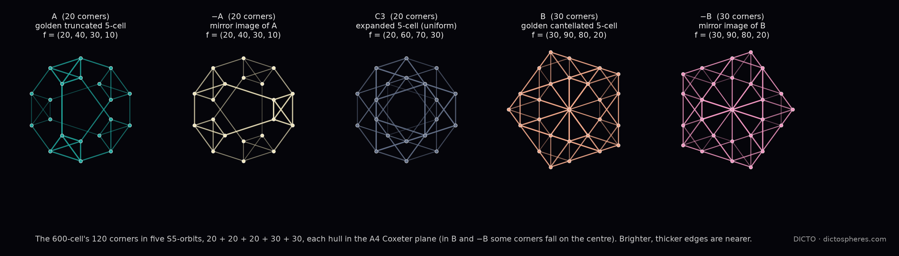
Figure 11.2. The White Queen's 120 corners as five solids, each hull in the A4 Coxeter plane (#110, Figure 3): A teal, −A cream, C3 slate, B apricot, −B pink, the label colours of #109. Brighter, thicker edges are nearer. By corners the five are the whole White Queen; by walls, A and B together carry all 60 of her mirrors. Exact hulls (ℚ(√5)); floating point for drawing. Colours are labels only.
A shape on the White Queen's corners is hidden in her when every plate of its Vacuus, about her centre, is one of her walls; partly hidden when some are. Whether a shape is hidden is settled by the kinds of its faces:
Lemma 3 (the face lemmas; #110, exact; proof in Appendix B, §4). On the 600-cell's corners: (a) every triangle of three of its edges lies on a mirror, 20 on each, and so does every pentagon of the dual 120-cell, 12 on each (Chapter 10, #107 Corollary 2); (b) every golden rectangle with sides an edge and a radius lies on a mirror, 30 on each; (c) every triangle with sides equal to its radius lies on a cross wall, 8 on each; (d) a face fixed point by point by one of its reflections lies on that reflection's mirror.
Theorem A (the silent solids are hidden in the 600-cell; #110, exact; proof in Appendix B, §4). Every plate of A and of B is a wall of the 600-cell. A's 30 plates, 20 on its triangles and 10 on its hexagons, are mirrors. Of B's 80, the 10 on its edge triangles and the 30 on its golden rectangles are mirrors, and the 40 on its radius triangles are cross walls. The mirrors of A and of B share exactly the 10 mirrors of S5, and together they are all 60. C3's 70 faces lie on 5 cross walls, 14 on each. A and B are of the non-heart kind, C3 of the heart kind.
The proof is the face lemmas: A's triangles are edge triangles and each of its hexagons is fixed point by point by a swap of two coordinates, a reflection; B's faces are edge triangles, golden rectangles and radius triangles.
kind
plates
face on the plate (between cells)
slice: corners (of the solid + edge crossings), edges, faces
wall
A1
20
edge triangle (tetrahedron | golden truncated tetrahedron)
6 = 6 + 0, 9, 5: a frustum
mirror
A2
10
hexagon, sides √2, φ√2 (two golden truncated tetrahedra)
golden rectangle (golden cuboctahedron | golden prism)
13 = 9 + 4, 24, 13
mirror
B4
10
edge triangle (two golden cuboctahedra)
15 = 6 + 9, 24, 11
mirror
Table 11.1. The plates of A and B under their 120 symmetries, the slice of the solid each plate cuts, and its wall (#110, Table 2, exact).
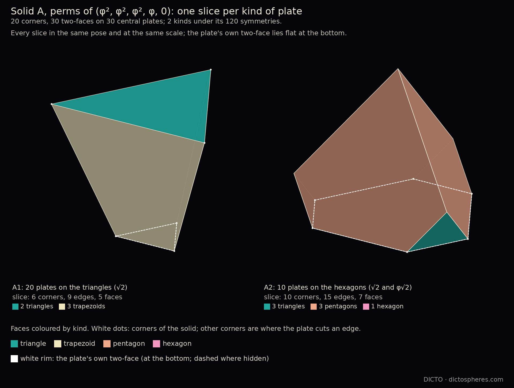
Figure 11.3. The Golden Truncated 5-cell (A), one slice per kind of plate (Table 11.1), in one pose and at one scale, the plate's own face flat at the bottom with a white rim (#110, Figure 4). Face colours are labels only: triangle teal, trapezoid cream, pentagon apricot, hexagon pink. White dots are corners of the solid.
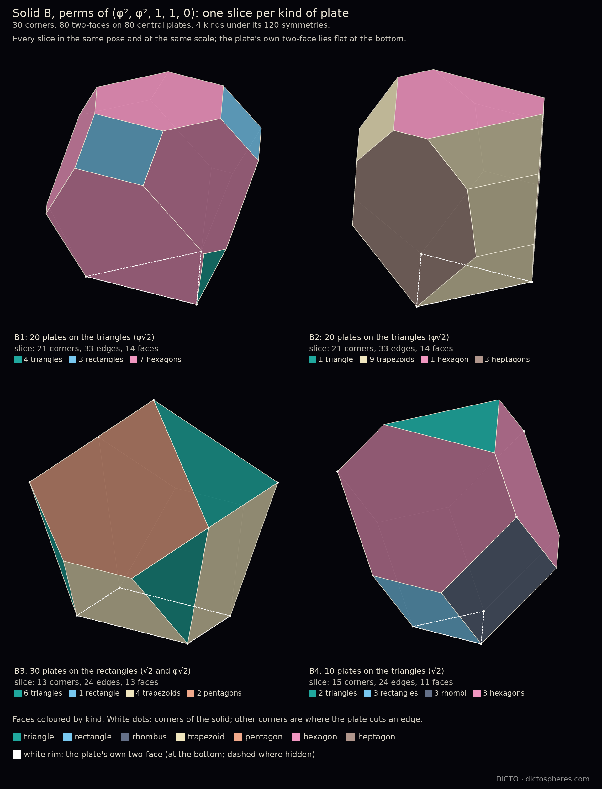
Figure 11.4. The Golden Cantellated 5-cell (B), one slice per kind of plate (#110, Figure 5): B1 and B2 on radius triangles (cross walls), B3 on golden rectangles and B4 on edge triangles (mirrors). Rectangle sky, rhombus slate, heptagon taupe; colours are labels only. B1 and B2 share their counts but not their faces.
2. Hidden is not silent
A and B are hidden because their faces are faces of these kinds, not because they are silent. The same face lemmas hide shapes that are not silent at all, and the controls of #110 show how common being hidden is on the White Queen's corners (Appendix B, §§4, 7 and 8):
Known solids. The 24-cell, the snub 24-cell (Gosset, 1900) and the grand antiprism (Conway and Guy, 1965) are hidden in the White Queen. So is every special cut, the hull of what is left when corners no two of them adjacent are removed (Dutour Sikirić and Myrvold, 2008, who count 314,248,344 special cuts up to symmetry): every face of a special cut is a triangle of the White Queen, on a mirror, and the cut is of the heart kind when the removed corners come in opposite pairs, of the inherited heart kind otherwise (#110, Proposition 4). Every full-dimensional orbit hull of the five maximal subgroups of the Queens' group on her corners is hidden, except the 12- and 20-corner duopyramids (exact wall tests on floating-point hulls).
All five sets. All five S5-sets of Chapter 9 are hidden, R as well as X and F, while only X and F carry the twisted silences.
Chance. Of random sets of her corners, 100 samples of each size, the mean share of plates on no wall is 28% for 20 corners and 20% for 30 corners, and no sample was hidden; for 60 corners the share is 2%, and 60 of the 100 were hidden. So among sets the size of A and B, being hidden is rare (under about 3% at this sample size), but not impossible.
Off the corners. The ordinary S5-orbits of the same patterns, the permutations of (φ², φ², φ², 3/2, 0) and of (φ², φ², 6/5, 6/5, 0), have 20 of 30 and 70 of 80 plates on no wall; but they are not on the White Queen's corners, so they compare corners with non-corners, not twist with no twist. Of the other silent sets of #109, the four 30-point sets and the 60-point sets of the White Queen are hidden, and the two 240-point sets of the Red Queen are not (240 and 420 plates on no wall).
The walls do not hear the silence; they show where the silent shapes stand.
3. Weighing the cat
Do the cats, the hidden shapes, make up the White Queen whose walls hide them? There are three exact answers, one for each way of making.
By corners, yes. A, −A, C3, B and −B together are her 120 corners, 20 + 20 + 20 + 30 + 30, each once.
By walls, yes. A and B carry all 60 of her mirrors, and B carries 40 of her 300 cross walls (Theorem A). Their copies fill her faces exactly: the 5-cell's group sits in her in 60 ways, and in each it cuts one copy of each solid; each of her 1200 triangles is then a face of exactly one of the 120 copies of B and B's mirror image, and of exactly two of the 120 copies of A (Theorem B (d), §4).
By solids, no. The five hulls overlap. Of her volume, A takes (1 + 3φ)/40, B (3 + 5φ)/24 and C3 (14 + 7φ)/60; the five together cover 0.6504 of it, and what they share is a uniform bitruncated 5-cell, (23/750 + 23φ/1500) of it (exact). Her walls cut her into 4,291,200 = 14 400 × 298 chambers, each a pyramid from the centre over a piece of a cell (#110, Theorem C, exact, by Zaslavsky's count). Walls through the centre cannot cut out a solid round the centre, so A and B are never chambers; A's own 30 plates cut it into 3360 chambers, of which 120 are exactly the Coxeter chambers of her mirrors. The walls do not hand the shapes back: by corners and by walls the cats weigh what the meat weighs, and as solids they are not the meat.
4. The cats in the Red Queen
The Red Queen holds ten White Queens on her corners, in two groups of five (Chapter 8; the compound of ten 600-cells in the 120-cell is Coxeter's, Regular Polytopes, Table VII). Each group uses every corner once, so every corner is shared by two White Queens, one from each group. Each White Queen brings her own cats, so the Red Queen's cats come in two states, one for each group, and she holds both states at once. Every corner is in both states; cats of the two states share corners and share walls; but no cat is in both. DICTO's image for this is Schrödinger's cat, in two states at once: many half-alive cats living side by side. It is an image only, and no physics is claimed.
Theorem B (the cats in the Red Queen; #110, exact; proof in Appendix B, §5). (a) The 120-cell has exactly 10 inscribed 600-cells, every corner in exactly 2, in two states of 5 disjoint ones; two from different states meet in a 24-cell. (b) It holds exactly 1200 copies of A (with its mirror image), 1200 of B and 600 of C3, all inside the ten 600-cells, 120, 120 and 60 in each. (c) The walls of the ten 600-cells are 1560: the 120-cell's 60 mirrors, a cross wall of all ten; its 300 other walls, each a mirror of the 2 inscribed 600-cells through that corner axis; and 1200 slices that are not its walls, each a cross wall of exactly 2. Every copy of A is hidden in the 120-cell itself, its plates on the 300 only; every copy of B and of C3 is hidden in its own 600-cell but not in the 120-cell. (d) In each inscribed 600-cell the 120 copies of B split its 1200 triangles exactly.
copies
in each White Queen
in the Red Queen
through each corner
her 60 mirrors used
her 300 other walls used
of the 1200 used
hidden in
A, −A
120
1200
40
0
300
0
the Red Queen and its White Queen
B, −B
120
1200
60
60
300
1200
its White Queen only
C3
60
600
20
60
0
1200
its White Queen only
Table 11.2. The cats in the Red Queen and the walls their plates use (#110, Table 3, exact). Each White Queen has 60 mirrors, from the Red Queen's 300 other walls, and 300 cross walls, 60 of them the Red Queen's mirrors and 240 from the 1200.
No copy lies in both states, since the White Queens of one state are disjoint, but copies of A and B from the two states share at most 6 corners and always share walls, two copies of A at least 2 of them, a copy of A and one of B at least 1, two copies of B at least 5 (two copies of C3 can share 12 corners and no wall). The two states meet in the 25 shared 24-cells, and there the cats come in halves. Fix the 5-cell's group in a White Queen of the first state: of her 5 shared 24-cells, one splits 0 A, 12 C3, 12 B and the other four 10 A, 2 C3, 12 B, so every shared 24-cell is half B in each of its two White Queens, whatever the choice. Over all 90,000 pairs of choices the corners of a shared 24-cell fall into 18 patterns, and in 1500 cases, 1 in 60, every corner is in the same set in both states (#110, Proposition 5). The cats of the two states are never one cat, and never apart.
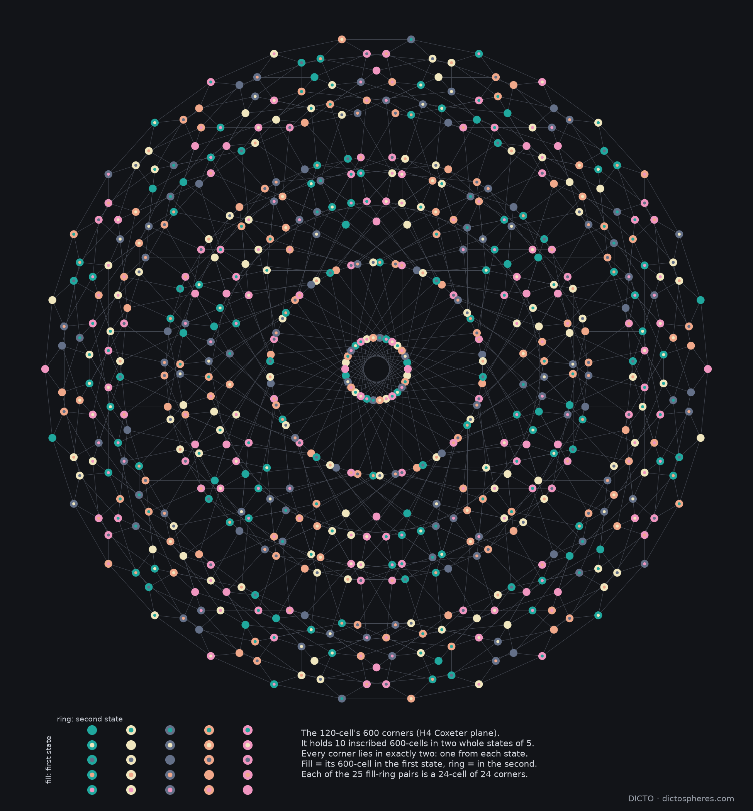
Figure 11.5. Where the many half-alive cats live: the Red Queen's 600 corners in the H4 Coxeter plane, with her edges (#110, Figure 6). Fill colour: the corner's White Queen in the first state; ring colour: in the second. Each of the 25 fill–ring pairs is a 24-cell shared by two White Queens. Colours are labels only.
5. Her own cats: the duals
The White Queens inside the Red Queen use her corners, but their edges are her diagonals, so their copies never make her edges or her pentagons. On 16 November DICTO proposed that a premise might be at fault: "Why the Red Queen but not the White? Is there perhaps a false underlying premise … something previously too elegant and perfect to question?" The premise was inclusion. The two Queens are related by duality, and DICTO's reading, which Theorem B′ confirms, is that the Red Queen's own cats are the duals of the White Queen's. Take the White Queen dual to her (corners along her cell centres) and the polar X* of each copy X about the common centre.
Theorem B′ (the dual cats; #110, exact in ℚ(√5) unless marked; proof in Appendix B, §5). (a) For each of the 600-cell's 60 copies of the 5-cell's group, the 120-cell is exactly A* ∩ (−A)* ∩ C3* ∩ B* ∩ (−B)*, and the five duals use its 120 cell walls once each. (b) A* is the 5-cell with a low pyramid on each cell (10 corners, 20 tetrahedral cells), its Kleetope (Grünbaum), 5 of its corners on the 120-cell; B* has 30 triangular bipyramids as cells; C3* has 20 cells of 8 corners. (c) Every plate of every dual copy lies on one of the 120-cell's own 60 mirrors, 10 per copy. A* and B* are of the inherited heart kind, C3* of the heart kind. (d) The fins of the 120 copies of A*, and those of the 120 copies of B*, each cover all 720 of its pentagons and all 1200 of its edges whole. The fewest copies that cover every pentagon are 16 of A*, 16 of B* or 22 of C3*: no cover by 15, 15 or 21 copies exists, certified by DRAT proofs from the SAT solver CaDiCaL checked by the independent proof checker drat-trim. No choice of copies covers each pentagon exactly once. (e) Dualising the copies inside the ten 600-cells instead covers no pentagon. (f) Each corner of the 120-cell is a corner of exactly one copy of A*: the 120 copies split its 600 corners into sets of 5, one corner from each of the ten inscribed 600-cells.
So the premise was the false part: the Red Queen's cats are not her inscribed White Queens but the duals of the White Queen's cats. Each Queen has her own cats, and duality relates them. What the golden form gives is the exact fit: the duals' cells on her cell walls, A*'s corners on her corners, and the Red Queen as the meet of the five duals. The cover of her pentagons comes from the pattern of the shapes, not from the golden proportions; orbits of the same pattern with other proportions cover the pentagons too, without the fit. DICTO proposed that the fins of the Vacuus form the Queens' skeletons, and they do, each Queen with her own cats: in the White Queen every triangle is a face of a copy of B (Theorem B (d)); in the Red Queen the fins of the dual copies cover every pentagon and every edge whole, on her own mirrors. One level down the two states return: the White Queen splits into 5 disjoint 24-cells in 10 ways, in two states of 5, with the same counts as the shared 24-cells above (Theorem B′ (f), Appendix B).
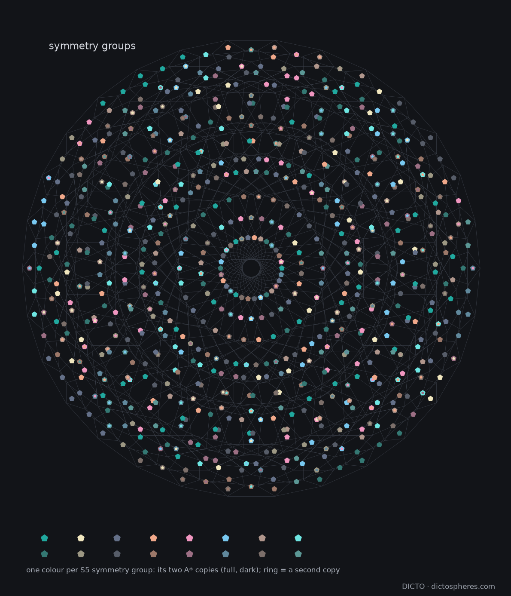
Figure 11.6. The Red Queen's own cats (#110, Figure 7): her 720 pentagons in the H4 Coxeter plane, each marked at its centre. Sixteen copies of A* (the fewest possible) cover them all; they come from 8 copies of the 5-cell's group, one colour per copy, full and dark for its two A* copies; a ring marks a second covering copy (540 pentagons are covered once, 120 twice, 60 three times). Every pentagon is covered whole by 10 copies of A*, 10 of B* and 5 of C3*; no side of a pentagon is an edge of any dual copy. Colours are labels only.
6. What is known
Credited: the 600-cell and the 120-cell (Schläfli, 1852); the 24-cell (Schläfli); the snub 24-cell (Gosset, 1900); the grand antiprism (Conway and Guy, 1965); the special cuts and their count (Dutour Sikirić and Myrvold, 2008); the five S5-orbits of the 600-cell (Koca, Koç, Al-Barwani and Al-Farsi 2006; Koca, Ozdes Koca and Al-Ajmi 2012), which give the Wythoff types of A and B but do not name or describe the hulls; the five maximal subgroups (Koca et al. 2006); the 25 inscribed 24-cells (Schoute; Denney et al. 2019); the compound of ten 600-cells in the 120-cell (Coxeter, Regular Polytopes, Table VII); the chamber count (Zaslavsky 1975); the Kleetope and the polar of a truncation (Grünbaum); the SAT solver CaDiCaL and the proof checker drat-trim. Not found in the sources read for #109 and #110: face lemmas (b) and (c) as statements about walls, the copies in the 120-cell and their three classes of wall, the triangle split, the half-cat patterns, the chamber counts of the 360 and 1560 walls and the dual cats (their walls, kinds, covers and the A* corner partition). The full lists of sources checked are in Appendices A and B.
DICTO's: the names Golden Truncated 5-cell and Golden Cantellated 5-cell, the idea that the silent shapes were hidden because they look like the White Queen's walls, the wood and the trees, the turning of the cat and the meat to the Queens and the image of the Red Queen's two states as Schrödinger's many half-alive cats, the reading of the shapes round the Queens as Vacuus, the survey of the 120-cell, the proposal that found the dual cats, the duals as the Red Queen's own cats, and the proposal that the fins form the Queens' skeletons. Licence CC BY-SA 4.0.
Plates
The plates give the shapes of Chapters 6 and 8 a page each. Plates 1–13 are the named slices of the White Queen, the 600-cell (Chapter 6); Plates 14–28 her fifteen Cleo shells (Figure 6.3); Plates 29–34 the named slices of the Red Queen, the 120-cell (Chapter 8); Plates 35–43 her nine layers of dodecahedra (Figure 8.1).
Each slice is drawn from its exact model in the DICTO solids dataset, version 6 (DICTO DOI 10.5281/zenodo.23790799), with its faces coloured by their number of sides as in the atlases of Figures 6.1 and 8.3: triangles ivory, four-sided faces blue, pentagons red, hexagons amber, seven-sided faces green, eight-sided faces violet, nine-sided faces teal, decagons pink. Heights are measured along each direction's own vector, as in the atlases, so they compare within one direction only. The names are DICTO's, after Lewis Carroll; the D-numbers are the permanent numbers of DICTO's catalogue. Plates 8, 11, 12 and 13 are sections in Alicia Boole Stott's series of 1900, under DICTO's names for them (Alicia, Humpty Dumpty, Unicorn, Bandersnatch); the first three carry no D-number, and Humpty Dumpty keeps the D85 it was given before this was known.
The shells and layers are seen in perspective, as in Figures 6.3 and 8.1, each drawn at its own scale, with the shells or layers inside the one shown in grey.
Cell-first section of the 600-cell at height 0* (Boole Stott, 1900): the central slice. * Rediscovered by DICTO as Alicia.
Corners, edges, faces
84, 240, 158
Faces
152 triangles, 6 four-sided faces
Symmetry
Oh, order 48; convex
Record
The cell-first central slice of the 600-cell, the middle section of Alicia Boole Stott (1900, cell-first series through the corner layers); named after her by DICTO
Cell-first section of the 600-cell at height (2 + √5)/2* (Boole Stott, 1900). * Rediscovered by DICTO as Humpty Dumpty.
Corners, edges, faces
48, 138, 92
Faces
92 triangles
Symmetry
Td, order 24; convex
Record
One of the sections drawn by Alicia Boole Stott (1900, cell-first series through the corner layers); the exact solid and the name are #63's and DICTO's; D85 is kept, as D-numbers are never reused; forced to equal edges it becomes Fallen Humpty (D102)
Cell-first section of the 600-cell at height (3 + √5)/2* (Boole Stott, 1900). * Rediscovered by DICTO as the Unicorn.
Corners, edges, faces
42, 120, 80
Faces
80 triangles
Symmetry
Td, order 24; convex
Record
Cell-first corner-layer section, one of the sections of Alicia Boole Stott (1900, cell-first series through the corner layers); same counts as the Lion, another shape
Twenty Cleo-Icos* filling a regular icosahedron (* the icosahedron face pyramid (classical; Mackay, 1962); rediscovered by DICTO as the Cleo-Icos): the 20 cells at the corner v; all one kind as seen (by exact edge lengths, Chapter 6)
Centre height
(7 + 3√5)/8 along v, in units where v stands at height 2
So far
20 of the 600 cells, from the core out
View
Perspective from an eye at height −21/10, just beyond the opposite corner; drawn at its own scale; grey: the shells inside
The 120-cell cut cell-first, at height (9 + 4√5)/32: in a gap between two layers of corners, cut at its midpoint
Corners, edges, faces
120, 180, 62
Faces
20 triangles, 12 pentagons, 30 eight-sided faces
Symmetry
Ih, order 120; convex
Record
120-cell cell-first slice in a gap (cut at its midpoint), 120 corners; a gap section, not in Boole Stott's series; not found in the sources checked (#65)
The 120-cell cut cell-first, at height (29 + 13√5)/64: in a gap between two layers of corners, cut at its midpoint
Corners, edges, faces
120, 180, 62
Faces
30 four-sided faces, 20 hexagons, 12 decagons
Symmetry
Ih, order 120; convex
Record
120-cell cell-first slice in a gap (cut at its midpoint): the faces and symmetry of the truncated icosidodecahedron (30 squares, 20 hexagons, 12 decagons, Ih) with two edge lengths; not found in the sources checked (#65)
Plate 36 · The Red Queen · layers of dodecahedraChapter 8
Layer 1
12 dodecahedra
Cells
12 regular dodecahedra of the 120-cell; all one kind as seen (Chapter 8)
Where
Round the White Queen's 12 corners at height (1 + √5)/2 along v (v at height 2): each of her corners becomes one dodecahedron, its 20 corners the centres of her 20 cells there
So far
13 of the 120 dodecahedra, from the core out
View
Perspective from just beyond the opposite dodecahedron; drawn at its own scale; grey: the layers inside
Plate 37 · The Red Queen · layers of dodecahedraChapter 8
Layer 2
20 dodecahedra
Cells
20 regular dodecahedra of the 120-cell; all one kind as seen (Chapter 8)
Where
Round the White Queen's 20 corners at height 1 along v (v at height 2): each of her corners becomes one dodecahedron, its 20 corners the centres of her 20 cells there
So far
33 of the 120 dodecahedra, from the core out
View
Perspective from just beyond the opposite dodecahedron; drawn at its own scale; grey: the layers inside
Plate 38 · The Red Queen · layers of dodecahedraChapter 8
Layer 3
12 dodecahedra
Cells
12 regular dodecahedra of the 120-cell; all one kind as seen (Chapter 8)
Where
Round the White Queen's 12 corners at height (−1 + √5)/2 along v (v at height 2): each of her corners becomes one dodecahedron, its 20 corners the centres of her 20 cells there
So far
45 of the 120 dodecahedra, from the core out
View
Perspective from just beyond the opposite dodecahedron; drawn at its own scale; grey: the layers inside
Plate 39 · The Red Queen · layers of dodecahedraChapter 8
Layer 4
30 dodecahedra
Cells
30 regular dodecahedra of the 120-cell; all one kind as seen (Chapter 8)
Where
Round the White Queen's 30 corners at height 0 along v (v at height 2): each of her corners becomes one dodecahedron, its 20 corners the centres of her 20 cells there
So far
75 of the 120 dodecahedra, from the core out
View
Perspective from just beyond the opposite dodecahedron; drawn at its own scale; grey: the layers inside
Plate 40 · The Red Queen · layers of dodecahedraChapter 8
Layer 5
12 dodecahedra
Cells
12 regular dodecahedra of the 120-cell; all one kind as seen (Chapter 8)
Where
Round the White Queen's 12 corners at height (1 − √5)/2 along v (v at height 2): each of her corners becomes one dodecahedron, its 20 corners the centres of her 20 cells there
So far
87 of the 120 dodecahedra, from the core out
View
Perspective from just beyond the opposite dodecahedron; drawn at its own scale; grey: the layers inside
Plate 41 · The Red Queen · layers of dodecahedraChapter 8
Layer 6
20 dodecahedra
Cells
20 regular dodecahedra of the 120-cell; all one kind as seen (Chapter 8)
Where
Round the White Queen's 20 corners at height −1 along v (v at height 2): each of her corners becomes one dodecahedron, its 20 corners the centres of her 20 cells there
So far
107 of the 120 dodecahedra, from the core out
View
Perspective from just beyond the opposite dodecahedron; drawn at its own scale; grey: the layers inside
Plate 42 · The Red Queen · layers of dodecahedraChapter 8
Layer 7
12 dodecahedra
Cells
12 regular dodecahedra of the 120-cell; all one kind as seen (Chapter 8)
Where
Round the White Queen's 12 corners at height (−1 − √5)/2 along v (v at height 2): each of her corners becomes one dodecahedron, its 20 corners the centres of her 20 cells there
So far
119 of the 120 dodecahedra, from the core out
View
Perspective from just beyond the opposite dodecahedron; drawn at its own scale; grey: the layers inside
The book began with twelve dodecahedra round a thirteenth, and the gaps between them. DICTO pictured rays from the centre passing out through those gaps, gaps that should close in the fourth dimension, and the radial cell projection grew from that picture. The lead-up gave the pieces: three small pieces close the gaps between icosahedra (Chapter 1); of Aristotle's five pyramids only the cube's, and the tetrahedron's with the octahedron's, fill space (Chapter 2); face to face the five keep to their own solids, and every face-to-face tiling by them is a tiling by whole Platonic solids cut from their centres (Chapters 3 and 4).
The shadows of four dimensions then gave the shapes that gluing could not: variants of the convex deltahedra that join differently, and deltahedra rebuilt with every edge equal (Chapter 5). They also gave a key that the end of the book used again: every shadow keeps whole the walls that run along its view, flat planes through its centre, and across all the shadows those kept walls join into one lattice reaching all 360 walls of the Queens.
The Queens themselves were mapped completely. The White Queen has 62 slice patterns in her four main directions and four shadows, each resolving into an exact front half and back half, and her 600 cells stand in fifteen shells round one corner, the innermost twenty Cleo-Icos (Chapter 6); Alicia Boole Stott's series of 1900 is the first part of this atlas. Between the Queens lie five stages, built from the White Queen's own corners and mapped in 1402 slices (Chapter 7). The Red Queen is the White Queen's dual; she mirrors her by polarity, shadow for middle slice, holds the dodecahedron's pyramid at her core, and carries ten White Queens on her corners, in two states of five (Chapter 8). Aristotle's five pyramids are the cores of the four-dimensional regular solids, each with exactly its proportions. Heard as tones, both Queens are silent through degree 11, the White Queen as the group of the Poincaré dodecahedral space; and inside her two golden sets of corners are silent where their symmetry expects a sound, by twisted silence (Chapter 9).
The end returns to the centre where the book began. The walls of the Queens are flat slices through that centre, 60 mirrors and 300 cross walls, shared by the two of them; by the Mirror Law every face of both stands on the mirrors, and between them one solid, Valley Charge, has every wall and nothing else (Chapter 10). The silent solids of Chapter 9 stand in the White Queen's walls, every face on a wall, because their faces are of the kinds her walls carry. By corners they are the White Queen; by walls they carry all her mirrors and split her triangles exactly; as solids they overlap and are never her pieces. In the Red Queen the ten White Queens hold 1200 copies of each silent solid, no copy in both states and every copy sharing walls across them, and her own cats are their duals, whose fins cover every one of her pentagons (Chapter 11). The rays that once passed out through the gaps come back as walls, and the shapes found along the way were standing in them.
The results and their status
chapter
result
status
1
AXE, CLEO and FUJI close the gaps of thirteen icosahedra; FUJI is new
exact
2
which of Aristotle's five pyramids fill space
proved
3
face to face the pyramids keep to their solids; no new deltahedron from DICTO's pieces up to four
exact search
4
every face-to-face tiling by the five pyramids is a tiling by whole Platonic solids
proved
5
deltahedra from the shadows; each shadow keeps the walls along its view, one connected lattice of all 360
exact
6
the White Queen's atlas: 62 slice patterns, four shadows, fifteen Cleo shells
exact
7
the five stages between the Queens and their atlas of 1402 slices
proved cuts; computed atlas
8
Aristotle's pyramids as the cores of four dimensions; the Red Queen's atlas; ten inscribed White Queens in two states
exact
9
the Queens as 11-designs, rings and the Poincaré space; twisted silence of the golden sets
proved (classical readings checked); §5 numerical
10
the three kinds and the index law; one system of 360 walls for both Queens; the Mirror Law; Valley Charge
proved or exact
11
Theorem A (the silent solids hidden in the walls); hidden is not silent; weighing the cat (corners, walls, solids); Theorems B and B′ (the cats in the Red Queen and her dual cats); the chambers
proved or exact; marked checks in floating point
A, B
#109 and #110 in full: every statement, proof, table and check
as marked in each
Open problems
(1) Which tilings of space by the tetrahedron's and the octahedron's pyramids exist besides the octet cut up and its rearrangements (Chapter 2)? (2) Do gluings of five or more pieces with the regular solids, or seven or more of DICTO's pieces alone, give a new deltahedron, and do icosahedra with Antonius fill space (Chapters 3 and 4)? (3) Which of the new deltahedra of Chapter 5 tile space, alone or with others? (4) The atlases of Chapters 6, 7 and 8 cover the four main directions; the slices in other directions are not mapped, and the possible Vacuus of the shadows beyond the four main views are not listed. (5) The exact heights of the White Queen's silent slices, and the exact value of μ* where the path between the Queens is numerically a 19-design (Chapter 9, §5). (6) The inherited-heart rule: is every shared sheet of a shape on a Queen's corners that is not centrally symmetric a wall of the Queen (Chapter 10, §1)? (7) Are the 1200 walls of the ten White Queens that are not the Red Queen's own the cross walls of her 225 inscribed 24-cells? (8) The chambers: the classes and types of the 41,197 pieces that the 1560 walls cut in one chamber of the Red Queen's mirrors, as for the 298 of the White Queen's 360 walls (Chapter 11; Appendix B, §9)? (9) The open problems of twisted silence: the degree-8 sets, the E8 degree-4 unions, an exhaustive dial, and a complete list of the special silences of the icosians by prime-defect label (Appendix A, §10); and the further conjectures and questions of the walls (Appendix B, §9).
Appendix A. Silent Running: Twisted Silence
Paper #109 in full: its statements, proofs, tables and checks, from Version 2 (17 November 2026), DICTO DOI 10.5281/zenodo.24272473 (all versions; Version 2: 10.5281/zenodo.24295161). It is retold in Chapter 9, §6, and Chapter 11, and is given here with the paper named as its source. The theorem and section numbers are the paper's; its figures are numbered A.1 to A.6, and the two already in the book are referred to as Figures 9.1 and 11.1. Scripts, exact checks and data: https://github.com/DICTOR-Master/kaleidohedra/tree/9c9346c2/studies (research branch, commit 9c9346c2: folders 2026-11-15-fable-golden-a4, 2026-11-15-golden-a4-candidate, 2026-11-15-hidden-zeros-h4, 2026-11-15-twisted-silence-groups, 2026-11-15-quasicrystal-extinctions and 2026-11-15-law-giving-census; the paper's own checks, scripts/moment_check.py, and the second implementation, second-implementation/, are in its folder; the census re-derivation and the Proposition 6 check are in studies/2026-11-17-independent-checks).
Listening for hidden symmetries that silence specific harmonics of point sets in the 600-cell
The algebraic core of Theorem 1 is Fel'shtyn and Troitsky's Lemma 5.1 [5]; the spin characters are Schur's [2]; the defect-zero theorem is Brauer's [3]; the S5 split of the 600-cell, and the description of W(A4) through Galois-conjugate quaternions on which the golden twist rests, are Koca, Koç, Al-Barwani and Al-Farsi's [32] (also Koca, Ozdes Koca and Al-Ajmi [4]); they give those orbits as W(A4) polytopes by their Dynkin labels ([4, §4.1, eq. (30)]), which fix the combinatorial types and the golden edge ratio; the cells, edge lengths and face counts of the two solids, the Golden Truncated 5-cell (A) and the Golden Cantellated 5-cell (B), are worked out here, and their reading as Vacuus is DICTO's; the central-character formula behind Theorem 1 is Frobenius's; the invariant-harmonic test is Sobolev's [33]; designs and their zonal test are Delsarte, Goethals and Seidel's [6]; designs of harmonic index are Bannai, Okuda and Tagami's [8], and the silence signature is Misawa and Nishimura's harmonic strength [39]. DICTO: the title, the opening image, the name twisted silence, the names Golden Truncated 5-cell and Golden Cantellated 5-cell, the proposals, and the method and direction of the search: echo location, listening for the silences and turning the sonar dial in two and three directions, which locates the network in the 600-cell.
Abstract. A finite set of points on a sphere is silent in degree k when every harmonic polynomial of degree k sums to zero over it. Symmetry forces some silences: a set with the symmetry of a group G is silent in every degree in which G has no invariant harmonic. We show that a second, hidden kind of symmetry forces more. Read the 120 corners of the 600-cell (Schläfli, 1852) as the binary icosahedral group 2I of unit quaternions. The symmetry group S5 of the 5-cell splits them into five orbits of 20, 20, 20, 30 and 30 corners (Koca et al. [32, 4]). Each orbit is a twisted conjugacy class {a·x·σ(a)−1}, where σ is the outer automorphism of 2I: the Galois conjugation √5 ↦ −√5 followed by a rotation. Main theorem: the 20 permutations of (φ², φ², φ², φ, 0) are silent in exactly the degrees 1, 2, 5 and 7, and the 30 permutations of (φ², φ², 1, 1, 0) in exactly 1, 2, 3 and 6, in all degrees. Their symmetry is S5 and nothing more, and S5 forces only degrees 1 and 2: ordinary symmetry does not explain degrees 5 and 7, or 3 and 6. Those silences are forced by twisted characters (Theorem 1, a silence criterion for twisted classes of a finite group, which is Frobenius's central-character formula applied to the group extended by the twist). Three accounts of the mechanism (twisted characters of 2I, Schur's spin characters of a double cover of S5 with an integrality argument, and Brauer's defect zero) are complementary explanations of one piece of representation theory, not three independent proofs (Proposition 3). Galois conjugation, which DICTO calls Double Vision, builds the twist; as a map of the set it forces only that every tone is rational. A census of 3232 point sets in five H4 and E8 polytopes, exhaustive over its listed subgroup-orbit and union families rather than over all point subsets, leaves three open families. A classification shows where genuine twists exist (I2(n) for n = 5, 7, 9, 10, 11 and n ≥ 13, H3 and H4 through Galois conjugation, and Sym6 through its exceptional automorphism, which adds no silence). On the two edge circles of a dial the double silences are isolated points (exact), and a certified search found no others. The forced silences are a group-theoretic analogue of the systematic absences of a nonsymmorphic space group; this is an analogy, not a diffraction result, and a quasicrystal decorated with the silent sets shows no extinct Bragg peaks.
1. Running silent
A U-boat sits on the sea bed and waits out the hunt. Overhead the enemy's ships listen with sonar and drop depth charges wherever they hear it. No boat can be silent at every frequency. The sonar operator listens past the hiss of the sea for tonals: sharp lines at the particular frequencies of a boat's pumps, motors and shafts, which stand out and carry far [31]. A boat running silent shows none of the lines the operator is listening for, while the rest of its sound goes on, and to the listener above it passes as one more shape on the sea bed. The image is DICTO's, and it describes the point sets of this appendix.
A set of points on a sphere has a tone in every degree k, the size of its degree-k harmonic content. A generic orbit of a symmetry group rings in every degree the group allows. The golden sets of this appendix have no more symmetry than their neighbours, so a listener who knows their symmetry expects them to ring in degrees 5 and 7, or 3 and 6. They are silent there (Figure 9.1). The degrees are the frequencies, the tones are the lines, and the listener is anyone who knows the set's symmetry. As with the boat, no finite set is silent in every degree, and the rest of its tones go on. Unlike the boat, the sets do not choose their silence: the twist forces it. Their disguise is a twist: each is a twisted conjugacy class of the binary icosahedral group, a set that looks like an orbit of the 5-cell's symmetry group but is built from the group itself by a map that turns √5 into −√5. That map is DICTO's Double Vision [1], the move that places a golden shape and its Galois twin in one space. Here it does not silence anything on its own; it builds the twist, and the twist silences.
Two kinds of symmetry are at work. The ordinary symmetry of X and F is the group S5 of the 5-cell, which permutes the five coordinates. It forces their silence in degrees 1 and 2, because S5 has no invariant harmonic there; but it has an invariant harmonic in every degree from 3 on, so it cannot explain degrees 5 and 7 of X, or 3 and 6 of F. Those come from a twisted symmetry: the 600-cell's own group 2I acting on itself by x ↦ a·x·σ(a)−1, where σ is not an inner automorphism. This appendix is about that second kind.
2. Tones, silence and labels
Tones. For a finite set S on the unit sphere of ℝn and a degree k ≥ 1, the tone is Tk(S) = |S|−2 Σx,y∈S Gk(⟨x, y⟩)/Gk(1), with Gk the Gegenbauer polynomial of the sphere (the Chebyshev polynomial of the second kind Uk on S³ ⊂ ℝ⁴). Tk(S) ≥ 0, and Tk(S) = 0 exactly when every harmonic polynomial of degree k sums to zero over S (Delsarte, Goethals and Seidel [6]). We then say S is silent in degree k, or kills k. The silence signature of S is the set of k it kills. A t-design kills 1, …, t; a set killing a chosen list T of degrees is a spherical T-design (Miezaki [38]), or a design of harmonic index T in the sense of Bannai, Okuda and Tagami [8] and Zhu et al. [9], who note that Delsarte and Seidel's designs admitting indices [37] are essentially the same notion. The silence signature is what Misawa and Nishimura call the harmonic strength Hst(S) [39].
Forced silence. If G is a finite group of isometries fixing S, then S kills every degree in which G has no invariant harmonic (counted by Molien's series [26]; for orbits this is the method of Goethals and Seidel [7]). An orbit G·v kills degree k exactly when every G-invariant harmonic of degree k vanishes at v (Sobolev's theorem [33], stated for any finite group as in Nozaki and Sawa [35, Theorem 2.1]; [7]). A silence is unforced when the full symmetry group of S has an invariant harmonic in that degree.
The 600-cell as a group. The 120 unit icosians, the unit quaternions ½(±2, 0, 0, 0), ½(±1, ±1, ±1, ±1) and ½(0, ±1, ±φ−1, ±φ) with even permutations, form the binary icosahedral group 2I and are the corners of the 600-cell [14, 15, 16]. φ = (1 + √5)/2. On S³ = SU(2), harmonic degree k corresponds to the representation Vk = Symk(ℂ²) of dimension k + 1: the degree-k harmonics are the matrix coefficients of Vk, and Uk(Re g) is its character (Peter–Weyl). 2I has nine irreducible representations, of dimensions 1, 2, 2′, 3, 3′, 4, 4s, 5 and 6 (4s and 6 faithful); their pattern inside Vk is McKay's [13].
Twisted classes. Let G be a group and σ an automorphism of G. The twisted class of x0 ∈ G is O = {a x0 σ(a)−1 : a ∈ G}. For σ the identity it is an ordinary conjugacy class. An irreducible representation π of G is σ-stable when π∘σ ≅ π; then some Jπ, unique up to a scalar, satisfies π(g) Jπ = Jπ π(σ(g)), and the twisted character is χ̃π(x) = tr(π(x) Jπ−1). When σ is an involution we scale Jπ so that Jπ² = 1; a zero of χ̃π does not depend on the scaling.
Labels.Exact: proved, or computed in exact rational or Q(√5) arithmetic. Certified: located numerically and certified by a Krawczyk interval test [24]. Numerical: floating point. Quoted: a known result used from the literature and credited; where it was not re-read for this appendix, the reference says so.
Reproduction. Every exact claim has a script and a log in the folders of the meta line. The central computations (the twisted classes, Tables A.1 and A.2, the Main theorem to degree 60, Theorem 1's criterion on every class of 2T, 2O and 2I, Propositions 3, 5 and 7, the Sym6 case of Proposition 6 and the edge circles of §7) were redone by a second implementation written separately from the study scripts (second-implementation/, exact arithmetic, its own report). The census was re-derived by a third program, also written separately (studies/2026-11-17-independent-checks/109-census): it recomputed the zero lists of all 808, 144, 257 and 541 sets of the 600-cell, 24-cell, snub 24-cell and E8 universes, and they agree; the 1482 sets of the 120-cell agree by size, zeros and stabiliser order (set by set was not possible from the stored data); its own orbit catalogue agrees with the census in both directions; and it confirms every zero of Table A.3. The count 3232 belongs to the census's union rule (§6) and was not reproduced independently. The census is therefore partly reproduced. All three programs were written with an AI assistant; the proofs have not had specialist review, so the results are reproducible, not independently refereed.
3. Main results
Main theorem (the golden silences). Exact. Under the coordinate permutations S5, the 600-cell splits into five orbits (Figure A.1): R, the 20 roots of A4 (antipodal); X and −X, the 20 permutations of (φ², φ², φ², φ, 0) and their negatives; F and −F, the 30 permutations of (φ², φ², 1, 1, 0) and their negatives (coordinates in ℝ⁵ with the centre subtracted, one radius). In every degree k ≥ 1:
(i) X and −X are silent exactly in the degrees 1, 2, 5 and 7;
(ii) F and −F are silent exactly in the degrees 1, 2, 3 and 6;
(iii) R is silent exactly in degree 2 and every odd degree.
The full symmetry group of X, and of F, is S5 of order 120. S5 forces only degrees 1 and 2. Degrees 5 and 7 of X, and 3 and 6 of F, are forced by the twisted characters of 2I (Theorem 2), not by any isometry.
Figure A.1. The 600-cell in its five groups: the 120 corners coloured by S5-orbit, X teal, −X cream, R slate, F apricot, −F pink, with its 720 edges, depth-shaded, in the Coxeter plane of H4 (four rings of 30, every corner visible; every plane kept by an element of S5 stacks corners of different orbits on one another). These colours are labels only; the same label colours are used in Appendix B and Chapter 11. The half-turn of the picture is x ↦ −x, so opposite corners pair X with −X and F with −F. Exact corners (Q(√5)) from the queens-construct study.
Theorem 1 (twisted silence). Exact, general. Let G be a finite group, σ an automorphism of G, x0 ∈ G and O its twisted class. Let Π be a finite-dimensional complex representation of G (for instance the restriction to G of a representation of a compact group H ⊃ G). Then Σx∈O Π(x) = 0 if and only if χ̃π(x0) = 0 for every σ-stable irreducible constituent π of Π. Constituents that are not σ-stable never contribute. A union of twisted classes O1, …, Om has Σ Π(x) = 0 if and only if Σi |Oi| χ̃π(Oi) = 0 for every σ-stable π. On S³ = SU(2) with Π = Vk, this is silence in degree k.
Theorem 2 (the 600-cell). Exact. The S5-orbits of the 600-cell are the five twisted classes of 2I under its outer automorphism σ(w, x, y, z) = (w̄, −x̄, z̄, ȳ), where the bar is the Galois conjugation √5 ↦ −√5. The σ-stable irreducibles are 1, 4, 5, 4s and 6; the pairs (2, 2′) and (3, 3′) are exchanged by σ. Their twisted characters on the five classes are those of Table A.1, and the Main theorem follows from Theorem 1 and the restriction of Vk to 2I (Table A.2).
Proposition 3 (one mechanism, three views). Exact for (a), (b) and the integrality step; Schur's rule and Brauer's theorem quoted. The three views below are complementary explanations of one mechanism, not three independent proofs of the Main theorem. Let G+ = 2I ⋊ ⟨σ⟩, a group of order 240 with centre {±1} and G+/{±1} ≅ S5, a double cover of S5.
(a) The twisted class of x0 is the G+-class of x0σ in the outer coset, and χ̃π(x0) is, up to a fixed sign, the character of the extension of π to G+ at x0σ. So the twisted character table of 2I is the table of G+ on its odd coset, and the faithful rows 4s and 6 are the spin characters ⟨3, 2⟩ and ⟨4, 1⟩ of the double cover.
(b) Integrality alone forces one zero in each spin row: with u = |χ̃6(X)|² and v = |χ̃6(F)|², 2u + 3v = 6 in whole numbers, so (u, v) = (0, 2) or (3, 0). Exactly one of the two golden pairs is therefore silent in degrees 5 and 7.
(c) Which pair is fixed either by one cubic identity, p3(F) = 0, or by Schur's odd-class rule [2]: a spin character ⟨λ⟩ is nonzero on odd elements only on cycle type λ.
(d) For X there is a third reading: 6 is of 3-defect zero in G+ (240 = 2⁴·3·5 and 3 | 6), so by Brauer's theorem [3] its character vanishes on every element of order divisible by 3; X lies over the S5 class of cycle type (3, 2), of order 6. F's zero (4s on 4-cycles) has no such reading and rests on (b), (c).
Double Vision enters only through σ: it is the Galois part of the twist that builds G+ from 2I. As a map of the 600-cell (Φ = φ²·Galois) it fixes all five orbits and forces only that every tone is rational.
How the three views divide the work. The proof of the Main theorem needs only Theorem 1, Table A.2 and the zeros of Table A.1, which are computed exactly (Theorem 2). Proposition 3 explains those zeros. View 1, the twisted characters of 2I, is that computation and covers every zero. View 2, Schur's spin characters of the double cover G+, shows by integrality alone that one of the two golden pairs must be silent in the spin degrees (b); the cubic identity p3(F) = 0, or Schur's odd-class rule, decides which (c). View 3, Brauer's defect zero, explains only X's zero in degrees 5 and 7 (d), and says nothing about F. All three describe one group of order 240.
Theorem 4 (degree linkage on the 600-cell). Exact (proved below; the rational kernels were also computed for k ≤ 20). For a real weighting w of the 600-cell put Tk(w) = Σx,y wxwy Uk(⟨x, y⟩)/(k + 1), which vanishes exactly when the degree-k harmonic part of w does (for a subset, w its indicator, this is |S|² Tk(S)). For every real weighting, T7 = 0 implies T5 = 0, and T9 = 0 holds exactly when T15 = 0; for every rational weighting (in particular every subset), T7 = 0 also implies T1 = 0. So the golden double silence is one rational condition, not two. The first implication has a reason in Table A.2: V7 = 2′ + 6 and V5 = 6, and Galois conjugation exchanges the 2′-part and the 2-part of a rational set, so a rational set with no 2′-part has no 2-part (T1 = 0).
Proposition 5 (the Double-Vision class pair). Exact, with the 2I character values quoted. Let C be a conjugacy class of 2I of elements of order 5 or 10 (12 points) and σC its Galois image. The 24-point set C ∪ (−σC) is silent exactly in degrees 3, 4, 5, 9 and 15, in every degree k ≥ 1. Odd degrees see only the faithful constituents, whose characters on −σC are −σ(χ(C)), so the block sums are χ(C) − σχ(C): they vanish exactly when every constituent of Vk is rational on C (4s and 6 are; 2, 2′, 3, 3′ are not). In even degrees only the 5, with character 0 on C, vanishes. By contrast C ∪ −C kills every odd degree and 4, and C ∪ σC kills only 4.
Proposition 6 (where a genuine twist exists). Exact for (a), (b), the dihedral reduction, the A5 case and the irreducibility counts; the list of automorphisms of finite Coxeter groups is quoted [17, 18]. Let ρ be the defining representation of a finite group G ⊂ O(n). (a) If ρ∘σ ≅ ρ, every twisted class is an ordinary conjugation orbit moved by an isometry. (b) If ρ∘σ ≅ ρ ⊗ λ for a one-dimensional character λ ≠ 1, every twisted class lies in two parallel hyperplanes (a latitude pair). (c) Otherwise, for the reflection representation of a finite irreducible Coxeter group and for the finite subgroups of SU(2), the twist either comes from Galois conjugation, which exists only for I2(n) (n = 5, 7, 9, 10, 11 or n ≥ 13), H3 and H4, or is the exceptional outer automorphism ξ of W(A5) = Sym6, whose five twisted classes on S²⁴ kill only degree 1 for k ≤ 40, as the twist group forces. On S³, 2T and 2O fall under (a) and (b) (Σχ²/|G| = 2); binary dihedral classes lie on great circles; and 2I is the only case whose twisted action on its own sphere is irreducible (Σχ²/|G| = 1).
Proposition 7 (moment rigidity). Exact. If a set S on the unit sphere S³ is silent in degrees 1, 5 and 7, then for every unit vector u the odd moments pk(u) = Σx∈S ⟨x, u⟩k satisfy p5(u) = p3(u) and p7(u) = (7/8)·p3(u). In particular this holds for X scaled to unit radius.
In words: pk(u) measures how the set leans towards the direction u, weighted more and more towards the points nearest u as k grows. Silence in degrees 1, 5 and 7 removes every odd part of the set's shape except the degree-3 part, so along every direction the odd moments of orders 3, 5 and 7 are fixed multiples of one function: the set's odd lean has the same pattern at every order, the pattern of a single cubic.
Figure A.2. Moment rigidity (Proposition 7). The odd moments p3, p5 and (8/7)·p7 of a 20-point set, as the direction u turns once round a great circle of S³ (both sets at unit radius, the same circle). Left, X: the three curves are one curve, since X is silent in 1, 5 and 7 (largest gap 3·10−15, floating point; the identity is exact). Right, an ordinary S5-orbit of the same shape, silent only in 1 and 2: the curves part. Colours are labels only (scripts/fig_moments.py).
4. Proofs
Proof of Theorem 1. Put S = Σx∈O Π(x). Every point of O is reached |Stab| times as a runs over G, so |Stab|·S = Σa∈G Π(a) Π(x0) Π(σ(a))−1. All three factors preserve the G-isotypic blocks of Π (x0 and σ(a) lie in G), and on a block π ⊗ ℂm they act as π(·) ⊗ 1, so it is enough to treat one copy of π. On a block of type π the sum Sπ = Σa π(a) π(x0) π(σ(a))−1 satisfies π(g) Sπ = Sπ π(σ(g)), so it intertwines π∘σ with π. By Schur's lemma Sπ = 0 unless π is σ-stable, and Sπ = c·Jπ if it is. Taking the trace of Sπ Jπ−1 and using π(σ(a))−1 Jπ−1 = Jπ−1 π(a)−1 gives c = |G| χ̃π(x0)/dim π. So the block of S is |O| χ̃π(x0) Jπ/dim π, which vanishes exactly when χ̃π(x0) = 0 (Jπ is invertible), and the union statement follows by adding blocks. On S³ the degree-k harmonics are exactly the functions x ↦ tr(M Vk(x)) (both spaces have dimension (k + 1)²), so Σx∈O tr(M Vk(x)) = tr(M S) vanishes for every M exactly when S = 0: S = 0 is silence in degree k. ∎ A step-by-step audit of this proof, with its assumptions (complex coefficients, Jπ unique up to a scalar by Schur's lemma because π is irreducible, finiteness of G for the sum), is in the paper's folder, second-implementation/THEOREM1-AUDIT.md; it found no gap.
The step that twisted class functions are spanned by twisted characters is Fel'shtyn and Troitsky's Lemma 5.1 [5], with their Theorem 4.3 (the number of twisted classes equals the number of σ-stable irreducibles; for finite groups they refer to Fel'shtyn and Hill [36]). Theorem 1 is classical in substance: by Proposition 3 (a), Σx∈O Π(x) is the image of a class sum of G ⋊ ⟨σ⟩ in its coset Gσ, and a class sum acts on an irreducible representation by the scalar |C|χ(g)/χ(1) (Frobenius's central character); characters on the coset Gσ are the subject of Shintani descent. For σ the identity it is the statement that a conjugacy class kills Π exactly when every constituent has character zero on it. What is new here is its reading as silence of harmonic sums and its use for design zeros that symmetry does not force.
Proof of Theorem 2. The rotations of the 600-cell are x ↦ a x b−1 with a, b ∈ 2I [16]. The A5 inside S5 acts irreducibly on the 4-space, so its preimage in 2I × 2I is a copy of 2I that projects isomorphically onto both factors (2I has no subgroup isomorphic to A5), that is {(a, σ(a))} for an automorphism σ of 2I, and σ is not inner (an inner σ would fix an axis). This Galois form of W(A4) is in Koca, Koç, Al-Barwani and Al-Farsi [32, eq. (31)]: quaternion pairs [p, ∓a p′ a] built from p ∈ 2I and its Galois conjugate p′ (√5 ↦ −√5), with a = (e2 − e3)/√2, together with the split of the 600-cell into 20, 20, 20, 30 and 30. They do not treat the orbits as twisted conjugacy classes or consider harmonic sums. Checked exactly: the map σ(w, x, y, z) = (w̄, −x̄, z̄, ȳ) is an automorphism of 2I (it is an involution), its twisted classes have sizes 20, 20, 20, 30, 30, and X and F are congruent to two of them (exact Gram isomorphism). The 4-space is 2 ⊗ 2′, the product of the two Galois-conjugate 2-dimensional representations, so σ exchanges 2 with 2′ and 3 with 3′; these four never contribute (Theorem 1). There are five twisted classes and five σ-stable irreducibles (1, 4, 5, 4s, 6), as Fel'shtyn–Troitsky's count requires. Table A.2 is computed exactly. Table A.1 is computed exactly from the class sums: with Jπ² = 1, χ̃π(O)² = dim π · Σx,y∈O χπ(xy)/|O|². The nonzero spin values are imaginary, ±i√3 and ±i√2: x0σ has order 6 on X, so a character value there lies in ℚ(√−3), which does not contain √3. Their moduli, and the zeros, also follow as below without quoting any table.
Zero pattern from one identity. Faithful twisted characters change sign under x ↦ −x, so they vanish on the antipodal class R and take values (a, −a, b, −b) on (X, −X, F, −F) for 4s and (c, −c, d, −d) for 6. Orthogonality over the 120 elements of the outer coset gives 40|a|² + 60|b|² = 120, 40|c|² + 60|d|² = 120 and 40ac̄ + 60bd̄ = 0. The S5-invariant cubic harmonic is the centred power sum p3, and p3 vanishes at (φ², φ², 1, 1, 0) (exact), so F kills degree 3 (Sobolev's criterion). Since V3 = 4s, b = 0; then |a|² = 3, so c = 0 and |d|² = 2. Hence 6 vanishes on X: X kills 5 (V5 = 6) and 7 (V7 = 2′ + 6). The two golden sets explain each other.
Complete lists. X kills odd k exactly when 4s is absent from Vk, which happens for k = 1, 5, 7, and even k exactly when none of 1, 4, 5 occurs, which happens for k = 2 only. F kills odd k exactly when 6 is absent (k = 1, 3), and even k exactly when neither 1 nor 5 occurs (k = 2, 6); the 4 vanishes on 4-cycles because the standard character of S5 is (fixed points − 1) = 0 there. Why a finite table settles every degree: there is a polynomial of degree 12, Klein's invariant form [14], that every element of 2I leaves fixed. Multiplying by it embeds Vk in Vk+12 as 2I-representations, so a constituent present in degree k is present again in degree k + 12, and in every later degree of the same residue mod 12. X rings in an odd degree as soon as 4s is present, and 4s is present at k = 3, 9, 11, 13, 17 and 19, one degree in each odd residue class mod 12; so every odd k ≥ 13 rings, and the odd silences are 1, 5 and 7. The same count for the even degrees (1, 4 or 5 present from k = 4 to 14) and for F (6 present at k = 5, 7, 9, 11, 13, 15; 1 or 5 present at k = 4, 8, 10, 12, 14, 18) leaves only the listed silences, and the table to k = 30 contains all of these witnesses. The predicted lists equal the direct exact sums for all five classes and every k ≤ 30. The full symmetry group of X is the automorphism group of its exact Gram matrix, of order 120, and the harmonic Molien series of S5 on the 4-space, 1/((1−t³)(1−t⁴)(1−t⁵)), has no invariant in degrees 1 and 2 and at least one in every degree k ≥ 3. ∎
Table A.1. Twisted characters of 2I under σ (equivalently, characters of the double cover G+ on its odd coset). Exact (class sums, J² = 1). G+ is the double cover of S5 in which transpositions lift to involutions (σ² = 1); in the other double cover the spin rows carry ±√3 and ±√2. 2, 2′, 3, 3′ are not σ-stable and are zero on every class.
class (size)
S5 odd class
1
4
5
4s = spin ⟨3,2⟩
6 = spin ⟨4,1⟩
signature (all k)
R (20)
transpositions
1
2
1
0
0
2, every odd k
X, −X (20 each)
type (3,2)
1
−1
1
±i√3
0
1, 2, 5, 7
F, −F (30 each)
4-cycles
1
0
−1
0
±i√2
1, 2, 3, 6
Table A.2. Vk = Symk(ℂ²) restricted to 2I (exact).
V1 = 2
V2 = 3
V3 = 4s
V4 = 5
V5 = 6
V6 = 3′ + 4
V7 = 2′ + 6
V8 = 4 + 5
V9 = 4s + 6
V10 = 3 + 3′ + 5
V11 = 2 + 4s + 6
V12 = 1 + 3 + 4 + 5
Proof of Proposition 3. (a) In G+, a(x0σ)a−1 = a x0 σ(a)−1·σ, so twisted classes of 2I are the G+-classes in the coset 2I·σ. A σ-stable π extends to π̂ on G+ with π̂(σ) = Jπ−1 after scaling (σ is an involution, so Jπ² is a scalar, fixed to 1 up to sign), and then χπ̂(x0σ) = tr(π(x0) Jπ−1) = χ̃π(x0). The faithful extensions are spin characters of the double cover G+ of S5; by their degrees and their nonzero values (Table A.1) they are ⟨3, 2⟩ (degree 4) and ⟨4, 1⟩ (degree 6). (b) Character values are algebraic integers. The restriction of 6 to 2I has a rational character, so every Galois conjugate of χ̃6 is ±χ̃6 and u, v are rational algebraic integers, hence whole numbers ≥ 0. Spin characters vanish on R (−1 acts as −1 and R = −R). Orthogonality on the outer coset gives 40u + 60v = 120. The only solutions are (0, 2) and (3, 0); the same holds for 4s with u′ = 3 − u, v′ = 2 − v. (c) is the identity argument above, or Schur's rule [2]. (d) An irreducible character of p-defect zero vanishes on all p-singular elements [3]; 3 is the full power of 3 in 240 and divides 6. The last sentence is checked exactly: Φ(x) = φ²·x̄ permutes the 600-cell, sends each cosine c to its conjugate, and fixes each of the five orbits setwise, so the tones are fixed by Galois conjugation and are rational; the controls in §6 confirm it forces no zero. ∎
Proof of Theorem 4. The kernel Nk = {rational weightings w : the degree-k harmonic part of w vanishes} was computed exactly for k ≤ 20 on the 600-cell (python-flint), and the inclusions N7 ⊂ N1 ∩ N5, N9 ⊂ N3 ∩ N5 ∩ N15, N15 ⊂ N3 ∩ N5 ∩ N9 hold exactly (also T6 ⇒ T2, T8 ⇒ T4, T10 ⇒ T2, T4). The proof: Tk = Σρ m(k, ρ) Fρ with Fρ(w) = Σx,y wxwy χρ(xy−1) ≥ 0 (checked exactly on every orbit for k ≤ 30), so Tk(w) = 0 exactly when Fρ(w) = 0 for every constituent ρ of Vk. V5 = 6 ⊂ V7 = 2′ + 6, and V9 = 4s + 6 and V15 = 4s + 2·6 have the same constituents, which gives the first two statements for every real w. For rational w, F2′(w) is the Galois conjugate of F2(w), so F2′(w) = 0 forces T1(w) = F2(w) = 0. ∎
Proof of Proposition 7. On S³ the function x ↦ Uj(⟨x, u⟩) is the reproducing kernel of the degree-j harmonics up to a constant, so a set silent in degree j has Σx∈S Uj(⟨x, u⟩) = 0 for every u. Expand tk in Chebyshev polynomials of the second kind: t³ = (U3 + 2U1)/8, and the U3-coefficients of t³, t⁵, t⁷ are 1/8, 1/8 and 7/64 (exact; scripts/moment_check.py). With degrees 1, 5, 7 silent, only the U3 terms survive in p3, p5, p7, and their ratios are 1 and 7/8. ∎ The check script also confirms the identities on X in 400 random directions (largest deviation 1.3·10−15).
Proofs of Propositions 5 and 6 are given in the statements, with the following details. Proposition 5: odd k is silent exactly when Vk has no 2 or 2′, even k exactly when Vk is a multiple of 5. By Klein's form (proof of Theorem 2) a constituent present in degree k stays present in degree k + 12; 2 or 2′ occurs at k = 1, 7, 11, 13, 17, 19, 21 and 27, which meets every odd residue class mod 12, and a constituent other than 5 occurs at every even k from 6 to 16, so no silence beyond 3, 4, 5, 9 and 15 is possible. Direct exact sums agree on all six pairs of 12-point classes for k ≤ 20 (study) and k ≤ 60 (second implementation); the character values of 2I are the standard table, quoted. For Proposition 6: in (a), σ is conjugation by an element n of the normaliser and a x0 σ(a)−1 = (a(x0n)a−1)n−1; in (b), ρ∘σ = λ·nρn−1 for some n, so a x σ(a)−1 n = λ(a)−1 a(x0n)a−1 and tr(yn) takes the two values ±tr(x0n) on the class: two parallel hyperplanes with normal n−1 (for 2O, where n = 1, tr(y) itself). In (c), by Franzsen's classification [18, Propositions 2.4, 2.8–2.11 and 2.13], every automorphism of a finite irreducible Coxeter group is, up to an inner one, an automorphism that sends reflections to reflections followed by a central twist w ↦ w·w0λ(w) (λ a homomorphism to ℤ/2, w0 = −1), with one exception, the outer automorphism ξ of W(A5) = Sym6. A central twist replaces ρ∘σ by (ρ∘σ) ⊗ λ′ for a sign character λ′, which does not change the case. If σ sends reflections to reflections, ρ∘σ is again a faithful representation in which the simple reflections act as reflections; for the Weyl groups, whose characters are rational, this puts ρ∘σ in case (a) or (b), and for I2(n), H3 and H4 it is a Galois conjugate of ρ, possibly times the sign. This step is not proved in general here; it was checked by computing every automorphism of W(H3) (|Out| = 2), W(H4) (|Out| = 4) and I2(n) for n ≤ 40, and those of the Weyl groups of rank 3 and 4, with exact characters (studies/2026-11-17-independent-checks/109-prop6). For I2(n), with n even, ρm ≅ ρ1 ⊗ λ when m ≡ ±(1 + n/2) mod n, so every Galois twist of I2(8) and I2(12) falls under (b), and a twist outside (a) and (b) exists exactly for n = 5, 7, 9, 10, 11 and n ≥ 13. The exception ξ sends transpositions to triple transpositions, and ρ∘ξ has the value −1 on transpositions, where ρ has 3 and ρ ⊗ sign has −3; so ξ is in case (c) without Galois conjugation. Here ρ ⊗ (ρ∘ξ) = χ[3,2,1] + χ[2,2,1,1] (Σχ²/|G| = 2) has no one-dimensional constituent, and the five twisted classes in ρ(Sym6) ⊂ S²⁴, of sizes 180, 180, 180, 144 and 36, kill exactly degree 1 for k ≤ 40, the only degree in which the twist group has no invariant harmonic (exact; scripts/s6_twist.py, data/s6_twist.log). For 2Dn, ρ1 ⊗ ρm = ρ1+m ⊕ ρ1−m is reducible and every class lies on one great circle (checked for n ≤ 30). The counts Σχ²/|G| were computed exactly.
5. The two silent solids
The hulls of X and F are two golden relatives of uniform 5-cell polytopes (exact, in Q(√5)). The Golden Truncated 5-cell (solid A), the hull of X, has 20 corners, 40 edges, 30 polygons and 10 cells: 5 regular tetrahedra and 5 golden truncated tetrahedra, whose hexagons have sides √2 and φ√2 in turn. It has the face lattice of the truncated 5-cell but two edge lengths, √2 and φ√2, in ratio φ. The Golden Cantellated 5-cell (solid B), the hull of F, has 30 corners, 90 edges, 80 polygons and 20 cells: 5 regular octahedra, 10 golden triangular prisms (side faces golden rectangles √2 × φ√2) and 5 golden cuboctahedra (4 triangles of side √2, 4 of side φ√2 and 6 golden rectangles). It has the face lattice of the cantellated 5-cell, again with the two edge lengths √2 and φ√2. Koca et al. give both as W(A4) polytopes by their Dynkin labels, (τ, 1, 0, 0) and (1, 0, τ, 0) [4, §4.1, eq. (30)], which fix these combinatorial types and the golden edge ratio; the cell, edge and face counts are worked out here. Their Vacuus (the central plates of their faces, in the sense of #105 [27]) is the subject of Appendix B (#110), and the solids are shown in Chapter 11.
Remark (where the sets lie). The other silence sets of the census (§6) were tested against the 600-cell's 60 mirrors and 300 cross walls (central sections parallel to a pair of opposite cells): the 30-point sets of the 600-cell have every central plate on a wall, the 60-point sets too, as most 60-point subsets of the 600-cell do, and the 240-point sets of the 120-cell do not (#110; Appendix B, §8). All five twisted classes of the 600-cell have every plate on a wall, while four of them (X, −X, F, −F) are of the non-heart kind and one (R) is of the heart kind, so the walls do not see the mechanism of twisted silence.
Figure A.3. The Golden Truncated 5-cell (solid A), the hull of X (all permutations of (φ², φ², φ², φ, 0)): silent in degrees 1, 2, 5 and 7. Left: Schlegel view from just outside one golden truncated tetrahedron, inner cells pulled apart; regular tetrahedra in red (the tetrahedron's colour in the Kaleidohedra app), golden truncated tetrahedra in teal. Right: orthogonal projection on the 5-fold Coxeter plane of A4, short edges √2 and long edges φ√2 in two colours. Every corner projects inside the outer cell, so the left panel is a true Schlegel diagram.Figure A.4. The Golden Cantellated 5-cell (solid B), the hull of F (all permutations of (φ², φ², 1, 1, 0)): silent in degrees 1, 2, 3 and 6. Left: Schlegel view through one golden cuboctahedron, inner cells pulled apart; regular octahedra in yellow (the octahedron's colour in the Kaleidohedra app), golden triangular prisms in pink, golden cuboctahedra in teal. Right: projection on the 5-fold Coxeter plane, short and long edges as in Figure A.3.
6. The census of hidden zeros
To see whether anything else in the H4 world is silent for a hidden reason, we took five polytopes: the 600-cell, the 120-cell, the 24-cell, the snub 24-cell and the 240 roots of E8 (the units and φ−1 times the units, with the rational form of Conway and Sloane [15, ch. 8]). In each we took every orbit of every listed subgroup class of the symmetry group (every reflection, cyclic and two-generated subgroup up to conjugacy, the quaternion families, the diagonal and Galois-twisted diagonal groups, closed under rotation parts and −I), every union of two orbits of a subgroup with at most 8 orbits, and every union of twisted classes (all unions when a subgroup has at most 9 twisted classes, otherwise unions of up to 3). That gives 3232 distinct sets up to symmetry. Their tones T1 … T20 were computed exactly, and each zero was tested against, in order: no invariant of the set's stabiliser (Molien), none of its full symmetry group, a single latitude with Uk(cos θ) = 0 where the zonal harmonic is the only invariant, twisted silence of a single class, the exact rational span of explained-silent sets and the parity relations, the same span closed under Double Vision, and silence of every invariant weighting of the whole polytope. Controls: 6 controls and 80 in-run soundness checks, 0 failed; 3000 random subsets of the 600-cell showed no exact zero; a fake Double Vision (a random permutation) in the span closure was caught every time. The census is exhaustive over these subgroup-orbit and union families, not over all point subsets of the five polytopes.
Table A.3. Census of 3232 point sets (exact, k ≤ 20). "One condition": the zero puts a single rational linear condition on the stabiliser-invariant weightings.
polytope
sets
zeros not explained by any tested mechanism
600-cell
808
degree 8: 30- and 60-point unions of [C3 × C5], [C5 × C5], [C3 × C10] and [C5 × C5].2 orbits; one condition each
120-cell
1482
degree 8: one 240-point union of two [C5 × 2T] orbits (and its mirror image); one condition
24-cell
144
none
snub 24-cell
257
none beyond the Double-Vision class pair (Proposition 5)
E8 roots
541
degree 4: 120-root unions with stabiliser 576 (96 + 24 over the two 600-cell shells) or 144 (72 + 48); one condition each
What the census settles, at the strength of its study:
Single twisted classes with an unforced silence. In 2I under its outer automorphism, only the golden pair (X with 5, 7; F with 3, 6); X also lies in the snub 24-cell, since it avoids 2T. Two small classes from outer automorphisms of 2T and 2O also carry an unforced silence: a 6-point class in the snub 24-cell (degree 3) and an 8-point class in the 24-cell (degree 2). By Proposition 6 they are of types (a) and (b), a hyperplane slice and a latitude pair; the census's automatic latitude test did not flag them, and twisted silence is what clears them there.
Ordinary classes of 2I are latitude slices: the 12-point classes (cosine ±φ/2 and ±1/(2φ)) kill exactly degree 4, the 20-point classes (cosine ±1/2) exactly 2 and 5, the 30-point equator every odd degree. These are the classical Chebyshev zeros Uk(cos θ) = sin((k+1)θ)/sin θ = 0, with θ a multiple of π/5, π/3 and π/2. A Chebyshev zero kills only the zonal harmonic about the axis, so it gives silence only while the zonal harmonic is the class's only invariant of that degree; for the icosahedral stabiliser this holds up to degree 5 (its first non-constant invariant on the 3-space has degree 6). That is why Uk(cos 36°) = 0 at k = 9, 14, … and Uk(cos 60°) = 0 at k = 8, 11, … give no silence. Theorem 1 with σ the identity explains the same zeros exactly: V4 = 5 has 5-defect zero, V2 = 3 and V5 = 6 have 3-defect zero.
The 120-cell lead. Four 60-point orbits of A5 (the rotation part of W(A4)) in the 120-cell kill degree 4, which A5 does not force. They are one zero, not four (the odd elements of the normaliser ±S5 permute them, acting with sign +1 on the invariant), and each is a rational combination of icosahedral latitude rings at 36° and 72°, which kill degree 4 because sin 5θ = 0: the H4-images of these rings span the whole explained space (rank 525), and the orbits lie in it (exact). The lead is the classical latitude law carried by linearity.
E8. The degree-4 harmonic invariant of H4 acting on ℝ⁸ = ℝ⁴ ⊕ ℝ⁴ is the bizonal h = |x∥|⁴ − 3|x∥|²|x⊥|² + |x⊥|⁴, equal on S⁷ to 5s² − 5s + 1 with s = |x∥|². Its roots s = (1 ± 1/√5)/2 are exactly the parallel shares of the two 600-cell shells of E8, so h vanishes on every root and each 600-cell shell is silent in degree 4 (exact). This is the Double Vision split of E8 seen by a harmonic.
Unions of several twisted classes (68 sets in the 600-cell, 6 in the 24-cell, 7 in the snub 24-cell, degrees 2 to 7, 9 and 15) are explained by spans of silent parts, except the class pair of Proposition 5 and the seven unions built from it, which account for every 9/15 zero in the 600-cell and the snub 24-cell.
Signatures across groups. Table A.4 lists the silence signatures (k ≤ 30) of twisted and ordinary classes in the families of Proposition 6. Exact direct sums to degree 40 for the binary groups; the criterion of Theorem 1 agreed with the direct sums on all 38 classes of 2T, 2O and 2I, and on every dihedral class tested (n = 5, 7, 8, 9, 10, 12, 15, 16, 18, 20, 24, 30, every twist; wrong twists gave 552 mismatches).
Table A.4. Silence signatures, k ≤ 30. "Forced by twist group": degrees with no invariant harmonic of the twist group; "other silences" may still be forced by a larger symmetry (status column), as the antipodal ones are. On the matrix spheres S⁸, S¹⁵ and S²⁴ the signatures are computed directly.
family
set (size)
signature
forced by twist group
other silences
status
2I, σ outer (S³)
X, −X (20)
1, 2, 5, 7
1, 2
5, 7
twisted-silent; symmetry 120
2I, σ outer
F, −F (30)
1, 2, 3, 6
1, 2
3, 6
twisted-silent; symmetry 120
2I, σ outer
R, A4 roots (20)
2, all odd
1, 2
odd
forced by −1 (symmetry 240)
2I, σ = id
12-point classes
4
none
4
latitude zero
2I, σ = id
20-point classes
2, 5
none
2, 5
latitude zero
2I, σ = id
30-point class
all odd
none
odd
antipodal slice
2O, σ outer (Galois √2)
8-point classes
1, 2
1
2
latitude pair; symmetry 48
2O, σ outer
12-, 6-, 2-point classes
1, all odd
1
odd
antipodal
2T, σ outer
6-point classes
3
none
3
one hyperplane (octahedron slice)
D16, σ₇ (S¹)
rectangle at ±22.5°, ±157.5° (4)
all k except 2, 6, 8, 10, 14, 16, 18, 22, 24, 26, 30
odd k
4, 12, 20, 28
cosine rule, cos 4α = 0
D24, σ₇
±15° + 120°j (6)
all k except 3, 9, 12, 15, 21, 24, 27
k ≢ 0 mod 3
6, 18, 30
cosine rule
W(H3), Galois (S⁸)
classes of size 10, 20, 30
1
1
none
reduces to 2I
W(A5) = Sym6, ξ (S²⁴)
classes of size 180 ×3, 144, 36
1
1
none
no new silence
W⁺(H4), Galois both (S¹⁵)
600 (×4), 900 (×2)
1, 2, 3
1, 2
3
X × ±F, F × ±X, F × ±F: from F's silence
W(H4), Galois (S¹⁵)
1200 (×2), 900 (×2)
1, 2, 3
1, 2
3
unions of these products
W⁺(H4), Galois left only
30 (×2), 360 (×4)
1, 3
1
3
F × ±1, F × 12-point class
W⁺(H4), Galois left only
600 (×2)
1, 2, 3
1
2, 3
F × 20-point class
The D16 and D24 rows are the groups study's lists rewritten as complements; all other classes of W(H3), W⁺(H4) and W(H4) show only forced or antipodal silences (full per-class lists in the study logs, lines SIG). The W(H4) classes on S¹⁵ are products O1 × O2 of classes of 2I (twisted × twisted for "Galois both", twisted × ordinary for "left only"). An entry of the matrix x ↦ a x b̄ is bilinear in (a, b), so a degree-k harmonic on ℝ¹⁶ restricts to a sum of products f(a)g(b) of harmonics of degrees j, l ≤ k with j ≡ l ≡ k mod 2, and the sum over O1 × O2 splits as (ΣO1 f)(ΣO2 g). For k = 3 the pairs (j, l) are (1, 1), (1, 3), (3, 1) and (3, 3), and all vanish when one factor is F (silent in 1 and 3) and the other is silent in 1. So these silences follow from the Main theorem; W(H4) on S¹⁵ carries no silence beyond those of 2I. The rule "silent in k exactly when every (j, l) ≠ (0, 0) is killed by one factor" agrees with the direct exact sums on all 70 class products for k ≤ 20 (second implementation); X × X rings in degree 3, as the rule says.
7. Turning the dial
This is DICTO's sonar dial: turn the base point like a dial and watch, degree by degree, which lines vanish. A silence gives a set away to a listener who scans for it. Fix the golden twist, A5 acting on the 4-space {x ∈ ℝ⁵ : Σx = 0} by even permutations, and move the base point. The invariant harmonics hk come exactly from the centred power sums and the Vandermonde, of dimensions 0, 0, 1, 1, 1, 1, 1, 2, 2, 3, 2, 3 for k = 1, …, 12, matching the harmonic Molien series (1 + t¹⁰)/((1 − t³)(1 − t⁴)(1 − t⁵)). The silence locus of degree k is a surface for k = 3 … 7, a curve for k = 8, 9, 11 and points for k = 10, 12. The base points with nontrivial stabiliser form two circles, C3 = (a, a, a, b, c), which holds X, and C2 = (a, a, b, b, c), which holds F.
Edge circles, exact to degree 30. On C3 the special points are X and −X (minimal polynomial s² − 3s + 1; signature 1, 2, 5, 7), the A4 root (antipodal), and irrational points silent in exactly one of 4, 6, 7. On C2: F and −F (s² − 5; signature 1, 2, 3, 6), the antipodal point, and irrational points silent in exactly one of 4, 6, 7. Degrees 3 and 5 and every degree ≥ 8 are silent on the circles only at the twisted classes and the antipodal points (Figure A.5).
Faces and interior, degrees ≤ 12, certified. A Newton search from 300 starts located 259 roots: 55 Krawczyk-certified isolated points (47 distinct orbits), 105 on lower strata, 97 on the antipodal circle (a, b, 0, −b, −a), and 2 false convergences rejected by the direct sums. Every certified generic orbit carries exactly its defining silences and no extra one. The pairs (3, 5), (3, 6), (3, 7) and (5, 7) occur only at lower-strata points: X, F and the roots. The search is not exhaustive.
Ordinary control. Ordinary classes of 2I are latitude slices, and there multi-silence comes in families: at cosine ±1/2 every axis, generic ones included, gives a 60-point orbit silent in 2 and 5, a whole 2-dimensional family. The twisted dial gives multi-silence only at isolated, overdetermined points, and those points are the 600-cell classes.
The inverse question. Which sets have a prescribed signature? This is the inverse problem for harmonic strength; on the circle Misawa and Nishimura show that every finite set of degrees is the exact signature of some finite set [40], and on Sd, d ≥ 2, that an infinite signature forces antipodality [39]. For the orbits used here the answer is closed-form: a dihedral orbit {±α + 2πj/N} is silent in {k : N ∤ k} together with {k = cN : cos(cNα) = 0}, so extra silences must form one odd progression. For the golden twist, the signature {1, 2, 5, 7} is realised by X and −X only (exact on the edges, numerical elsewhere), and {1, 2, 3, 6} by F and −F only. Two-degree signatures {1, 2, a, b} with a, b between 3 and 11 occur at isolated certified 60-point orbits, for the pairs (3, 4), (4, 5), (4, 6), (4, 7), (5, 6), (6, 7) on the faces and (4, 9), (4, 11), (5, 8), (5, 9), (5, 11), (6, 8), (6, 9), (6, 11), (7, 8), (7, 9) in the interior.
Figure A.5. The dial along the two edge circles of the golden twist (exact data). Each row is a degree k from 3 to 15, plotted as the base point turns along the circle; a dot marks a silence, teal where the point is silent in two or more degrees. Top, C3 = (a, a, a, b, c): the teal pairs (5, 7) are X and −X; the teal column silent in every odd degree is the A4 root, where −1 forces it. Bottom, C2 = (a, a, b, b, c): the teal pairs (3, 6) are F and −F. Every slate dot is a single silence. Colours are labels only.
8. A crystallographic analogy
What is proved here is representation theory: the silences are statements about sums of matrix coefficients over finite subsets of the group SU(2). Reading them as a crystallographic mechanism is an analogy, and no physical extinction rule is claimed. The direct test of a physical reading failed, and we report it first.
No extinct Bragg peaks. Silent degrees do not make extinct peaks in a quasicrystal decorated by the set. Decorating every point of a golden cut-and-project module (a stand-in for the Fourier module of the H4 quasicrystal of Elser and Sloane [25], window |m| ≤ 6, |m★| ≤ 1.5) by X, −X, F or the control set gives no zero among 16 488 peaks (smallest |F|/|S| of order 10−3; numerical pilot). The antipodal R shows 72 zeros, from antipodality, not from silence. A silent degree removes one angular component (one multipole) of the motif's form factor at every |k| without forcing the full amplitude to vanish anywhere. What it does leave is a rigidity of the odd part, which Proposition 7 makes exact: on X the odd moments of order 5 and 7 are fixed multiples of the order-3 moment, so Im FX(k) keeps the shape of a degree-3 harmonic up to order |k|⁸. Galois conjugation sits at the same structural place in both subjects, the twisted diagonal g ↦ (g, g★), but the silence lives in the group's Fourier transform, not in the translation Fourier transform of the quasicrystal.
The analogy. Treat a point set on S³ as a crystal in the group SU(2). Its Bragg peaks are the Peter–Weyl blocks End(Vk), one per degree, and its tone in degree k is its Fourier content there. The twisted action x ↦ a x σ(a)−1 is a translation by t(a) = a σ(a)−1 followed by a point operation. In a crystal, a peak is extinct when its little group acts on the one-dimensional Fourier space with a nontrivial phase (Mermin's rule [19]; extinctions as group cohomology, Rabson and Fisher [20]; Baake and Grimm call such a zero an extinction [23]). On S³ a block is extinct when the symmetry has no invariant vector on it, that is, Hom(π∘σ, π) = 0: the same rule with a matrix in place of the phase (Schur's lemma).
Proposition 8 (forced silences as a group-theoretic analogue of systematic absences). Exact for the first two sentences; the last is a naming by analogy. Let G ⊂ SU(2) be finite and nonabelian and σ an automorphism of G. The twisted action of G on S³ fixes a point if and only if σ is conjugation by an element of SU(2), and this holds if and only if degree 1 is not forced silent on twisted classes. For 2I and its Galois-type σ, no point is fixed and the action is nonsymmorphic; we read the forced silences 1 and 2 of every twisted class as the group-theoretic analogue of its systematic absences.
Proof. x is fixed when a x σ(a)−1 = x for all a, that is σ(a) = x−1 a x. Degree 1 is V1 = ρ, the defining representation, irreducible since G is nonabelian; it is forced silent exactly when ρ is not σ-stable (Theorem 1, every class), and ρ∘σ ≅ ρ means ρ∘σ = u ρ u−1 for some unitary u, which can be scaled into SU(2). For 2I, V1 = 2 and V2 = 3 are exchanged by σ with 2′ and 3′. ∎ The crystal analogue is weaker: the nonsymmorphic groups I212121 and I213 show no systematic extinction [20].
The new silences and special positions. Degrees 5 and 7 of X are not forced by its symmetry group or its space group: a different X-shaped S5-orbit, the permutations of (1.7, 1.7, 1.7, 0.6, 0), kills only 1 and 2. Their nearest crystallographic counterpart, again by analogy, is the special-position (Wyckoff) reflection condition, in which atoms on a special site cancel reflections the space group allows; the textbook case is diamond's 222 reflection, cancelled by atoms on the site 8a of Fd3̄m [21]. In both cases the cancellation comes from where the generating point sits. Proposition 3 (d) makes this precise for X: the 6-block has 3-defect zero, X sits over an element of order 6, and the zero is a cancellation over the order-3 part of X's site. F's zero has no such reading.
9. A fourth kind of forced law
The law-giving census of the Wythoff families (all one-parameter edge-length families of the reflection groups A3, B3, H3, A4, B4, D4, F4 and H4) knows three ways in which a law is forced at a member: (P) parity, a quantity odd under an involution of the family vanishes at its fixed point; (E) evenness, an even quantity is critical there; (X) extra symmetry, the member has symmetry its neighbours lack. A normaliser argument shows that in the seed space of a finite reflection group every similarity between members comes from a diagram automorphism, so no new law of these kinds hides off the automorphism-fixed locus. The census found 416 coincidences; all but two were explained by (X) and (E) at t = 1. The two left were the golden A4 members X and F, edge members of two Wythoff families of A4, each silent in two degrees on a one-parameter edge, with symmetry exactly S5.
The Main theorem shows they are forced, by none of (P), (E), (X). We call this kind (T), twisted silence (DICTO's name), a fourth kind identified within the scope of the census: the corners form a twisted conjugacy class of a finite group whose elements are the corners of a polytope, and a tone vanishes because a twisted character is forced to vanish there. The normaliser theorem is untouched, because (T) uses no involution of the family and no similarity; Galois maps are not similarities and the normaliser argument cannot see them. The law holds at the member because the member is a 600-cell class: the neighbouring members leave the 600-cell, and the control member t = 2, the permutations of (3, 3, 3, 2, 0), has an infinite reflection closure and only the forced silences 1 and 2. With (T), all 416 coincidences of the census are explained. This classifies the forced laws met in this census; it does not claim that every mechanism for forced laws is now known. Figure A.6 sets the kinds side by side.
A systematic exact search over 820 subgroup orbits in the 600-cell, the 24-cell, the 120-cell and the E8 roots found no other orbit with two silences its symmetry does not force, apart from the two 20-point latitude classes of the 600-cell (silent in 2 and 5 by the Chebyshev rule at θ = π/3, two independent conditions met by one angle). The golden pair is the only case of the kind (T) found there.
Figure A.6. Silence signatures by kind of law, degrees 1 to 20: every class or set of the law-giving census and of Table A.4 as a row of tiles. Grey: silent, and already forced by the family (its member at t = 2 is silent there too) or by the twist group; coloured: silent only at this member, in the colour of its kind (labels only), (T) teal, (X) apricot, (P) sky, (E) pink, and the classical latitude and cosine-rule zeros (L) cream; dark: ringing. The W(H4) classes of Table A.4 are drawn teal: their extra silences are F's twisted silence carried by a product (§6). The 24-cell's extra silences 4 and 10 come from its F4 symmetry and are drawn apricot, the (X) colour. The laws of kinds (P) and (E) are not silences (a Dehn invariant, a critical point), so those rows are grey. Apart from these products, only X and F carry teal tiles: the golden pair is the only twisted silence found.
10. Open problems
The degree-8 sets. Four classes of 30- and 60-point unions of [Cm × Cn] orbits in the 600-cell, and one 240-point union of [C5 × 2T] orbits in the 120-cell, are silent in degree 8 for no tested reason (Table A.3). They are products L·x·R of two cyclic groups, outside Theorem 1 because the left and right factors are independent. A double-coset explanation, in which the harmonic sum factorises as ρ(L-sum)·ρ(x)·ρ(R-sum), is the natural first try.
The E8 degree-4 unions. The 120-root unions 96 + 24 and 72 + 48 over the two 600-cell shells kill degree 4 with one condition left after the bizonal root.
Exhaustive dial. Prove by elimination that no generic point off the edge circles is silent in (5, 7) or (3, 6), and extend the certified search beyond degree 12.
Special silences of 2I by prime-defect label: a complete list.
Prior art. Found earlier: the forced silences of orbits (Sobolev [33]; Goethals and Seidel, as restated in [34]; Bannai [10]); the notion of a silence signature (spherical T-designs [38], harmonic index [8, 9], designs admitting indices [37], harmonic strength [39]); the S5 split of the 600-cell into 20 + 20 + 20 + 30 + 30 and the description of W(A4) by Galois-conjugate quaternion pairs (Koca, Koç, Al-Barwani and Al-Farsi 2006 [32], then [4]), so the golden twist is implicit there, though not as twisted conjugacy; the ingredients of Theorem 1 (Fel'shtyn and Troitsky [5], Fel'shtyn and Hill [36]); the inverse problem on the circle [40]. Not found in the sources read (Sources checked, at the end of this appendix): the silence theorem for harmonic sums over twisted classes and its use for unforced zeros, the signatures {1, 2, 5, 7} and {1, 2, 3, 6}, the class pair, the degree linkage, the E8 bizonal root, the twist classification read on spheres, the product reading of the W(H4) classes, the golden dial and the reading of forced silences as systematic absences. Goethals and Seidel 1981 [7], §5 (pp. 212–214), read: it treats orbits of the full groups W(A3), W(B3), W(H3) and W(H4) only, with the H4 invariants of degrees 2, 12, 20 and 30, the spherical 19-designs from the zeros of the degree-12 invariant (the smallest has 1440 points), and a cubature of strength 19 from the 600-cell's vertices with the centres of its faces; it has no orbits of S5 or of any other subgroup, and no twisted classes. Coxeter [22], read in the 1948 edition (§§8.2–8.8, pp. 150–161; §§13.4–13.7, pp. 244–251; Tables V–VII, pp. 298–305): Gosset's construction of the 600-cell from the snub 24-cell and 24 icosahedral pyramids, its coordinates as the even permutations of (±τ, ±1, ±τ⁻¹, 0) with the 25 inscribed 24-cells (five disjoint), the polytopes of the 5-cell family as permutations of 1s and 0s (not golden), the parallel sections, facetings and regular compounds, and the triacontagonal projection with the 120 vertices in four rings of 30; nothing on S5-orbits of the 600-cell, golden relatives of the 5-cell family, or harmonic silences.
References
DICTO, Double Vision – Both Cycles in One Space (#33), DICTO DOI: 10.5281/zenodo.23407106. DICTO's published record.
I. Schur, Über die Darstellung der symmetrischen und der alternierenden Gruppe durch gebrochene lineare Substitutionen, J. reine angew. Math. 139 (1911) 155–250, doi:10.1515/crll.1911.139.155. Not read.
R. Brauer, C. Nesbitt, On the modular characters of groups, Ann. of Math. (2) 42 (1941) 556–590, doi:10.2307/1968918. Not read; the defect-zero theorem (their Theorem 1) is cited as stated in Rossi and Sambale [29].
M. Koca, N. Ozdes Koca, M. Al-Ajmi, Branching of the W(H4) polytopes and their dual polytopes under the Coxeter groups W(A4) and W(H3) represented by quaternions, Turkish J. Phys. 36 (2012) 309–333, doi:10.3906/fiz-1109-11; arXiv:1106.2957. Read (§2, W(H4) as the maps r ↦ p r q and r ↦ p r̄ q with p, q in the 600-cell; §4.1, the W(A4) split of the 600-cell into 20 + 20 + 20 + 30 + 30).
A. Fel'shtyn, E. Troitsky, Twisted Burnside–Frobenius theory for endomorphisms of polycyclic groups, Russ. J. Math. Phys. 25 (2018) 17–26, doi:10.1134/S1061920818010028; arXiv:1704.09013. Read in part (Theorem 4.3 and Lemma 5.1, numbered as in arXiv version 2).
P. Delsarte, J. M. Goethals, J. J. Seidel, Spherical codes and designs, Geom. Dedicata 6 (1977) 363–388, doi:10.1007/BF03187604. Bibliographic record only.
J. M. Goethals, J. J. Seidel, Cubature formulae, polytopes, and spherical designs, in: The Geometric Vein: The Coxeter Festschrift (C. Davis, B. Grünbaum, F. A. Sherk, eds.), Springer, New York (1981) 203–218, doi:10.1007/978-1-4612-5648-9_13. §5 (pp. 212–214) read 16 November 2026 (Internet Archive loan); the rest not read. The invariant-harmonic test for orbits is cited as stated in Hardin and Sloane [28], who credit it to Goethals and Seidel (1979, and The football, 1981), and in de la Harpe and Pache [34] (Goethals and Seidel 1979, Theorem 6.1); de la Harpe and Pache [12, §3.8] cite its §5 for orbits of H4.
E. Bannai, T. Okuda, M. Tagami, Spherical designs of harmonic index t, J. Approx. Theory 195 (2015) 1–18, doi:10.1016/j.jat.2014.06.010; arXiv:1308.5101. Read in part (§1: examples from the harmonic Molien series, among them six antipodal-half icosahedron points of harmonic index 8 and 14, and the 600-cell of harmonic index 58).
Y. Zhu, Ei. Bannai, Et. Bannai, K.-T. Kim, W.-H. Yu, On spherical designs of some harmonic indices, Electron. J. Combin. 24(2) (2017) #P2.14, doi:10.37236/6437; preprint arXiv:1507.05373 (as More on spherical designs of harmonic index t). Read in part (§1, §3: index T; the notion essentially defined earlier as designs admitting indices T [37]).
E. Bannai, Spherical t-designs which are orbits of finite groups, J. Math. Soc. Japan 36 (1984) 341–354, doi:10.2969/jmsj/03620341. Read (the journal's open PDF as archived by the Internet Archive): orbits of a single finite group (strength bounds, the permutation-representation condition, counterexamples to a converse of Goethals and Seidel 1979); nothing on twisted classes or prescribed missing degrees.
M. Hirao, H. Nozaki, K. Tasaka, Spherical designs for finite quaternionic unit groups and their applications to modular forms, arXiv:2507.01358 (2025). Read in part: harmonic strength of the whole groups 2T, 2O, 2I and their cosets; no subgroup orbits, twisted classes or Galois maps.
P. de la Harpe, C. Pache, Cubature formulas, geometrical designs, reproducing kernels, and Markov operators, in: Infinite Groups: Geometric, Combinatorial and Dynamical Aspects, Birkhäuser, Basel (2005) 219–267, doi:10.1007/3-7643-7447-0_6; arXiv:math/0502312. Read in part.
J. McKay, Graphs, singularities, and finite groups, in: The Santa Cruz Conference on Finite Groups, Proc. Sympos. Pure Math. 37, Amer. Math. Soc. (1980) 183–186, doi:10.1090/pspum/037/604577. Not read; the McKay correspondence is credited as in Baez [30].
F. Klein, Vorlesungen über das Ikosaeder und die Auflösung der Gleichungen vom fünften Grade, Teubner, Leipzig (1884). Not read; the 2I-invariant form of degree 12 is cited as stated in Baez [30].
J. H. Conway, N. J. A. Sloane, Sphere Packings, Lattices and Groups, 3rd ed., Grundlehren der Mathematischen Wissenschaften 290, Springer, New York (1999). Not read; the icosians and the 600-cell are cited as stated in Baez [30].
J. H. Conway, D. A. Smith, On Quaternions and Octonions: Their Geometry, Arithmetic, and Symmetry, A K Peters, Natick, MA (2003). Not read; the rotations x ↦ a x b−1 of the 600-cell are cited as stated in Koca et al. [4] (§2).
E. Bannai, Automorphisms of irreducible Weyl groups, J. Fac. Sci. Univ. Tokyo Sect. I 16 (1969) 273–286. Not read; the automorphisms of the finite Weyl groups are as listed in Franzsen [18].
W. N. Franzsen, Automorphisms of Coxeter groups, PhD thesis, University of Sydney (2001). Read in part (Chapter 2, automorphisms of the finite Coxeter groups, Propositions 2.4–2.13).
N. D. Mermin, The space groups of icosahedral quasicrystals and cubic, orthorhombic, monoclinic, and triclinic crystals, Rev. Mod. Phys. 64 (1992) 3–49, doi:10.1103/RevModPhys.64.3; and Crystallography without periodicity, arXiv:cond-mat/9207028 (1992). The arXiv text read in part (the extinction rule).
D. A. Rabson, B. Fisher, Fourier-space crystallography as group cohomology, Phys. Rev. B 65 (2001) 024201, doi:10.1103/PhysRevB.65.024201; arXiv:cond-mat/0105036. Read in part.
M. I. Aroyo (ed.), International Tables for Crystallography, Vol. A, Space-group symmetry, 6th ed. (2016), doi:10.1107/97809553602060000114; space group Fd3̄m (No. 227), special reflection conditions of the site 8a. Not read; the cancellation of diamond's 222 reflection by the two atoms of the site was checked here from the structure factor (1 + eiπ(h+k+l)/2 = 0 for 222).
H. S. M. Coxeter, Regular Polytopes, Methuen, London (1948); 3rd ed., Dover, New York (1973). Read in the 1948 edition: §§8.2–8.8, §§13.4–13.7, Tables V–VII (16 November 2026, Internet Archive loan).
M. Baake, U. Grimm, Mathematical diffraction of aperiodic structures, Chem. Soc. Rev. 41 (2012) 6821–6843, doi:10.1039/c2cs35120j; arXiv:1205.3633. Read in part (the definition of an extinction).
R. Krawczyk, Newton-Algorithmen zur Bestimmung von Nullstellen mit Fehlerschranken, Computing 4 (1969) 187–201, doi:10.1007/BF02234767. Bibliographic record only.
V. Elser, N. J. A. Sloane, A highly symmetric four-dimensional quasicrystal, J. Phys. A 20 (1987) 6161–6167, doi:10.1088/0305-4470/20/18/016. Bibliographic record only.
T. Molien, Ueber die Invarianten der linearen Substitutionsgruppen, Sitzungsber. Preuss. Akad. Wiss. Berlin (1897) 1152–1156. Bibliographic record only.
DICTO, DICTO 1:2 Truncated Octahedron: The 4D Vacuus of the Permutohedron (#105), DICTO DOI: 10.5281/zenodo.24121177. DICTO's published record.
R. H. Hardin, N. J. A. Sloane, McLaren's improved snub cube and other new spherical designs in three dimensions, Discrete Comput. Geom. 15 (1996) 429–441, doi:10.1007/BF02711518; arXiv:math/0207211. Read in part (§6: a union of orbits of G is a t-design exactly when the G-invariant polynomials of degree 1 to t average correctly over it).
D. Rossi, B. Sambale, Restrictions of characters in p-solvable groups, J. Algebra 587 (2021) 130–141, doi:10.1016/j.jalgebra.2021.07.034; arXiv:2106.04818. Read in part (§1: an irreducible character of p-defect zero vanishes on every element of order divisible by p, Brauer and Nesbitt's Theorem 1).
J. C. Baez, From the icosahedron to E8, London Math. Soc. Newsletter 476 (2018) 18–23; arXiv:1712.06436. Read (the 120 elements of 2I as the corners of the 600-cell, the icosians, the 2I-invariant polynomial of degree 12, the McKay correspondence named).
Sonar tonals: J. E. Straus, R. L. Allman, W. L. Frisch, M. J. Nicholson, R. W. White, System for estimating far-field acoustic tonals, US Patent 5,493,540 (filed 30 June 1994, issued 20 February 1996; assigned to the US Navy): narrowband tonals, discrete frequencies in a vessel's radiated sound tied to its machinery, are more easily detected at long range than broadband radiation. Also Wikipedia contributors, Low Frequency Analyzer and Recorder (LOFAR), Wikipedia, read 16 November 2026: stronger frequencies, from propeller blades or machinery, shown as lines against background noise on the lofargram. Read for the opening image only.
M. Koca, R. Koç, M. Al-Barwani, S. Al-Farsi, Maximal subgroups of the Coxeter group W(H4) and quaternions, Linear Algebra Appl. 412 (2006) 441–452, doi:10.1016/j.laa.2005.07.018; arXiv:hep-th/0510191. Read in part (the section on Aut(A4): W(A4) as the pairs [p, −a p′ a], [p, a p′ a]* with p′ the Galois conjugate of p, eq. (31); the roots of H4 split under W(A4) into 20, 20+, 20−, 30+ and 30−).
S. L. Sobolev, Cubature formulas on the sphere which are invariant under transformations of finite rotation groups, Dokl. Akad. Nauk SSSR 146 (1962) 310–313 (in Russian); English: Soviet Math. Dokl. 3 (1962) 1307–1310. Read (Theorem 1: an invariant cubature formula is exact for all harmonics of a degree exactly when it is exact for the invariant ones; stated on S² for the rotation groups of the regular polyhedra).
P. de la Harpe, C. Pache, Spherical designs and finite group representations (some results of E. Bannai), European J. Combin. 25 (2004) 213–227, doi:10.1016/S0195-6698(03)00101-X. Read in part, author copy (§1, Theorem 1 and Proposition 4: orbits are t-designs exactly when there is no invariant harmonic of degree 1 to t).
H. Nozaki, M. Sawa, Note on cubature formulae and designs obtained from group orbits, Canad. J. Math. 64 (2012) 1359–1377, doi:10.4153/CJM-2011-069-5. Read in part (§1, §2, Theorem 2.1, the Sobolev theorem for a finite group).
A. Fel'shtyn, R. Hill, The Reidemeister zeta function with applications to Nielsen theory and a connection with Reidemeister torsion, K-Theory 8 (1994) 367–393, doi:10.1007/BF00961408. Not read; cited as in Fel'shtyn and Troitsky [5] (their Theorem 4.3).
P. Delsarte, J. J. Seidel, Fisher type inequalities for Euclidean t-designs, Linear Algebra Appl. 114/115 (1989) 213–230, doi:10.1016/0024-3795(89)90462-X. Not read; designs admitting indices T are credited to it as in Zhu et al. [9].
T. Miezaki, On a generalization of spherical designs, Discrete Math. 313 (2013) 375–380, doi:10.1016/j.disc.2012.11.012. Not read; spherical T-designs are credited to it as in Misawa and Nishimura [39].
R. Misawa, Y. Nishimura, Spherical designs with infinite harmonic strength, arXiv:2607.01761 (2026). Read in part (abstract and §1: the harmonic strength Hst(X) of a finite set, the inverse problem, and a finite set on Sd, d ≥ 2, has infinite harmonic strength exactly when it is antipodal).
R. Misawa, Y. Nishimura, Spherical designs on S¹ of finite harmonic strength, arXiv:2505.06893 (2025). Abstract (every finite set T of positive integers is the exact harmonic strength of a finite set on the circle).
Sources checked
The reference library (323 PDF files, 304 with a text layer) was searched in full text on 16 November 2026 (scripts/lib_search.py, log data/lib-search.log) for: twisted conjugacy, twisted class, twisted character, spherical design, harmonic index, Delsarte, Goethals, 600-cell, binary icosahedral, icosian, spin character, spin representation, Schur, double cover, Brauer, defect zero, McKay, Molien, Koca, Bannai, Galois conjugat*, outer automorphism, systematic absence, extinction, nonsymmorphic, Wyckoff, special position, Chebyshev, Gegenbauer, cubature, truncated 5-cell, cantellated, Schlegel. No library item hit twisted conjugacy, twisted class, twisted character, spherical design, harmonic index, Goethals, spin character, defect zero, Bannai, nonsymmorphic, systematic absence, cubature or truncated 5-cell.
Source
Hit
Use
Koca, Koca, Al-Ajmi 2011 [4]
Koca, binary icosahedral, 600-cell
R: §4.1, the 600-cell under W(A4): three orbits of 20 vertices and two of 30; orbits only, no tones or designs
Koca et al. 2009 (grand antiprism; snub 24-cell from E8); 2011 (snub 24-cell from D4); 2012 (affine A4 and decagonal quasicrystals)
binary icosahedral, icosian, Galois conjugat*
S: quaternionic orbits, the icosians and their algebraic conjugates; nothing on harmonics
Dietl, Eschenburg 2016
outer automorphism
S: the two 3-dimensional representations of the icosahedral group differ by an outer automorphism of A5 (the 3 ↔ 3′ swap used in Theorem 2)
Baez 2018; Dechant 2016
binary icosahedral, McKay, Galois conjugat*
S: 2I, the McKay correspondence and E8; no twisted classes
Baake, Grimm 2012 [23]; Fujita et al. 2013
extinction
R: the definition of an extinction; S: nonsymmorphic extinctions in an approximant
Twarock, Valiunas, Zappa 2015
Galois conjugat*
S: orbits and crystallographic embedding of icosahedral groups; no silence
Other hits (Delsarte in coding papers, Schur's lemma and Schur complement, Molien and Gegenbauer in bootstrap papers, Wyckoff, Schlegel, cantellated, 600-cell in encyclopaedia pages)
—
S: other meanings or not relevant
Outside the library (free sources, 15 November 2026, from the studies): opened and read in part: Fel'shtyn–Troitsky arXiv:1704.09013 [5]; de la Harpe–Pache arXiv:math/0502312 [12]; Hirao–Nozaki–Tasaka arXiv:2507.01358 [11]; Mohammadpour–Waldron arXiv:2308.02499 (complex designs from orbits; nothing twisted); Ehler et al., Hybrid spherical designs, arXiv:2502.07720 (orbits at roots of invariants; nothing twisted); Mermin arXiv:cond-mat/9207028 [19]; Rabson–Fisher arXiv:cond-mat/0105036 [20]; A. Yamamoto's page on Wyckoff positions of icosahedral quasicrystals; errorcorrectionzoo pages on the 600-cell and spherical designs. Title or abstract only (read further on 16 November, below): Bannai–Okuda–Tagami [8]; Zhu et al. [9]; Bannai 1984 [10]; Lemaire arXiv:1007.3576; Shintani descent (arXiv:1205.6448, 0810.0787, math/0502180); Soto-Andrade–Yáñez arXiv:1303.4800; Fisher–Rabson arXiv:math-ph/0105010; Rhyner, Phys. Scr. T25 (1989). Web searches: "twisted conjugacy class" spherical design; spherical design "Galois conjugate" icosahedral orbit; 600-cell A5 20/30-point orbits design; twisted diagonal subgroup SU(2)×SU(2) design; "600-cell W(A4) orbits 20 20 20 30 30 Koca"; "spherical designs of harmonic index orbits character zeros"; "spherical design twisted conjugacy spin characters binary icosahedral". On 16 November 2026 every reference was checked against Crossref, arXiv, zbMATH, the publishers' pages and the NDL and CiNii catalogues, and the following were opened and read in part: Franzsen's thesis [18] (Chapter 2); Hardin–Sloane [28] (§6); Rossi–Sambale [29] (§1); Baez [30]; Koca et al. [4] (§2). None of the sources read states the silence theorem for harmonic sums over twisted classes or its use to explain unforced design zeros.
Prior-art search, 16 November 2026 (study 2026-11-16-silent-running-prior-art, which gives every URL). Read in full: Bannai 1984 [10] (the Project Euclid PDF through its Internet Archive snapshot); Sobolev 1962 [33] (Math-Net.Ru). Read in part: Koca et al. 2006 [32] (arXiv:hep-th/0510191) and Koca et al. [4] (§2, eq. (15), the same Galois form of W(A4)); de la Harpe–Pache 2004 [34] (author copy) and 2005 [12] (§1.14, §3.8); Nozaki–Sawa [35]; Bannai–Okuda–Tagami [8] (§1); Zhu et al. [9] (§1, §3); Misawa–Nishimura arXiv:2607.01761 [39]; Fel'shtyn–Troitsky [5] (introduction and references); Nozaki, rigidity of designs that are orbits of E8 and H4 (Eur. J. Combin. 29 (2008), Kyushu University repository); Chien–Kang arXiv:2508.12580 (2-design orbits). Abstract or record only: Misawa–Nishimura arXiv:2505.06893 [40]; Misawa–Munemasa–Sawa arXiv:2410.09471; Miezaki [38]; Delsarte–Seidel [37]; Fel'shtyn–Hill [36]; Senden–Tertooy arXiv:2603.01679 (bi-twisted classes counted by characters); Ikeda arXiv:2511.20114; Carnovale arXiv:1104.0216; An–Zhuang survey arXiv:2601.11963; Hu–Jing arXiv:1210.1629 and Matsumoto–Śniady arXiv:1810.13255 (for Schur's odd-class rule, which neither states); Boyvalenkov–Danev–Kazakov, Indexes of spherical codes (2001); Bannai–Sloane, Uniqueness of certain spherical codes (1981, not open access); Sloane's spherical-designs page (4-dimensional library not installed). Read 16 November 2026 through DICTO's own Internet Archive loan: Goethals–Seidel 1981 [7], §5, pp. 212–214 (earlier attempts: TU/e portal record only; Springer login; search inside the lending copy refused). Could not open: Schur 1911 [2] (GDZ page not reached). Searches: arXiv (twisted conjugacy with spherical; spherical design with twisted; 600-cell with design; harmonic index; systematic absences with spherical; Koca, Fel'shtyn–Hill, Miezaki, Misawa); zbMATH Open (twisted conjugacy with design, Reidemeister with spherical design, twisted class with character, twisted conjugacy with spherical harmonic: no records; 600-cell with design or orbit; harmonic index; invariant cubature with Sobolev; binary icosahedral with design; spherical design with Galois or systematic); MathOverflow and Math StackExchange (eight queries on twisted conjugacy, twisted characters, 600-cell orbits and Galois designs: no relevant question); OEIS (600-cell design; twisted conjugacy: none); and fifteen web searches listed in the study. None of these states Theorem 1, the golden signatures, the class pair, the degree linkage, the bizonal root or the crystallographic reading.
Appendix B. Walls of Silence: The Walls of the 4D 600-cell and 120-cell
Paper #110 in full: its statements, proofs, tables and checks, from Version 2 (17 November 2026), DICTO DOI 10.5281/zenodo.24272477 (all versions; Version 2: 10.5281/zenodo.24296556). It is retold in Chapter 5, §10, and Chapters 10 and 11, and is given here with the paper named as its source. The theorem and section numbers are the paper's; its figures and its Tables 2 and 3 are in those chapters and are referred to by their book numbers (Figures 5.4, 5.5, 10.1, 10.2 and 11.2 to 11.6; Tables 11.1 and 11.2), and its other tables are numbered B.1 to B.3. Scripts, exact checks and data: https://github.com/DICTOR-Master/kaleidohedra/tree/1c2535a4/studies (research branch, commit 1c2535a4: folders 2026-11-16-600cell-walls, 2026-11-16-non-heart-vacuus, 2026-11-16-queens-vicinity-vacuus, 2026-11-16-queens-chambers, 2026-11-16-queens-construct, 2026-11-16-queens-shadows and 2026-11-16-redqueen-cats; the paper's own checks, scripts/face_lemmas.py and scripts/fig_orbits_dark.py, are in its folder; the second implementation of the exact arguments, with one script to rerun it, is in studies/2026-11-17-independent-checks, folders 110-exact and 110-chambers).
The shapes read here are their finders': each is credited where it is used. The 600-cell and the 120-cell are Schläfli's [3]; the snub 24-cell is Gosset's [4]; the grand antiprism is Conway and Guy's [5]; the special cuts (diminished 600-cells) and their count are Dutour Sikirić and Myrvold's [6]; the split of the 600-cell into W(A4)-orbits of 20, 20, 20, 30 and 30 corners is Koca, Koç, Al-Barwani and Al-Farsi's [7], with the orbits' Dynkin labels in Koca, Ozdes Koca and Al-Ajmi [8]; the 25 inscribed 24-cells are Schoute's, as proved by Denney et al. [9]; the compound of ten 600-cells in the 120-cell is in Coxeter [10]; the 60 and 300 wall directions are the rays of Waegell and Aravind's Kochen–Specker sets [18, 19]; the faces of the Queens on the 60 mirrors are #107's Corollary 2 [16]; the region count of a hyperplane arrangement is Zaslavsky's [12]. DICTO: the title, the opening images (the hidden submarine, the wood and the trees, the cat and the meat, the many half-alive cats), the idea that the silent shapes were hidden because they look like the walls of the 600-cell, the Vacuus and its three kinds (heart, inherited heart, non-heart), the names the Queens, twisted silence, cross walls, Golden Truncated 5-cell and Golden Cantellated 5-cell, the ruling that cross walls count, the re-reading of the shapes round the Queens as Vacuus, the survey of the 120-cell, the proposal that Vacuus fins form the Queens' skeletons, and the shadows as lattices of possible Vacuus.
Abstract. The 120-cell (Schläfli, 1852) holds ten inscribed 600-cells in two states of five, every corner in exactly two. We show that it also holds exactly 1200 copies of the Golden Truncated 5-cell A, 1200 of the Golden Cantellated 5-cell B and 600 of the expanded 5-cell C3, the three kinds of shape that the 5-cell's symmetry group cuts from a 600-cell, all inside the ten 600-cells. Their walls fall into three classes, of 60, 300 and 1200 hyperplanes: every A copy is hidden in the 120-cell's own walls, while B and C3 copies are hidden only in the walls of their own 600-cell, and in each 600-cell the 120 B copies split its 1200 triangles exactly. The 120-cell's own cats are the polar duals of these: the duals of the five orbits of one S5 intersect exactly in the 120-cell, every plate of every dual lies on its 60 mirrors, and their fins cover all its pentagons and edges. A shape is hidden in a host when every central plate of its Vacuus, the hyperplane through the centre spanned by a two-face, is a wall of the host: a mirror, or a cross wall (a central section parallel to a pair of opposite cells). A and B are the solids of Silent Running [1] (Appendix A), silent in harmonic degrees that their symmetry does not force. Three face lemmas show why they are hidden in the 600-cell: every triangle of its edges and every golden rectangle on its corners lies on a mirror, and every triangle of side equal to its radius lies on a cross wall. An index law reads the three kinds of Vacuus (heart, inherited heart, non-heart) off the symmetry of each plate. The walls cut the 600-cell into 4,291,200 chambers and the 120-cell, with all 1560 walls, into 593,236,800.
1. Hidden in the walls
The images behind this appendix are DICTO's and are told in Chapters 9 and 11: the submarine running silent, the wood that cannot be seen for the trees, and the cat and the meat. The shapes hidden in the walls are the cats (A, B, C3 and their copies, and in the Red Queen their duals), and the walls are the meat. If the shapes hide in the walls, do they make up the solid that has those walls? This appendix makes both questions exact. Theorem A says where A and B hide in the 600-cell and why; Theorem B, the main result, follows them into the 120-cell, where every corner belongs to two whole 600-cells at once; Theorem C counts the chambers that the walls cut.
The 600-cell has 120 corners, 720 edges, 1200 triangles and 600 tetrahedral cells; the 120-cell has 600 corners and 120 dodecahedral cells (Schläfli [3]). In DICTO's books they are the Queens: the White Queen is the 600-cell and the Red Queen the 120-cell.
2. Definitions
The Vacuus of a pair. Let X be a convex polytope and O a point inside it. The ridges of X are its faces of dimension two less than X: edges in three dimensions, two-faces in four. Each ridge f spans with O one hyperplane through O, its plate; the cone from O over f is its fin. The Vacuus of (X, O) is the set of plates, each with the ridges on it. This widens DICTO's Vacuus of #87 [14] (fins from the centre to the edges) and #105 [15] (central slices carrying two-faces) to every polytope with a chosen centre. The centre matters: for a shape built on the corners of a host polytope, O is the host's centre in this appendix. For A, B, C3 and every orbit of a group fixing the centre, this is also the centroid of the shape's corners; for other shapes the two differ, and the kinds and verdicts below can change (Proposition 4, §8).
Sheets and kinds. A plate is a full sheet if with each ridge f it carries the opposite ridge −f (through O), a shared sheet if it carries two or more ridges but is not full, and a single fin if it carries one. (X, O) is of the heart kind when every plate is a full sheet, of the non-heart kind when every plate is a single fin, and of the inherited heart kind otherwise (DICTO's names; Figures 10.1 and 10.2).
Walls of a host. For a host H with centre O, W(H) is its set of walls: its mirror hyperplanes and its cross walls, the hyperplanes through O parallel to a pair of opposite cells that are not already mirrors. A shape on H's corners is hidden in H when every plate of its Vacuus (about O) is in W(H), partly hidden when some are, not hidden when none is. For the 600-cell P, W(P) is 60 mirrors (normals along its corners) and 300 cross walls (normals along its cell centres, the corners of the dual 120-cell): 360 walls. For the dual 120-cell the cell-parallel sections are the 60 mirrors, so the dual pair has one wall system of 360 (exact; the mirrors carry both Queens' faces by #107's Corollary 2 [16]). The 60 and 300 normal directions are the rays of Waegell and Aravind's Kochen–Specker sets from the 600-cell and the 120-cell [18, 19].
Why the cross walls belong to the wall system. The cross walls are not mirrors: no reflection of the 600-cell fixes them. They are nevertheless canonical, for reasons that do not mention A or B. (1) They are defined from the 600-cell's cells as the mirrors are from its corners: the mirrors are the central hyperplanes perpendicular to the 60 corner axes, the cross walls those perpendicular to the 300 cell axes, so each is the central section parallel to a pair of opposite cells, and under duality the two families exchange roles (the 120-cell's cell-parallel sections are the 60 mirrors). (2) The 600-cell holds 25 inscribed 24-cells (Schoute; Denney et al. [9]). The central section of one of them parallel to a pair of its opposite octahedral cells holds 12 corners of the 600-cell, and the 25 × 12 = 300 such sections are distinct and are exactly the cross walls (exact; second implementation, data crosswalls_24cells.csv). So the cross walls are the 24-cells' own middle walls, inherited by the 600-cell. (3) Their 300 normals are the rays of Waegell and Aravind's 120-cell Kochen–Specker set [19]. In the order of discovery, the cross walls were first tested after B's 40 non-mirror plates were found on them (DICTO's ruling, 16 November); every later test in this appendix used the fixed 360.
Coordinates. As in Appendix A, the 600-cell is placed in the sum-zero space of ℝ⁵, where the group S5 of the 5-cell permutes coordinates and φ = (1 + √5)/2. A, the Golden Truncated 5-cell, is the hull of the 20 permutations of (φ², φ², φ², φ, 0), B, the Golden Cantellated 5-cell, of the 30 permutations of (φ², φ², 1, 1, 0), and C3 of the 20 roots of A4, the uniform expanded 5-cell; with −A and −B they are the five S5-orbits of the 600-cell's corners [7, 8]. The 600-cell's edge is √2 and its radius φ√2.
Reproduction. Every exact claim has a script and a log in the folders of the meta line. The exact arguments of Theorems A, B and B′, Lemma 3 and Proposition 5 were redone by a second implementation written separately from the study scripts, and the chamber counts of Theorem C were recomputed from the intersection lattice (Appendix B); one script reruns them. Every number checked agrees, and the W(H4)-transitivity in Lemma 3 is exact. One step in Theorem B′ (d) is floating point: that the regions left uncovered on a plate have zero area (every region of positive area is certified by an exact witness point). Both implementations were written with an AI assistant; no specialist has reviewed the paper, so the results are reproducible, not independently refereed.
3. The kinds from the plates
Lemma 1.Exact. (X, O) is of the heart kind exactly when X is centrally symmetric about O. Proof. Put O at the origin. If X = −X, then with each ridge f, −f is a ridge, and it lies in the plate span(f) of f; f ≠ −f because f lies in a supporting hyperplane n·x = h with h > 0 and −f in n·x = −h. Conversely, if every plate is a full sheet, the set of ridges is closed under x ↦ −x; every corner of X lies on a ridge, so the corner set and its hull X are too. ∎
Proposition 2 (the index law). Exact. Let G be the symmetry group of X fixing O, f a ridge with plate H, Gf the symmetries keeping f and GH those keeping H. The ridges of the orbit G·f that lie on H number exactly |GH| / |Gf|. So (X, O) is non-heart exactly when GH = Gf for every ridge and no two orbits of ridges share a plate; heart exactly when −1 ∈ G (Lemma 1); and inherited heart otherwise, the shared sheets being the plates whose own symmetry is larger than that of their ridges, or that carry ridges of two orbits. Proof. g·f lies on H exactly when the plate of g·f, which is g·H, equals H, that is when g ∈ GH; and Gf ⊂ GH, so the orbit of f under GH has |GH| / |Gf| members. ∎
This is the orbit–stabiliser count restated; its use is that the kind is read off each plate. Table B.1 shows it on every shape with a shared or full sheet that we met under S5 (stabilisers computed in floating point in a second program; the counts agree with the exact face counts of the studies).
Table B.1. The index law on S5-orbits (centre = host centre = centroid). For each class of plates under S5: the number of plates, ridges per plate, |GH|, and |Gf| of the ridges on it.
shape
plates
ridges per plate
|GH|
|Gf|
kind
A
20; 10
1; 1
6; 12
6; 12
non-heart
B
30; 40; 10
1; 1; 1
4; 6; 12
4; 6; 12
non-heart
C3 (on the 600-cell)
5
14 = 6 + 4 + 4
24
4 (six squares), 6 (eight triangles)
heart
runcitruncated 5-cells on the 120-cell
30; 40; 5
1; 1; 10 = 6 + 4
4; 6; 24
4; 6; 4 and 6
inherited heart
bitruncated 5-cell on the 120-cell
10; 10
2; 2
12; 12
12 and 12; 6
heart
uniform runcitruncated 5-cell; two generic seeds
120
1
4 or 6
4 or 6
non-heart
generic expanded 5-cell (3.1, 1, 1, 1, 0)
70
1
4 or 6
4 or 6
non-heart
S5 does not contain −1, so a generic S5-orbit is non-heart; a plate gains symmetry only at special seeds. In the three shapes above with shared or full sheets under S5, those plates are the five hyperplanes "coordinate k equals the mean", kept by the 24 permutations of the other coordinates. A ridge lies on one only if all its corners have k-th coordinate equal to the mean, so one coordinate of the seed must equal the mean of the five (C3: (φ, 0, 0, 0, −φ); the two runcitruncated orbits of the 120-cell: means 0.809 and 0.5, each a coordinate). A and B fail this condition and have no shared sheet. Whether the condition is sufficient for every seed pattern is not checked. C3's five plates of 14 faces are the off-mirror slices found by #108 [17], which reports the runcinated 5-cell and the 4D permutohedron as the only polytopes of A4, B4, F4 and H4 with central slices off the mirrors carrying three or more faces.
4. The walls of A and B
Lemma 3 (the face lemmas). On the 600-cell's corners (edge √2, radius φ√2):
(a) every triangle of three edges (1200) lies on a mirror, 20 on each, and every pentagon of the dual 120-cell lies on a mirror, 12 on each (#107, Corollary 2 [16]);
(b) every golden rectangle with sides an edge and a radius (1800) lies on a mirror, 30 on each;
(c) every triangle of side equal to the radius (2400) lies on a cross wall, 8 on each;
(d) a face fixed point by point by a reflection of H4 lies on its mirror. Proof. (d): the fixed points of a reflection are its mirror, and the plate is the span of the face. For (b) and (c), W(H4) is transitive on each class (exact, in the second implementation), so one face of each settles the wall. As unit quaternions (the 600-cell at radius 1), the radius triangle 1, ½(1, 1, 1, 1), ½(1, 1, 1, −1) spans the hyperplane with normal (0, 1, −1, 0), a cell-centre direction, so it is a cross wall; the rectangle 1, ½(1, 1, 1, 1), ½(φ−1, 0, 1, φ), ½(φ, −1, 0, φ−1) has normal ½(0, −φ−1, φ, −1), a corner, so it is a mirror (both exact by hand). The counts per wall follow from transitivity (also checked in floating point, data/face-lemmas.log, FINAL ok). ∎
Theorem A (the silent solids are hidden in the 600-cell). Exact. Every plate of A and of B is in W(P). A's 30 plates (20 on edge triangles, 10 on hexagons) are mirrors. Of B's 80, the 10 on edge triangles and the 30 on golden rectangles are mirrors, and the 40 on radius triangles are cross walls. A's and B's mirrors share exactly the 10 mirrors of S5, and together they are all 60. C3's 70 faces lie on 5 cross walls, 14 on each. A and B are non-heart. Proof. A's triangles have side √2 and are edge triangles (Lemma 3 a). Each of A's hexagons is fixed point by point by a transposition of two coordinates, a reflection of H4 (Lemma 3 d). B's √2-triangles, its √2 × φ√2 rectangles and its φ√2-triangles are edge triangles, golden rectangles and radius triangles (Lemma 3 a, b, c). That each plate carries one face, the counts 30 and 80, the shared 10 mirrors and C3's plates are the exact Q(√5) run of the walls study (each plate's normal an exact null vector, matched exactly against the 360 wall normals), which also confirms the rest. Table 11.1 gives the kinds of plate and their slices; Figure 11.2 shows the five orbits. ∎
So A and B are hidden because they are made of the 600-cell's corners with few faces per plate, not because of the twist of Silent Running: the same lemmas hide most symmetric shapes on those corners (§8).
Proposition 4 (the special cuts). Exact. Remove from the 600-cell an independent set C of k corners (no two adjacent) and take the hull of the rest: a special cut of Dutour Sikirić and Myrvold, who count 314,248,344 of them up to symmetry [6]. About the 600-cell's centre, every special cut is hidden in the 60 mirrors; it is of the heart kind when C is antipodal and of the inherited heart kind otherwise. The grand antiprism (Conway and Guy [5]) removes adjacent corners and is not a special cut. Proof. In [6, §2] the 20 tetrahedra at a removed corner v become one icosahedral cell; so every two-face of the cut is a triangle of the 600-cell, on a mirror (Lemma 3 a). Each corner lies in 30 triangles and no triangle has two corners of C, so 1200 − 30k triangles remain. Each kept corner has at most 3 neighbours in C, since its neighbours form an icosahedron, in which no 4 corners are pairwise non-adjacent; counting edges between C and the rest, 12k ≤ 3(120 − k), so k ≤ 24 (as in [6]) and at least 480 triangles lie on 60 mirrors, so some mirror carries two or more. By Lemma 1 the cut is heart exactly when it is centrally symmetric, that is when C is antipodal. ∎ Example: three corners at 120° to one another on one hexagon of the 600-cell are independent, sum to zero and are not antipodal; removing them leaves 1110 triangles on the 60 mirrors (3 mirrors with 14, 36 with 18, 21 with 20), inherited heart, with the centroid at the centre (floating point, review). Measured from its own centroid instead, the 600-cell less one corner has 915 plates, 900 of them single fins on no wall: the centre must be stated.
5. The cats in the Red Queen
DICTO's image of the two states, Schrödinger's many half-alive cats coexisting, is told in Chapter 11, §4; no physics is claimed. Let Q be the 120-cell and P1, …, P10 its inscribed 600-cells (on its corners, not dual to it). W(Q) is Q's 60 mirrors and the 300 hyperplanes perpendicular to its corner axes (the cross walls of its dual 600-cell).
Theorem B (the cats in the Red Queen). Exact unless marked.
(a) Q has exactly 10 inscribed 600-cells. Every corner lies in exactly 2. They form two states of 5 disjoint 600-cells, and the two through a corner are in different states; two from different states meet in exactly 24 corners, a 24-cell.
(b) Q holds exactly 1200 copies of A (A and −A), 1200 of B (B and −B) and 600 of C3, all inside the Pi, 120, 120 and 60 in each; under Q's symmetry group each is one class, with stabilisers of order 12, 12 and 24.
(c) The walls W(P1) ∪ … ∪ W(P10) are 1560: the 60 mirrors of Q, each a cross wall of all ten; the 300 other walls of Q, each a mirror of exactly the 2 Pi through that corner axis; and 1200 hyperplanes not in W(Q), each a cross wall of exactly 2 Pi. Every A copy is hidden in Q itself: its plates use only the 300. Every B copy and every C3 copy is hidden in its own Pi but not in Q: B copies use all three classes, C3 copies the 60 and the 1200.
(d) In each Pi, every one of its 1200 triangles is a face of exactly one of its 120 B copies and of exactly two of its 120 A copies: the B copies split the triangles exactly. Proof. (a) Each corner of Q has 24 corners at 36°, which fall into two sets of 12 with no pair at 36° between the sets (floating point, review). An inscribed 600-cell through the corner must contain one whole set, as its 12 neighbours, and each set generates one 600-cell under reflection; so at most 2 pass through each corner, and the compound of ten 600-cells (Coxeter [10, Table VII]; Denney et al. [9]) has 2 through each, since 10 × 120 = 2 × 600. Each was checked to be exactly closed under its own reflections; the states, the 24-corner meetings and the disjointness within a state are exact checks. (b) Inside one 600-cell the subgroups S5 that cut it into A, −A, C3, B, −B are exactly the 60 generated by an A4 set of its reflections, all conjugate (normaliser of order 240), each giving one copy of each orbit. The search over all of Q's corners first filters by distances in floating point (tolerance 10−6, which can only admit too many) and then checks each candidate's full Gram matrix exactly, so it is complete; it finds no A or B copy outside the Pi. The stabiliser orders give 14400/12 = 1200 and 14400/24 = 600. (c) Theorem A carried into each Pi by an exact similarity, checked directly on one A and one B copy in each; the classes of the 1560 walls and their hosts are exact checks, recounted in floating point by a second program and in exact arithmetic by the second implementation. (d) Each A copy has 20 of the 600-cell's triangles as faces (its 5 tetrahedra are cells of the 600-cell) and each B copy 10 (its edge triangles, Table 11.1); the 600-cell's symmetry group is transitive on its triangles and on each family of copies, so each triangle is a face of 120 × 20 / 1200 = 2 A copies and 120 × 10 / 1200 = 1 B copy. ∎
Proposition 5 (half-cats). Exact computation; the full enumeration is in the supporting data (all 90,000 cases and the 18 patterns, second implementation, data prop5_cases.csv.gz and prop5_patterns.txt). Fix an S5 in a 600-cell of the first state. Of its 5 shared 24-cells, one is split 0 A, 12 C3, 12 B and the other four 10 A, 2 C3, 12 B; so every shared 24-cell is half B in each of its two 600-cells, whatever S5 is chosen. Over all pairs of choices (25 × 60 × 60 = 90,000 cases) the corners of a shared 24-cell fall into 18 patterns of (orbit in the first state, orbit in the second); in 1500 cases (1 in 60) every corner is in the same orbit in both. No copy lies in both states (the 600-cells of a state are disjoint), but A and B copies from the two states share at most 6 corners and always share walls (two C3 copies can share 12 corners and no wall): two A copies at least 2, an A and a B copy at least 1, two B copies at least 5.
The dual cats. DICTO's proposal of 16 November, which found them, is told in Chapter 11, §5: the premise at fault was inclusion. An inscribed 600-cell uses the 120-cell's corners, but its edges are diagonals of the 120-cell, so its copies never make the 120-cell's edges or pentagons. The two Queens are related by duality, and DICTO's hypothesis, confirmed below, is that the Red Queen's own cats are the polar duals of the White Queen's. Let P be the 600-cell dual to Q (its corners along Q's cell centres), take polarity about the common centre with r² = |corner of Q|², and write X* = {y : x·y ≤ r² for every corner x of X}.
Theorem B′ (the dual cats). Exact in Q(√5) unless marked.
(a) P* = Q and Q* = P. For each of P's 60 S5s, Q = A* ∩ (−A)* ∩ C3* ∩ B* ∩ (−B)*, and the five duals use Q's 120 cell walls once each.
(b) A* has 10 corners, 30 edges, 40 triangles and 20 tetrahedral cells: the 5-cell with a low pyramid on each cell, its Kleetope (the polar of a truncation is the Kleetope of the polar; Grünbaum [21]); 5 of its corners are corners of Q. B* has (20, 80, 90, 30), with 30 triangular bipyramids as cells; C3* has (30, 70, 60, 20), with 20 cells of 8 corners and 6 quadrilaterals (trigonal-trapezohedron type). No names for these three duals were found in the sources checked.
(c) Every plate of every dual copy lies on one of Q's own 60 mirrors, 10 per copy (the mirrors of its S5), and none on the 300 or the 1200 other walls. A* (4 faces on each plate) and B* (9) are of the inherited heart kind; C3* (6) is heart.
(d) The fins of the 120 A* copies, and those of the 120 B* copies, each cover all 720 pentagons and all 1200 edges of Q whole, cut off at their faces (each dual contains Q, so finite and radial fins agree): every pentagon is covered by 10 A*, 10 B* and 5 C3* copies, and each copy covers a pentagon whole or not at all, 60 pentagons in all (whole by the union of that copy's fins on the pentagon's plate; a single fin of B* holds only some of them, of C3* none). The fewest copies that cover every pentagon are 16 A*, 16 B* or 22 C3* (each cover re-checked as a set union; optimality certified: no cover of 15, 15 or 21 copies exists, by DRAT proofs from the SAT solver CaDiCaL checked by the independent proof checker drat-trim, without symmetry breaking (the solvers HiGHS and CP-SAT agree); the covers, the instance, the formulas and the check logs are in the supporting data. No short hand-checkable bound reaches the optimum: the linear relaxation gives 12, counting over mirrors 12, 12 and 18); no selection of dual copies covers each pentagon exactly once (complete exact-cover search), so there is no counterpart of Theorem B (d).
(e) Dualising the inclusion copies of Theorem B instead (the polars of all 3000 copies in the ten inscribed 600-cells) puts every fin plate on the 300 corner-axis walls of Q and covers no pentagon.
(f) Each corner of Q is a corner of exactly one A* copy: the 120 A* copies split Q's 600 corners into 120 sets of 5, one corner from each of the ten inscribed 600-cells. One level down the two states return: P splits into 5 disjoint 24-cells in 10 ways, each of its 25 24-cells lies in exactly 2 of the splits, one from each of two states of 5, and one S5 cuts every split as (A, C3, B) = (0, 12, 12) once and (10, 2, 12) four times, in both states: the numbers of Proposition 5. Proof. (a) Polarity reverses inclusion, so A ⊂ P gives A* ⊃ P* = Q; every cell of A* is polar to a corner of A, a corner of P, so it lies in a cell wall of Q; and the five orbits are all of P's corners, so the five duals cut out exactly Q. (c) The plate of the dual face polar to an edge ab of a copy is the hyperplane perpendicular to a − b, and every edge of an S5-orbit shape runs along a root of that S5, whose mirror is a mirror of Q. (b), (e), (f) and the coverage of one pentagon and one edge in (d) are exact computations in the study, carried to all pentagons and edges by symmetry. Controls: with r² halved or doubled, P* has no corner on Q, and the fins of A* and B* cover no pentagon. ∎
The limits of the dual cats are these. Coverage of the pentagons comes from the shape type, not from the golden form: the fin over the dual face of an edge ab is the cone of directions in which a and b are both farthest, and every S5-orbit of the same type has the same cones, so the non-golden orbits (φ², φ², φ², 3/2, 0) and (φ², φ², 6/5, 6/5, 0) cover the pentagons too. What only the golden form gives is the exact corner fit: the duals' cells on Q's cell walls, A*'s corners on Q's corners, and Q as the intersection of the five duals; the non-golden orbits give none of these.
6. The chambers
Theorem C (the chambers). Exact counts, by Zaslavsky's sum of |Möbius| values [12] in exact Q(√5) arithmetic, confirmed by floating-point splitting and by a second floating-point count inserting the walls one at a time. The lattice data behind the counts are in §11.
(a) The 360 walls of the dual pair cut each Queen into 4,291,200 = 14400 × 298 chambers: 25 cross walls pass through one Coxeter chamber of the mirrors and cut it into 298 pieces of 15 combinatorial types (no two congruent, floating point). Each chamber is a pyramid from the centre over a piece of a cell.
(b) The 1560 walls of Theorem B cut Q into 593,236,800 = 14400 × 41,197 chambers; 174 walls pass through one Coxeter chamber.
(c) The characteristic polynomial of the 60 mirrors is (t − 1)(t − 11)(t − 19)(t − 29), the classical factorisation by the exponents of H4 [20], giving 14400 chambers; that of the 360 walls is (t − 1)(t³ − 359t² + 45959t − 2099281), whose cubic factor is irreducible over Q (2099281 = 29 · 191 · 379, and no divisor is a root).
(d) A's own 30 plates cut A into 3360 chambers, of which 120 are exactly the 600-cell's Coxeter chamber (in A's 5 tetrahedra, each cut by its 6 symmetry planes into 24); B's own 80 plates cut B into 62,880 chambers, none a Coxeter chamber of the 600-cell.
Walls through the centre cannot cut out a solid round the centre, so the solids A and B are never chambers; they are unions of chambers, A of 3360. That is the exact form of the third answer to the cat and the meat: by corners the five orbits are the 600-cell, by walls A and B carry all its mirrors, and by solids they are made of its chambers without being any one of them.
7. The kinds, applied
Table B.2. Kinds and walls of shapes on the Queens' corners, about the host centre (exact unless marked). "Walls": plates in W of the host (the 600-cell; for copies in Q, their own Pi; for S5-orbits of Q, its host 600-cell).
special cuts, C not antipodal (Dutour Sikirić and Myrvold [6])
1200 − 30k
60
6 to 20 (tested)
inherited heart
all mirrors
special cuts, C antipodal
1200 − 30k
60
4 to 20 (tested)
heart
all mirrors
C3 (orbit in [7, 8])
70
5
14
heart
all cross walls
A, −A, B, −B and their copies (orbits in [7, 8]; solids [1])
30; 80
30; 80
1
non-heart
all
Q's two S5-orbit 5-cells
10
10
1
non-heart
all (10 mirrors)
Q's two runcitruncated 5-cells
120
75
1 or 10
inherited heart
30 mirrors + 5 cross; 40 none
Q's bitruncated 5-cell
40
20
2
heart
10 of 20
600-cell inscribed in Q (Coxeter's compound [10])
1200
60
20
heart
all, on W(Q)'s 300 corner-axis walls
In every shape of Table B.2 that is not centrally symmetric, every plate with two or more faces is a wall of the host (the runcitruncated 5-cells' 5 shared sheets are cross walls; their 40 single fins are on no wall). Of the 15 uniform polytopes of H4 (Wythoff's construction; the complete list by Conway and Guy [5], proved complete by Möller [13]) all are heart and only the two Queens are hidden: the rectified, truncated and bitruncated members have 60 mirror plates and 1200 on no wall, the cantellated and cantitruncated 60 mirrors and 3720 or 4200 on no wall, the runcinated, runcitruncated and omnitruncated no plate on any wall; their mirror faces follow #107's Mirror Law [16].
Proposition 6 (Valley Charge, the golden station; the name is DICTO's). Exact. On DICTO's Hopscotch line S(μ) = 600-cell ∩ μ·120-cell between the Queens, the truncated-600-cell member at μ = 1/2 + √5/5, which cuts each edge at 1/2 − √5/10 = 1/(1 + φ²) of its length from each end, has 1440 corners, 720 cells, 2400 triangles and 1200 golden hexagons, and its Vacuus is exactly W(P): 20 hexagons on each mirror, 8 triangles on each cross wall. Proof. Each hexagon lies inside a triangle of the 600-cell, so it is on a mirror (Lemma 3 a); the content is the cross-wall half, checked exactly: the corner triangles lie on the 300 cross walls, 8 on each. At truncation 1/3 or 1/5 instead, the 1200 triangle plates lie on no wall (floating point, review). ∎ Valley Charge was not found in the sources checked.
8. What "hidden" does and does not show
Hidden is common on the corners. By Lemma 3, a shape on the 600-cell's corners whose faces are edge triangles, golden rectangles, radius triangles or faces fixed by a reflection is hidden, whatever its harmonics. So hidden does not single out the silent shapes. Every full-dimensional orbit hull of Koca et al.'s five maximal subgroups of W(H4) [7] on the 600-cell's corners is hidden, except the 12- and 20-corner duopyramids (exact wall tests on floating-point hulls); the snub 24-cell, the grand antiprism and the special cuts are hidden and are not silent shapes.
The chance baseline. Random subsets of the corners: in 100 samples each, the mean share of plates on no wall is 28% for 20 corners and 20% for 30 corners, and no sample was all-wall; so all-wall is rare among random subsets of these sizes (under about 3% at this sample size), not impossible. For 60 corners the share is 2% and 60 of 100 samples were all-wall.
The ordinary orbits. The S5-orbits of (φ², φ², φ², 3/2, 0) and (φ², φ², 6/5, 6/5, 0) have 20 of 30 and 70 of 80 plates on no wall; but they are not on the 600-cell's corners, so they compare corners with non-corners, not twist with no twist.
Other shapes. R of Silent Running is C3; the four 30-point silence sets of the 600-cell are hidden; the 60-point ones are hidden, as most 60-point subsets are; the two 240-point silence sets of the 120-cell are not (240 and 420 plates on no wall).
9. Conjectures and open questions
Conjecture (i). In a shape on a Queen's corners that is not centrally symmetric about the host centre, every shared sheet is a wall of the host. No shared sheet off the host's walls has been found; this is why one name, inherited heart, is kept.
Conjecture (ii). There is one choice of ten S5s, one in each inscribed 600-cell, matched on all 25 shared 24-cells (Proposition 5 gives 1 in 60 for each pair).
Conjecture (iii). The 1200 walls outside W(Q) are cross walls of the 120-cell's 225 inscribed 24-cells.
Conjecture (iv). Valley Charge is the only two-ring seed of H4 whose Vacuus misses no wall.
Questions. Is the mean-value condition of §3 sufficient for a shared sheet in every seed pattern? Which subsystems of the cross walls are free arrangements? How many selections of 60 A copies cover each triangle of a 600-cell exactly once? What are the classes and types of the 41,197 pieces, as for the 298?
Prior art. Found earlier: the shapes, credited at each use; the W(A4) split of the 600-cell [7] and the orbits' Dynkin labels [8, §4.1, eq. (30)], which imply A's and B's Wythoff types but do not name or describe the hulls; the compound of ten 600-cells [10, 9]; the 25 inscribed 24-cells [9]; the 60 and 300 directions [18, 19]; the special cuts [6]; the Queens' faces on the mirrors and the Mirror Law (#107 [16]); C3's off-mirror plates (#108 [17]). Not found in the sources read (Sources checked, below): the Vacuus reading of any of these shapes, the index law, face lemmas (b) and (c) as statements about walls, the 24-cell reading of the cross walls, the copies in the 120-cell and their three classes of wall, the triangle split, the half-cat patterns, the chamber counts of the 360 and 1560 walls, Valley Charge, and the dual cats (their walls, kinds, covers and the A* corner partition).
10. Observations
Shadows. DICTO observed that "all of the shadows seem to carry interconnected lattices of possible vacuus". The section of #110 on this, with the wall counts of the four standard views, the connected graph of shadows (exact) and the paper's two shadow figures, is given in full in Chapter 5, §10 (Figures 5.4 and 5.5). The truncated icosahedron there is Archimedes' solid, named by Kepler [11].
Skeletons. DICTO proposed that Vacuus fins may form the Queens' skeletons. They do, for both Queens, each with her own cats. In the 600-cell every triangle is a face of a B copy (Theorem B (d)). In the 120-cell the fins of the dual copies cover every pentagon and every edge whole, on its own mirrors (Theorem B′ (d)). The inclusion copies of Theorem B, carried outward to the 120-cell's surface, cover its edges but none of its pentagons, and dualised they still cover none (Theorem B′ (e)): that is the false premise of §5, not a gap in the Red Queen's skeleton.
Volumes and overlaps.Exact. Of the 600-cell's volume, the hull of A is (1 + 3φ)/40, of B (3 + 5φ)/24 and of C3 (14 + 7φ)/60. The five hulls together cover 0.6504 of it (inclusion and exclusion over 31 exact intersections; Monte Carlo in the review 0.6511 ± 0.0005); their common part is a uniform bitruncated 5-cell, (23/750 + 23φ/1500) of it, and A ∩ B is a golden cantitruncated 5-cell, 0.1308 of it.
Censuses. In DICTO's White Queen atlas (#63, 62 slice types) and Red Queen atlas (124), with plates lifted along the slicing axis, most slices are partly hidden; the fully hidden ones are the 600-cell's corner-first slices with 32 and 12 corners and its cell-first tip tetrahedron, and the 120-cell's corner-first slices with 60 and 20 corners and two cell-first tetrahedra.
11. The intersection lattices behind Theorem C
Zaslavsky's theorem [12]: an arrangement of central hyperplanes in ℝ⁴ cuts space into |χ(−1)| chambers, where χ(t) = ΣX μ(X) tdim X runs over the flats X (intersections of walls), and μ is the Möbius function of the intersection lattice (μ = 1 on ℝ⁴, −1 on each wall, h − 1 on a plane in h walls, and on a line minus the sum over the flats above it). For the 360 walls of the dual pair (exact, in Q(√5); a second implementation, studies/2026-11-17-independent-checks/110-chambers, with and without symmetry reduction):
Table B.3. Flats of the 360 walls by rank. Planes and lines grouped by the number h of walls through them.
So χ(t) = t⁴ − 360t³ + 46318t² − 2145240t + 2099281 = (t − 1)(t³ − 359t² + 45959t − 2099281), and |χ(−1)| = 1 + 360 + 46318 + 2145240 + 2099281 = 4,291,200. The Σμ of each line class (h: Σμ) is −478,800, −352,800, −295,200, −248,400, −151,200, −97,200, −182,400, −115,200, −57,600, −60,240, −76,500 and −29,700, in the order of Table B.3; the per-orbit values are in the supporting data. A second count, inside one open Coxeter chamber of the mirrors, uses only the 25 cross walls that meet it: their restricted arrangement has Zaslavsky terms 1 + 25 + 138 + 134 = 298, and 14400 × 298 = 4,291,200.
For the 1560 walls of Theorem B the same two methods give χ(t) = (t − 1)(t³ − 1559t² + 1024679t − 295592161), |χ(−1)| = 593,236,800, and inside one Coxeter chamber the 174 walls that meet it have terms 1 + 174 + 5981 + 35041 = 41,197 (exact). The full list of line orbits (about 172 million lines) is not tabulated; the polynomial and the in-chamber terms are in the supporting data.
References
DICTO, Silent Running: Twisted Silence. Listening for hidden symmetries that silence specific harmonics of point sets in the 600-cell (#109), DICTO DOI: 10.5281/zenodo.24272473. DICTO's published record; in full in Appendix A of this book.
Wikipedia contributors, Uniform 4-polytope; 600-cell; 120-cell; Cantellated 600-cell, https://en.wikipedia.org/wiki/ (read 16 November 2026).
L. Schläfli, Theorie der vielfachen Kontinuität (written 1850–1852), Denkschriften der Schweizerischen Naturforschenden Gesellschaft 38 (1901). Not read; credited as in [2] and Coxeter [10].
T. Gosset, On the regular and semi-regular figures in space of n dimensions, Messenger of Mathematics 29 (1900) 43–48. Not read; credited as in [2] and Coxeter [10].
J. H. Conway, M. J. T. Guy, Four-dimensional Archimedean polytopes, in: Proceedings of the Colloquium on Convexity, Copenhagen (1965) 38–39. Not read; credited as in [2] and [6].
M. Dutour Sikirić, W. Myrvold, The special cuts of the 600-cell, Beiträge zur Algebra und Geometrie 49(1) (2008) 269–275; arXiv:0708.3443. Read in full (arXiv v2): the special cut as the hull of the corners not in an independent set C (§1); the icosahedral facet replacing the 20 tetrahedra at a removed corner, and |C| ≤ 24 (§2); 314,248,344 special cuts up to isomorphism, that is up to H4; the grand antiprism as the hull of the 100 corners off two decagons (§2). The enumeration rests on G. and R. Blind's regular-faced polytopes (not read).
M. Koca, R. Koç, M. Al-Barwani, S. Al-Farsi, Maximal subgroups of the Coxeter group W(H4) and quaternions, Linear Algebra Appl. 412 (2006) 441–452, doi:10.1016/j.laa.2005.07.018; arXiv:hep-th/0510191. Read (the maximal subgroups and their orbits; the roots of H4 under W(A4): 20, 20+, 20−, 30+, 30−).
M. Koca, N. Ozdes Koca, M. Al-Ajmi, Branching of the W(H4) polytopes and their dual polytopes under the Coxeter groups W(A4) and W(H3) represented by quaternions, Turkish J. Phys. 36 (2012) 309–333, doi:10.3906/fiz-1109-11; arXiv:1106.2957. Read in full: §4.1, eq. (30), the 600-cell as the W(A4) orbits (0, 0, 1, τ) + (τ, 1, 0, 0) + (τ, 0, 0, τ) + (1, 0, τ, 0) + (0, τ, 0, 1), of 20, 20, 20, 30 and 30 corners, τ(1, 0, 0, 1) a scaled root system; no names, cells or f-vectors for these hulls; §§4.2–4.4 the same for the 120-cell and two other H4 polytopes, as lists.
T. Denney, D. Hooker, D. Johnson, T. Robinson, M. Butler, S. Claiborne, The geometry of H4 polytopes, arXiv:1912.06156 (2019). Read in part (Facts 2 and 5: the 25 inscribed 24-cells, Schoute 1905, the 10 partitions; §3: the 10 inscribed 600-cells and the 225 24-cells of the 120-cell).
H. S. M. Coxeter, Regular Polytopes, Methuen, London (1948); 3rd ed., Dover, New York (1973). Read in the 1948 edition: §§8.2–8.8, §§13.4–13.7, Tables V–VII, among them the compound of ten 600-cells in the 120-cell (16 November 2026, Internet Archive loan).
J. Kepler, Harmonices Mundi, Linz (1619). Not read; the naming of the Archimedean solids is credited as in the queens-shadows study.
T. Zaslavsky, Facing up to arrangements: face-count formulas for partitions of space by hyperplanes, Memoirs Amer. Math. Soc. 154 (1975). Not read; the count is used in its standard form.
M. Möller, Vierdimensionale Archimedische Polytope, Dissertation, Universität Hamburg (2004). Not read; credited as in [2].
DICTO, DICTO 1:2 Truncated Octahedron: The 4D Vacuus of the Permutohedron (#105), DICTO DOI: 10.5281/zenodo.24121177. DICTO's published record.
DICTO, The Vacuus of the Queens (#107), DICTO DOI: 10.5281/zenodo.24126800. DICTO's published record (Theorem 1, the Mirror Law; Corollary 2, the Queens' faces on the 60 mirrors).
DICTO, The Atlas of the Chains (#108), DICTO DOI: 10.5281/zenodo.24126802. DICTO's published record (central slices off the mirrors with three or more faces: only the runcinated 5-cell and the 4D permutohedron, as reported in #105, Version 4).
M. Waegell, P. K. Aravind, N. D. Megill, M. Pavičić, Parity proofs of the Bell–Kochen–Specker theorem based on the 600-cell, Found. Phys. 41 (2011) 883–904; arXiv:1010.4353. Read in part (abstract, Appendix A: the 60 rays through antipodal pairs of the 600-cell's vertices).
M. Waegell, P. K. Aravind, Parity proofs of the Kochen–Specker theorem based on the 120-cell, Found. Phys. 44 (2014) 1085–1095; arXiv:1309.7530. Read in part (abstract, §§1–2: the 300 rays through antipodal pairs of the 120-cell's vertices; its 10 600-cells and 225 24-cells).
The exponents 1, 11, 19, 29 of H4 and the factorisation of the characteristic polynomial of a reflection arrangement over them: classical (Orlik and Solomon; P. Orlik, H. Terao, Arrangements of Hyperplanes, Springer 1992). Not read; quoted as standard.
B. Grünbaum, Convex Polytopes, Wiley, London (1967); 2nd ed., Springer GTM 221 (2003). Not read for this appendix; the Kleetope and the polar of a truncation are cited as in the redqueen-cats study.
Sources checked
Read in full on 16 November 2026: Koca, Ozdes Koca and Al-Ajmi [8] (arXiv:1106.2957; §3 names the W(H3) orbits, for example icosahedra, dodecahedra, an icosidodecahedron and a "quasi regular truncated dodecahedron" with two edge lengths, but §4 gives the W(A4) orbits of the 600-cell and the 120-cell as Dynkin labels only); Dutour Sikirić and Myrvold [6] (arXiv:0708.3443v2). Read in part: Waegell and Aravind [18, 19] (journal details checked against Crossref); Koca et al. 2006 [7] (library copy, the subgroups and orbit decompositions); Denney et al. [9] (Facts 2 and 5, §3); Coxeter [10] (as for Silent Running: §§8.2–8.8, §§13.4–13.7, Tables V–VII; Table V(i), (ii) and (iv) checked for the cross walls on 16 November 2026); Wikipedia [2]. From the studies: Koca, Al-Ajmi and Koca 2009 (arXiv:0906.2117, the grand antiprism) and 2011 (the snub 24-cell), listed but not read in full; web searches on diminished 600-cells and on the special cuts. Not opened: Conway–Guy 1965; Blind and Blind; Möller 2004; Sadoc–Mosseri (1999); Elser–Sloane 1987. DICTO's own work: #63, the Red Queen atlas, #87, #105, #107, #108, the Hopscotch line study, the studies of the meta line and the review of 16 November. None of these sources reads a shape as a Vacuus, uses cross walls as a test, counts the golden copies in the 120-cell or counts the chambers of the 360 or 1560 walls.
Appendix C. Sources by chapter
Each chapter's own list of sources checked, data and code, as published with its paper.
Chapter 1. AXE, CLEO and FUJI (#19, DICTO DOI 10.5281/zenodo.23351291)
Credits
The Lotus seed, the 63-piece build, UNITY, the Chain of Karma, the Stella-Corona and the names AXE, CLEO, FUJI, Hasu, Triskelion, Triskelion Hex, Inner Eye, DESHI and King of Pentacles are DICTO's. AXE and CLEO are the Mosseri–Sadoc tiles t6 and t4 [Mosseri & Sadoc 1982; Kramer 1982; Koca et al. 2020]. The DESHI arrangement is R. W. Gray's [Gray 2002]. Study data, scripts and checks: studies/2026-10-10-icosa-13 and studies/2026-10-14-axe-cleo-fuji at https://github.com/DICTOR-Master/kaleidohedra.
F. C. Frank, Supercooling of liquids, Proc. R. Soc. A 215 (1952) 43–46, doi:10.1098/rspa.1952.0194.
R. Mosseri, J. F. Sadoc, in The Structure of Non-Crystalline Materials (1982) 137–150.
J. F. Sadoc, R. Mosseri, Geometrical Frustration, Cambridge Univ. Press (1999), doi:10.1017/CBO9780511599934.
P. Kramer, Non-periodic central space filling with icosahedral symmetry using copies of seven elementary cells, Acta Cryst. A38 (1982) 257–264.
N. O. Koca, R. Koc, M. Koca, A. Al-Siyabi, Dodecahedral structures with Mosseri–Sadoc tiles (2020), arXiv:2009.07048.
R. W. Gray, More icosahedron scaling and packing (web, 2002).
H. S. M. Coxeter, P. Du Val, H. T. Flather, J. F. Petrie, The Fifty-Nine Icosahedra (1938; reprint 1982), doi:10.1007/978-1-4613-8216-4.
M. J. Wenninger, Polyhedron Models, Cambridge Univ. Press (1971), doi:10.1017/CBO9780511569746.
M. Dehn, Über den Rauminhalt, Math. Ann. 55 (1901) 465–478.
J. Kepler, Harmonices mundi (1619).
DICTO · dictospheres.com
Chapter 2. Aristotle's Pyramid (#44, DICTO DOI 10.5281/zenodo.23529497)
Data and reproducibility
In studies/2026-10-21-aristotle-pyramids: pyramid_checks.py (exact arithmetic in ℚ(√5) with Python fractions; angles handled through cos² and the sign of cos; log pyramid-checks.log, 47 PASS, no FAIL): the solids' dihedral angles; every base and side angle of the five pyramids; the facts used in Lemma 2; the test over all 31 sets; the octet cell and its 8 + 8 pyramids; the slabs of the octet patch; the golden rhombohedron, Cleo-Icos, Antonius and their angles. angle_relations.py (angle-relations.log): the angles to 80 digits and a PSLQ search finding no integer relation among π, α, θD, θI. Figures: aristotle_figs.py (float copies of the exact solids into the viewer of studies/2026-10-19-five-fold-octet), jewel-shots.mjs (Playwright, 2× pixel ratio) and aristotle_compose.py. The 2,187-piece patch of Cleo-Icos and Antonius is that of [3].
References
J. C. Lagarias, C. Zong, Mysteries in packing regular tetrahedra, Notices Amer. Math. Soc. 59 (2012) 1540–1549, doi:10.1090/noti918 (quoting Aristotle, On the Heavens, tr. W. K. C. Guthrie, Loeb Classical Library 338, 1939, 306b).
DICTO, AXE, CLEO and FUJI, #19, DICTO DOI: 10.5281/zenodo.23351291.
DICTO, The FUJI Family, #20, DICTO DOI: 10.5281/zenodo.23357896 (§5.6 the Cleo-Icos, §5.7 Cleo-Icos and Antonius fill space).
J. H. Conway, C. Radin, L. Sadun, On angles whose squared trigonometric functions are rational, Discrete Comput. Geom. 22 (1999) 321–332; arXiv:math-ph/9812019 (Theorems 1–3).
Euclid, The Thirteen Books of the Elements, tr. T. L. Heath, vol. III (Books X–XIII), Cambridge (1908), Book XIII, Proposition 17.
G. W. Hart, Tetrahedral stellations of the dodecahedron (1996), https://www.georgehart.com/virtual-polyhedra/stellations-dodecahedron-tetrahedral.html (stellation 8).
DICTO, The DICTO Sunstar, #42, DICTO DOI: 10.5281/zenodo.23497702.
DICTO, Kaleidohedra by DICTO, release v2026.10.11-octet, finding F21 "The icosahedral octet", DICTO DOI: 10.5281/zenodo.23284390.
H. E. Debrunner, Über Zerlegungsgleichheit von Pflasterpolyedern mit Würfeln, Arch. Math. 35 (1980) 583–587, doi:10.1007/BF01235384 (link only; not read).
J. C. Lagarias, D. Moews, Polytopes that fill ℝn and scissors congruence, Discrete Comput. Geom. 13 (1995) 573–583, doi:10.1007/BF02574064; acknowledgment of priority, 14 (1995) 359–360, doi:10.1007/BF02570711 (link only; not read).
A. L. Mackay, A dense non-crystallographic packing of equal spheres, Acta Cryst. 15 (1962) 916–918, doi:10.1107/S0365110X6200239X.
Appendix. The reference library searched
The library's manifests list 269 entries, of which 94 have a local file; these give the 81 distinct sources with a text layer listed below and 13 page images. The full text of the 81 sources was searched on 21 October 2026 for: Aristotle, De Caelo, On the Heavens, pyramid, fill space, space-filling, tile space, Dehn, dihedral angle, central pyramid, face pyramid, Maurolico, octet, tetrahedral-octahedral, golden rhombohedron, Cleo and Antonius. The relevant hits are Lagarias and Zong [1] (the history above), Conway, Radin and Sadun [4], the Dehn invariants of icosahedral tiles in Ogievetsky and Papadopolos, the tetrahedral-octahedral honeycomb (Wikipedia), and golden rhombohedra in Senechal, Dietl and Eschenburg and Kabai's demonstrations (all in the list below); none treats the face pyramids of the Platonic solids as tiles. The 13 page images without a text layer (the patents of Fuller, Snelson, Pearce, Baer, Hogan, Bergman and Lalvani, and Fedorov 1885) and the 175 link-only entries were not searched.
Author(s)
Year
Title
Luca Pacioli, Leonardo da Vinci (ill.)
1509
Divina proportione
Albrecht Dürer
1525
Underweysung der Messung mit dem Zirckel und Richtscheyt
The Thirteen Books of Euclid's Elements, Vol. III (Books X-XIII)
M. Goldberg
1937
A class of multi-symmetric polyhedra
Haresh Lalvani
1990
Transformational part-count in layered octahedral-tetrahedral truss configurations (NASA TM-102635)
P. W. Messer
1995
Stellations of the rhombic triacontahedron and beyond
M. Baake, F. Gähler
1998
Symmetry structure of the Elser-Sloane quasicrystal
T. C. Hales
1998
An overview of the Kepler conjecture
M. Baake
1999
A guide to mathematical quasicrystals
O. Ogievetsky, Z. Papadopolos
1999
On Quasiperiodic Space Tilings, Inflation and Dehn Invariants
U. Betke, M. Henk
1999
Densest lattice packings of 3-polytopes
Z. Papadopolos, O. Ogievetsky
1999
On Inflation Rules for Mosseri-Sadoc Tilings
J. H. Conway, C. Radin, L. Sadun
1999
On angles whose squared trigonometric functions are rational
R. V. Moody
2000
Model sets: a survey
I. Hafner, T. Zitko
2002
Rhombic polyhedra: from dissection of the cube to space filling with prolate rhombohedra and rhombic dodecahedra of the second kind
M. Senechal
2004
Donald and the golden rhombohedra
Wikipedia contributors (2007 mirror)
2007
Kyushindo (2007 version)
S. Kabai
2007-2015
Wolfram Demonstrations: 54-Faced Space-Filling Polyhedron (2007), Golden Octet Truss (2007), A Rhombic Dodecahedron Made of Rhombic Triacontahedra (2008), Relating a Rhombic Triacontahedron and a Rhombic Dodecahedron (2008), Cluster of 14 Rhombic Triacontahedra (2015)
K. Bezdek, Z. Lángi, M. Naszódi, P. Papez
2007
Ball-polyhedra
M. Koca, M. Al-Ajmi, N. O. Koca
2009
Grand antiprism and quaternions
M. Koca, M. Al-Ajmi, N. O. Koca
2009
Quaternionic representation of snub 24-cell and its dual polytope derived from E8 root system
S. Torquato, Y. Jiao
2009
Dense packings of polyhedra: Platonic and Archimedean solids
B. Grünbaum
2010
The Bilinski dodecahedron, and assorted parallelohedra, zonohedra, monohedra, isozonohedra and otherhedra
P. Kramer
2010
Gateways towards quasicrystals
A. M. Cutler, E. Schulte
2011
Regular polyhedra of index two, I
D. Frettlöh
2011
Icosahedral tilings in R3: the ABCK tilings (draft chapter)
J. Koskinen
2011
Unusual tilings and transformations
J. de Graaf, R. van Roij, M. Dijkstra
2011
Dense regular packings of irregular non-convex particles
M. Koca, N. O. Koca, M. Al-Ajmi
2011
Branching of the W(H4) polytopes and their dual polytopes under the Coxeter groups W(A4) and W(H3) represented by quaternions
M. Koca, N. O. Koca, M. Al-Barwani
2011
Snub 24-cell derived from the Coxeter-Weyl group W(D4)
T. Etzion
2011
Product constructions for perfect Lee codes
A. Garber, A. Gavrilyuk, A. Magazinov
2012
The Voronoi conjecture for parallelohedra with simply connected delta-surface
J. C. Lagarias, C. Zong
2012
Mysteries in packing regular tetrahedra
M. Baake, U. Grimm
2012
Mathematical diffraction of aperiodic structures
M. Koca, N. O. Koca, R. Koc
2012
Affine Coxeter group Wa(A4), quaternions, and decagonal quasicrystals
P. F. Damasceno, M. Engel, S. C. Glotzer
2012
Crystalline assemblies and densest packings of a family of truncated tetrahedra and the role of directional entropic forces
R. Gabbrielli, Y. Jiao, S. Torquato
2012
Families of tessellations of space by elementary polyhedra via retessellations of face-centered-cubic and related tilings
S. Torquato, Y. Jiao
2012
Organizing principles for dense packings of nonspherical hard particles: not all shapes are created equal
M. Kléman
2013
Defects in quasicrystals, revisited: I-flips, approximants, phason defects
N. Fujita, H. Takano, A. Yamamoto, A.-P. Tsai
2013
Cluster packing geometry for Al-based F-type icosahedral alloys
P.-P. Dechant, J. Wardman, T. Keef, R. Twarock
2014
Viruses and fullerenes: symmetry as a common thread?
A. Campello, G. C. Jorge, J. E. Strapasson, S. I. R. Costa
2015
Perfect codes in the lp metric
K. Deguchi, M. Nakayama, S. Matsukawa, K. Imura et al.
2015
Crystal structure of superconducting 1/1 cubic Au-Ge-Yb approximant with Tsai-type cluster
M. Baake, D. Damanik, U. Grimm
2015
What is aperiodic order?
M. Firsching
2015
Computing maximal copies of polytopes contained in a polytope
N. O. Koca, M. Koca, A. Al-Mukhaini, A. Al-Qanobi
2015
Quaternionic representations of the pyritohedral group, related polyhedra and lattices
R. Twarock, M. Valiunas, E. Zappa
2015
Orbits of crystallographic embedding of non-crystallographic groups and applications to virology
A. T. Cadotte, J. Dshemuchadse, P. F. Damasceno, R. S. Newman, S. C. Glotzer
2016
Self-assembly of a space-tessellating structure in the binary system of hard tetrahedra and octahedra
C. Hann, J. E. S. Socolar, P. J. Steinhardt
2016
Local growth of icosahedral quasicrystalline tilings
R. M. K. Dietl, J.-H. Eschenburg
2016
The icosahedral quasiperiodic tiling and its self-similarity
L. Montejano, E. Roldán-Pensado
2017
Meissner polyhedra
A. Stergiou
2018
Bootstrapping hypercubic and hypertetrahedral theories in three dimensions
A. Garber
2019
Voronoi conjecture for five-dimensional parallelohedra
D. Poland, S. Rychkov, A. Vichi
2019
The conformal bootstrap: theory, numerical techniques, and applications
R. Twarock, A. Luque
2019
Structural puzzles in virology solved with an overarching icosahedral design principle
T. Ishimasa
2019
Icosahedral quasicrystal, 1/1 and 2/1 approximants in Zn-based ternary alloys containing Au and Yb/Tb
A. Al-Siyabi, N. O. Koca, M. Koca
2020
Icosahedral Polyhedra from D6 lattice and Danzer's ABCK tiling
M. Koca, R. Koc, N. O. Koca, A. Al-Siyabi
2020
Icosahedral tiling with dodecahedral structures
N. O. Koca, R. Koc, M. Koca, A. Al-Siyabi
2020
Dodecahedral Structures with Mosseri-Sadoc Tiles
V. R. Krishnamurthy, E. Akleman, S. G. Subramanian et al.
2020
Bi-axial woven tiles: interlocking space-filling shapes based on symmetries of bi-axial weaving patterns
V. R. Krishnamurthy, E. Akleman, S. G. Subramanian, M. Ebert, J. Cui, C. Fu, C. Starrett
2022
Geometrically interlocking space-filling tiling based on fabric weaves
B.-X. Lao, S. Rychkov
2023
3D Ising CFT and exact diagonalization on icosahedron: the power of conformal perturbation theory
D. Smith, J. S. Myers, C. S. Kaplan, C. Goodman-Strauss
2023
An aperiodic monotile
R. Hynd
2023
The perimeter and volume of a Reuleaux polyhedron
R. Akpanya et al.
2024
Topologically interlocking blocks inside the tetroctahedrille
I. J. Dejter, L. R. Fuentes, C. A. Araujo
2025
Perfect truncated-metric codes in lattice graphs and superlattice graphs
S. Rychkov
2025
Conformal bootstrap: from Polyakov to our times
M. Kovačević
2026
An isodiametric theorem and lattice diameter-perfect codes in A3
R. Al Raisi, N. O. Koca, M. Koca, R. Koc
2026
Modified Mosseri-Sadoc tiles from D6
Wikipedia contributors
2026
Kyūshindō
Wikipedia contributors
2026
Kenshiro Abbe
Wikipedia contributors
2026
Mitsusuke Harada
Wikipedia contributors
2026
n-flake (Sierpinski icosahedron)
Wikipedia contributors
2026
Fullerene
Wikipedia contributors
2026
Goldberg polyhedron
Wikipedia contributors
2026
Tetrahedral-octahedral honeycomb (incl. the gyrated form)
Wikipedia contributors
2026
Crystal twinning (incl. the spinel law)
Chapter 3. The Five Pyramids: Shared Networks and Deltahedra (first published in this book)
[1] N. W. Johnson, "Convex polyhedra with regular faces", Canadian Journal of Mathematics 18 (1966) 169–200.
[2] H. Freudenthal and B. L. van der Waerden, "Over een bewering van Euclides", Simon Stevin 25 (1947) 115–121.
[3] Y. Tsuruta, J. Mitani, Y. Kanamori and Y. Fukui, "Enumeration of deltahedral graphs with up to 10 vertices", Proceedings of ICGG 2014.
[4] J. C. Lagarias and C. Zong, "Mysteries in packing regular tetrahedra", Notices of the American Mathematical Society 59 (2012) 1540–1549.
[5] R. Mosseri and J.-F. Sadoc, "Two and three dimensional non-periodic networks obtained from self-similar tiling", in The Physics of Quasicrystals, World Scientific (1987).
Chapter 4. Face to Face (#77, DICTO DOI 10.5281/zenodo.23779962)
Sources checked (27 and 30 October 2026). Reference library (ask-library): the five queries of the study of 27 October ("non-convex deltahedra enumeration"; "deltahedron equilateral triangle faces polyhedra list"; "face-to-face gluing of regular tetrahedra octahedra icosahedra polyhedra"; "central pyramids of Platonic solids space filling"; "Mosseri Sadoc golden tetrahedra tiles"), with Johnson 1966; Sommerville 1922; Kramer 1982; Torquato and Jiao 2009; Lagarias and Zong 2012; Akpanya, Goertzen and Niemeyer 2024; Papadopolos and Ogievetsky 1999 read; and on 30 October "pentagonal bipyramid dissection golden tetrahedra Mosseri Sadoc" (returned Messer 1995; Hafner 2007; Richter-Gebert 2026; Wikipedia, "Goldberg polyhedron"; Kepler 1619 p. 271; Grünbaum 2010 p. 25; Koca, Koc, Koca and Al-Siyabi 2020 p. 6, read) and "Mosseri Sadoc tetrahedral tiles icosahedral inflation" (returned Koca et al. 2020; Papadopolos and Ogievetsky 1999, two papers; Al Raisi, Koca, Koca and Koc 2026; Imperor-Clerc and Sadoc 2025). Web (27 October): the search "non-convex deltahedra enumeration Cundy Trigg Freudenthal van der Waerden", with en.wikipedia.org/wiki/Deltahedron and Tsuruta, Mitani, Kanamori and Fukui 2014 (ICGG 2014, pp. 1–4) read. Conway, Radin and Sadun, "On angles whose squared trigonometric functions are rational" (1999), as used in #44. DICTO's papers #20, #44, #47 and Chapter 3 of this book.
Data and code. Study 2026-10-27-five-pyramids (pieces.py, q1_pyramids.py, exact_faces.py, enum_glue.py, classify.py, validate.py; q1-pyramids.json with the 26 edge stars). Study 2026-10-30-face-to-face: scripts/enum_glue.py (the six-piece run, DEEP=1, evaluation in the workers), scripts/render_j13.py, data/f2f-deep-L4-results.json and f2f-deep-L6-results.json (pieces, positions and merged faces of every result).
Chapter 5. Shadows of the Fourth Dimension (#62, DICTO DOI 10.5281/zenodo.23687223)
Sources checked (27 October 2026; full record: study folder 2026-10-27-4d-shadows, prior-art.md, and 2026-10-27-five-pyramids, prior-art.md). Library (1007 references, 11 queries on deltahedra, 4D polytope projections and sections, 600-cell, Platonic face pyramids, space filling): no deltahedron literature in the library. Web: Tsuruta et al., ICGG 2014, deltahedral graphs (cgg.cs.tsukuba.ac.jp); Wikipedia, "600-cell", "Deltahedron", "Excavated dodecahedron"; the square bipyramidal honeycomb (via search); Polytope Wiki; MathWorld. Coxeter, Regular Polytopes (3rd ed. 1973) is cited for its well-known contents; it was not re-read for this paper.
Data and code. Studies 2026-10-27-4d-shadows (q5.py exact arithmetic, polytopes.py, shadows.py, classify.py, attach.py, shadow17_j11.py, count_exact.py, solve_sage.py; data/shadows.json, all-triangle-matches.json, attachability.json, large-slices-systems.json, form_V48_full_36.json) and 2026-10-27-five-pyramids. References: DICTO, The Rule of Halves (#57), DICTO DOI 10.5281/zenodo.23647898; DICTO, Every Mix of the Platonic Solids Fills Space (#47), DICTO DOI 10.5281/zenodo.23551326; DICTO, Aristotle's Pyramid (#44), DICTO DOI 10.5281/zenodo.23529497.
Chapter 6. The White Queen 600-cell (#63, DICTO DOI 10.5281/zenodo.23690856)
Sources checked (27 October 2026; Boole Stott 1900 read 28 October 2026 in the Internet Archive scan of the Verhandelingen, volume 7, and added to the reference library). History: J. C. Lagarias and C. Zong, "Mysteries in packing regular tetrahedra", Notices of the AMS 59 (2012), as read for #44 (21 October 2026), for Aristotle, his commentators and Bradwardine; Kepler, Mysterium Cosmographicum (1596), and Schläfli's discovery of the 600-cell are cited for their well-known contents, not re-read. Web: Wikipedia, "Alicia Boole Stott"; G. W. Hart, "Models of sections of the 600-cell, made by Alicia Boole Stott" (math.stonybrook.edu); search for the 1900 paper (Proofwiki, MacTutor); Wikipedia, "600-cell"; Wolfram Demonstrations, "Sections of the 16-Cell"; arXiv 1912.06156, "The Geometry of H4 Polytopes" (title only); KNAW digital library (dwc.knaw.nl, title page only). Library: the Dodgson texts (Gutenberg) for every quotation, checked word for word. Coxeter, Regular Polytopes (3rd ed. 1973), cited for its well-known contents, not re-read.
Version 3 (28 October 2026): following an independent review, §2 gives the four direction vectors and lists the exact checks; §8 reports Alicia Boole Stott's 1900 paper, now read; the Appendix tabulates all 62 slice patterns; the study files are attached to this record; the wording of DICTO's idea is corrected ("proposed").
Version 2 (28 October 2026): §6 adds DICTO's observation that the fifteen Cleo shells read the same backwards, with mirrored angles adding up to 180°.
Data and code. The study files are attached to this record as a zip file (white-queen-600-study): scripts, exact data and the table of the Appendix with edge lengths and dihedral angles (data/atlas600.json). Study 2026-10-27-white-queen-600 (atlas600.py, render_atlas.py; data/atlas600.json, atlas600.pkl), using the exact modules of study 2026-10-27-4d-shadows (q5.py, polytopes.py, shadows.py) and its Slice-48 data (form_V48_full_36.json). References: DICTO, Shadows of the Fourth Dimension (#62), DICTO DOI 10.5281/zenodo.23687223; DICTO, AXE, CLEO and FUJI: the Gap Pieces of the Icosahedron (#19), DICTO DOI 10.5281/zenodo.23351291. Further study files: squares_midcuts.py, front_cells_exact.py, shadow_turnings_exact.py, cleo_shells.py (data/front_cells_exact.json, shadow_turnings_exact.json, cleo_shells.json). Quotations: L. Carroll, Alice's Adventures in Wonderland (1865), Through the Looking-Glass (1871), Project Gutenberg texts.
Chapter 7. Between the Queens (#76, DICTO DOI 10.5281/zenodo.23780068)
Sources checked (30 October 2026). Reference library (ask-library, one query on slices of uniform four-dimensional polytopes, the truncated 600-cell, the bitruncated 120-cell and Boole Stott's semiregular polytopes): A. Boole Stott, "On certain series of sections of the regular four-dimensional hypersolids" (1900); H. S. M. Coxeter, "Regular and semi-regular polytopes I" (1940), as cited in the library's honeycomb article. Web: MacTutor, "Alicia Boole Stott" (mathshistory.st-andrews.ac.uk); Agnes Scott College, Biographies of Women Mathematicians, "Alicia Boole Stott"; the catalogue record of A. Boole Stott, "Geometrical deduction of semiregular from regular polytopes and space fillings", Verhandelingen der Koninklijke Akademie van Wetenschappen te Amsterdam 11 (1) (1910, volume dated 1913), 1–24 (Northeastern digital collection; not read); R. Klitzing, "Stott" (bendwavy.org); ProofWiki, "Alicia Boole Stott"; Wikipedia, "Truncated 120-cells", "Rectified 120-cell", "Rectified 600-cell", "Cantellated 120-cell", "H4 polytope"; Polytope Wiki pages on the H4 family. Queries: "Boole Stott 1910 geometrical deduction of semiregular from regular polytopes"; "cross sections slices bitruncated 600-cell truncated 120-cell uniform polychora". Wythoff (1918) and Coxeter, Regular Polytopes (3rd ed. 1973) are cited for their well-known contents, not re-read.
Data and code. Study 2026-10-30-queen-stages: stages.py (Wythoff's construction from one flag of the 600-cell; counts and cells of all seven solids), cuts.py (the cut positions, found numerically and recognised), atlas.py (every slice and shadow), stages.json, stages_atlas.json, figure.py. App: src/app/queen-stages-geometry.js and its tests (tests/unit/queen-stages.test.mjs, tests/browser/queen-stages.mjs). References: DICTO, The White Queen 600-cell (#63), DICTO DOI 10.5281/zenodo.23690856; DICTO, The Red Queen 120-cell (#65), DICTO DOI 10.5281/zenodo.23716140.
Chapter 8. The Red Queen 120-cell (#65, DICTO DOI 10.5281/zenodo.23716140)
Sources checked (28 October 2026; for Version 2, A. Boole Stott 1900, read in the Internet Archive scan of the Verhandelingen, volume 7, and added to the reference library). Reference library search ("120-cell layers round one cell; Boole Stott sections; Schlegel diagram; 600-cell and 120-cell duality"): H. S. M. Coxeter, Regular Polytopes, 3rd ed. (1973); M. Koca, N. Koca, M. Al-Ajmi, branching of the W(H4) polytopes (2011); M. Koca, M. Al-Ajmi, N. Koca, grand antiprism by quaternions (2009); Kaida Shi, overall shapes of the 120-cell and 600-cell (2009); A. Garrison and R. Scott, small covers of the dodecahedron and the 120-cell (2001); J. C. Lagarias and C. Zong, "Mysteries in packing regular tetrahedra", Notices of the AMS (2012). Web search "120-cell layers of cells around one dodecahedron 1, 12, 20, 12, 30": Wikipedia "120-cell" (citing J. Stillwell, "The story of the 120-cell", Notices of the AMS, 2001); S. Schleimer and H. Segerman, "Puzzling the 120-cell", arXiv 1310.3549, and their sculpture talks; the Zometool 120-cell model page of the Ruhr-Universität Bochum. Hess (1883) and the hyperbolic {3,5,3} are cited from Coxeter's book as standard; not read for this paper.
Version 2 (28 October 2026): following an independent review of #63, §6 gives the four direction vectors and the exact checks, §7 reports Alicia Boole Stott's 1900 paper, now read, the Appendix tabulates all 124 slice patterns, and the study files are stated to be attached to this record.
Data and code. The study files are attached to this record as a zip file (red-queen-120-study): scripts, exact data and the table of the Appendix with edge lengths and dihedral angles (data/atlas120.json). Study 2026-10-27-white-queen-polar (red_queen.py, five_pyramids.py, atlas120.py, render_red_queen.py, render_five_pyramids.py, render_atlas120.py; data red_queen.json, five_pyramids.json, atlas120.json), built on the exact source model of #63. References: DICTO, The White Queen 600-cell (#63, DOI 10.5281/zenodo.23690856); Aristotle's Pyramid (#44); the Cleo-Icos (#19).
Chapter 9. The Silent Queens: Tones and Rings of the 600-cell and the 120-cell (first published in this book)
[1] J.-M. Goethals and J. J. Seidel, "Cubature formulae, polytopes, and spherical designs", in The Geometric Vein, Springer (1981).
[2] E. Bannai and E. Bannai, "A survey on spherical designs and algebraic combinatorics on spheres", European Journal of Combinatorics 30 (2009).
[3] H. S. M. Coxeter, Regular Polytopes, 3rd ed., Dover (1973); Regular Complex Polytopes, Cambridge University Press (1974).
[4] J.-F. Sadoc and R. Mosseri, Geometrical Frustration, Cambridge University Press (1999).
[5] J.-P. Luminet, J. R. Weeks, A. Riazuelo, R. Lehoucq and J.-P. Uzan, "Dodecahedral space topology as an explanation for weak wide-angle temperature correlations in the cosmic microwave background", Nature 425 (2003).
[6] R. Aurich, S. Lustig and F. Steiner, "CMB anisotropy of the Poincaré dodecahedron", arXiv astro-ph/0412569.
[7] F. Klein, Vorlesungen über das Ikosaeder (1884).
[8] Planck Collaboration, "Planck 2015 results. XVIII. Background geometry and topology", arXiv 1502.01593.
Data and reproducibility
DICTO, studies/2026-11-04-harmonic-4d: README.md, scripts/queens_path.py (the Red Queen and the path between the Queens, Q12 and Q20, exact 1440 corners), scripts/slices600.py (the slices, corner first and cell first); studies/2026-11-04-hopf-interlock: hopf_interlock.py (the rings, the one-point images and the neighbour counts); studies/2026-11-04-pds-modes: scripts/pds_modes.py, data/pds-modes.json (121 degrees, all agree). Run with Python 3, numpy and scipy.
Chapter 10. The Queens' walls (retold from #107, DICTO DOI 10.5281/zenodo.24126800, and #110, DICTO DOI 10.5281/zenodo.24272477)
Sources and sources checked (#107)
DICTO: #63, #65, #76 (the Queens and their stages); #87 (the Vacuus); #104 Scutoid Tissues in Four Dimensions (the exchanges at the bitruncated 600-cell); #105 DICTO 1:2 Truncated Octahedron: The 4D Vacuus of the Permutohedron (Figure 4). H. S. M. Coxeter, Regular Polytopes, 3rd ed., Dover (1973); B. Champagne, M. Kjiri, J. Patera and R. T. Sharp, Description of reflection-generated polytopes using decorated Coxeter diagrams, Can. J. Phys. 73 (1995) 566–584; J. E. Humphreys, Reflection Groups and Coxeter Groups, Cambridge University Press (1990); N. Whitehead, Classifying regular polyhedra and polytopes using Wythoff's construction, arXiv:2001.09364. Checked for a prior statement of Theorem 1: DICTO's reference library (its cited, bridges and expansion lists; entries on Wythoff's construction and root systems: Moody and Patera 1993 only), and a web search for faces of Wythoff polytopes lying in reflection hyperplanes (results: Whitehead 2020 and general pages on uniform polytopes and Wythoff symbols; Champagne et al. 1995 named there, not read in full). Nothing found; the proof is short and may be known.
For #110, the references and the sources checked are given with Appendix B.
Chapter 11. The Queens' cats (retold from #110 and #109, DICTO DOI 10.5281/zenodo.24272473)
The references, the sources checked, and the scripts, exact checks and data of #109 and #110 are given with Appendices A and B.
Chapters and appendices in which each term appears.
120-cell 6, 7, 8, 9, 10, 11, A, B
16-cell 5, 8, 9
24-cell 5, 8, 9, 10, 11, A, B
5-cell 5, 8, 9, 10, 11, A, B
600-cell 1, 5, 6, 7, 8, 9, 10, 11, A, B
Admiral Cap 2, 3, 4, 5
Antonius 2, 3, 4
Aristotle 2, 3, 4, 6, 8
AXE (Mosseri–Sadoc tile t6) 1, 3, 4, 5
Boole Stott's sections of the 600-cell (DICTO's Alicia, Humpty Dumpty, Unicorn, Bandersnatch) 6, Plates
CLEO (Mosseri–Sadoc tile t4) 1, 2, 3, 4, 5
Cleo-Icos (icosahedron face pyramid) 2, 3, 4, 5, 6, 8
Coxeter 1, 5, 6, 7, 8, 9, 10, 11, A, B
cross wall 5, 10, 11, A, B
Dehn 1, 2, A
deltahedra 3, 4, 5, 6
deltahedron 3, 4, 5
dodecahedron 1, 2, 4, 5, 6, 7, 8, 9, B
Double Vision 9, A
face pyramid 2, 3, 4, 8
FUJI 1
Golden Cantellated 5-cell 9, 11, A, B
Golden Truncated 5-cell 9, 10, 11, A, B
grand antiprism 11, A, B
harmonic fingerprint 9
Hopf 9
Hound Tooth (Mosseri–Sadoc tile t2) 4
icosahedron 1, 2, 3, 4, 5, 6, 7, 8, 9, 10, A, B
Kagemusha 5, 6
Lotus seed 1
mirror 2, 3, 4, 5, 6, 7, 8, 10, 11, A, B
Mirror Law 7, 10, B
Mosseri 1, 3, 4, 6, 9, B
OCT-16 5
octahedron 2, 3, 4, 5, 6, 8, 9, 10, 11, A
octet 2, 3, 4
Poincaré dodecahedral space 9
radial cell projection 6
Red Queen 5, 7, 8, 9, 10, 11, B
Sadoc 1, 3, 4, 6, 9, B
Schläfli 6, 8, 10, 11, A, B
Slice-48 5, 6
snub 24-cell 11, A, B
Tadpole 3, 4
TBP-5 5
tesseract 8
tetrahedron 1, 2, 3, 4, 5, 6, 7, 8, 10, 11, A, B
Tricap (Mosseri–Sadoc tile t3) 3, 4, 5
twisted silence 9, 11, A, B
Vacuus 2, 5, 10, 11, A, B
Valley Charge 10, B
Weirdstone 3, 4
White Queen 5, 6, 7, 8, 9, 10, 11, B
About the author
DICTO is an artist in Osaka, Japan. His background is architectural sculpture, stonecarving and Buddhist statuary. He trained as an architectural stonecarver at the City and Guilds of London Art School (1998–2001), worked at St James's Palace, and recarved the Roman lettering of the Civil Service Rifles War Memorial at Somerset House, London, for its rededication in 2002. Since 2009 he has worked in Japan in the sculpture and restoration of Buddhist statues, among them a statue at Takaosan Jingo-ji, Kyoto, traditionally attributed to Kōbō Daishi Kūkai.
He builds geometric sculpture from recycled PET bottles with two modular systems of his own, B1NR and DICTOspheres, joined without glue. He holds six Japanese design registrations; five rest on spherical projections of the Platonic solids, the five forms behind his name: Dodecahedron, Icosahedron, Cube, Tetrahedron, Octahedron. His sculptures have been shown in Kyoto at the Kyoto Municipal Museum of Art (Interdependent Origination III, 2025), the Insho Domoto Museum of Fine Arts, the Kyoto Botanical Garden, the Kansho Exhibition and the Kyoto Takasegawa Art Festival.
The geometry behind the sculptures led to over a hundred papers, gathered in DICTO: Collected Geometric Works, and to the books of The Five Orders of Space, listed on the series page that closes this book. Every paper and book is published openly with its own DICTO DOI at Zenodo. More at https://dictospheres.com.
The Five Orders of Space
One work by DICTO in eleven books and twelve volumes, in five rings
The work is built after two models, credited as models. From Miyamoto Musashi’s Go Rin no Sho, The Book of Five Rings (五輪書, about 1645), it takes its five rings, Earth, Water, Fire, Wind and the Void. In paraphrase, not quoted from any translation: for Musashi, Earth lays out the way, Water is form and technique, Fire is the encounter, Wind is the knowledge of other schools, and the Void is what lies beyond. From Euclid’s Elements (about 300 BC) it takes its build: the Definitions are the DICTOnary (Book One, II: The DICTOnary of Atoms), the Postulates are Quanta of Space I (Book One, I: the manifesto), and the Propositions, with their proofs, are Books Two to Eleven. Each ring is one of the five Platonic solids, in the colour the Kaleidohedra app gives that solid.
The rings
ring
element
solid
colour
books
Earth
地
earth
Cube
green
Book One. Quanta of Space I and II (The DICTOnary of Atoms) Book Two. Space-Fillers and Lattice Moves
Water
水
water
Icosahedron
blue
Book Three. DICTONIC Bonds Book Four. The Golden Cycle Book Five. Star Cores
Fire
火
fire
Tetrahedron
red
Book Six. HexOct: The Hexagonality Law Book Seven. The Permutohedron Paradigm
Wind
風
air
Octahedron
yellow
Book Eight. The Platonic Solids
Void
空
aether
Dodecahedron
violet
Book Nine. The Golden Ladder Book Ten. Alicia in Wonderland: The Red & White Queens Book Eleven. A Brief Geometry of Space
Opening
About 1645 the swordsman Miyamoto Musashi set down his way in five books: Earth, Water, Fire, Wind and the Void. Nineteen centuries before him Euclid had set down geometry as definitions, postulates and propositions, and ended by building the five regular solids and proving that there are no more. This work borrows from both. Its five rings are the five solids of DICTO’s name, each in the Kaleidohedra app’s colour for that solid: the cube for Earth, the icosahedron for Water, the tetrahedron for Fire, the octahedron for Wind, the dodecahedron for the Void. Earth lays out the pieces of space. Water follows them as they flow into one another. Fire is the meeting: two neighbours change places, and a cell of living skin is carried into four dimensions. Wind goes back to the old schools and their five solids. The Void goes beyond them, and comes home. One question runs through all five: what stays in place when the parts of space change places?
For a newcomer
One book from each ring, then the rest, with the DICTOnary at hand throughout:
Book One, Quanta of Space I, the essay (Earth)
Book Two, Space-Fillers and Lattice Moves (Earth)
Book Six, HexOct: The Hexagonality Law (Fire)
Book Seven, The Permutohedron Paradigm (Fire)
Book Eight, The Platonic Solids (Wind)
Book Eleven, A Brief Geometry of Space (Void)
A reader who knows the five solids may start at Book Eight. The Water books and Books Nine and Ten are taken when the main road points to them. The full order is the numbering.
Models: Miyamoto Musashi, Go Rin no Sho (The Book of Five Rings, 五輪書, about 1645); Euclid, Elements (about 300 BC), Book XIII for the five solids. Colours as in DICTO’s square, the Kaleidohedra app’s colours of the five solids.